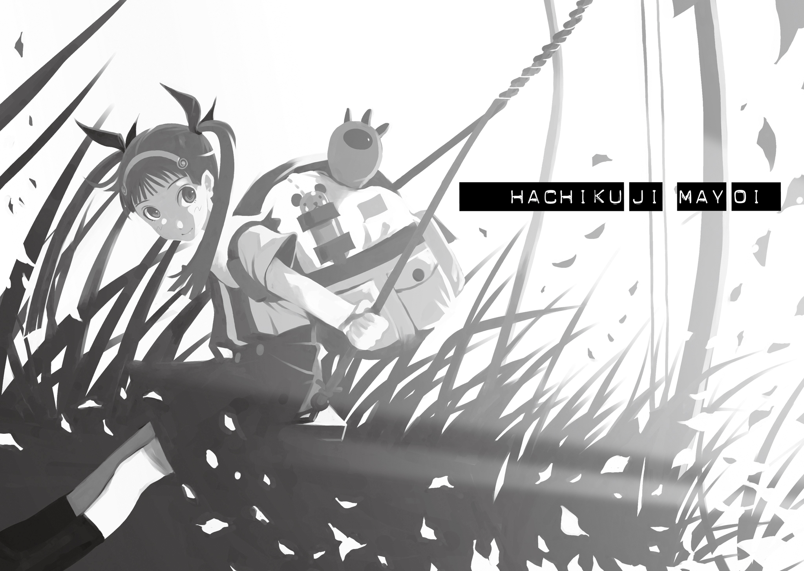
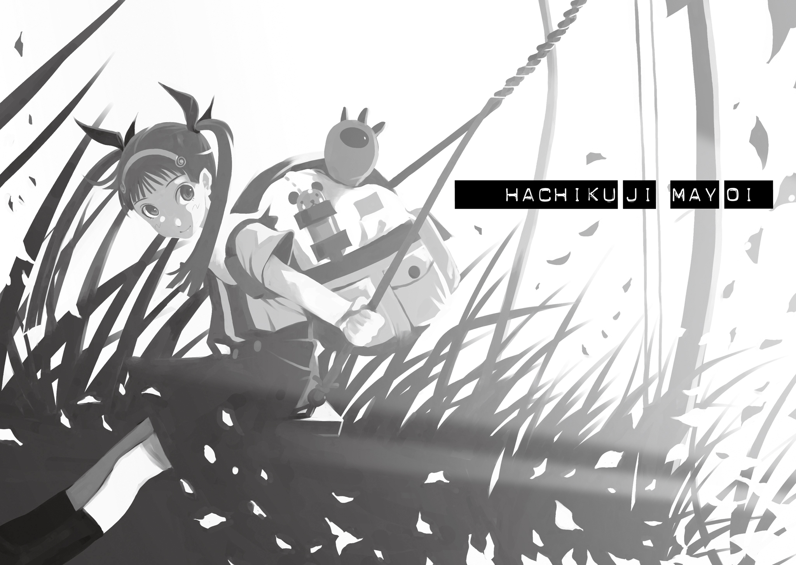

著者：西尾維新
001
戦場ヶ原ひたぎは、クラスにおいて、いわゆる病弱な女の子という立ち位置を与えられている──当然のように体育の授業なんかには参加しないし、全校朝会や全校集会でさえ、貧血対策とやらで、一人だけ日陰で受けている。戦場ヶ原とは、一年、二年、そして今年の三年と、高校生活、ずっと同じクラスだけれど、僕はあいつが活発に動いているという絵をいまだかつて見たことが無い。保健室の常連で、かかりつけの病院に行くからという理由で、遅刻や早退、あるいは欠席を繰り返す。病院に住んでいるんじゃないかと、面白おかしく囁かれるくらいに。
しかし病弱とは言っても、そこに貧弱というイメージは皆無だ。線の細い、触れれば折れそうなたおやかな感じで、それはとても儚げで、その所為だろう、男子の一部では、深窓の令嬢などと、話半分、冗談半分に囁かれたりもする。まことしやかに、といってもいい。確かにその言葉の雰囲気は、戦場ヶ原に相応しいように、僕にも思われた。
戦場ヶ原はいつも教室の隅の方で、一人、本を読んでいる。難しそうなハードカバーのときもあれば、読むことによって知的レベルが下がってしまいそうな表紙デザインのコミック本のときもある。どうやら、かなりの濫読派のようだった。文字であれば何でもいいのかもしれなかったし、そうではなく、そこには明確な基準があるのかもしれなかった。
頭は相当いいようで、学年トップクラス。
試験の後に張り出される順位表の、最初の十人の中に、戦場ヶ原ひたぎの名前が必ず記されている。それも全教科まんべんなく、だ。数学以外は赤点ばかりの僕なんかと較べるのもおこがましい話だが、きっと、脳味噌の構造が、はなっから違うのだろう。
友達はいないらしい。
一人も、である。
戦場ヶ原が、誰かと言葉を交わしている場面も、僕はいまだ見たことが無い──穿った目で見れば、いつだって本を読んでいる彼女は、その本を読むという行為によって、だから話しかけるなと、己の周囲に壁を作っているのかもしれない。それこそ、僕は二年と少し、戦場ヶ原とは机を並べているわけだけれど、その間、彼女とは恐らく一言だって口を利いたことはないと断言できる。できてしまう。戦場ヶ原の声といえば、授業中に教師に当てられて、決まり文句のように発する、か細い『わかりません』が、僕にとってのイコールなのだ（明らかに分かっている問題であろうがどうだろうが、戦場ヶ原は『わかりません』としか答えないのだ）。学校というのは不思議な空間で、友達のいない人間は友達のいない人間同士で一種のコミュニティ（あるいはコロニー）を形成するのが普通だが（実際、去年までの僕がそうだ）、戦場ヶ原はそのルールからも例外にいるようだった。勿論、かといって苛めにあっているということでもない。ディープな意味でもライトな意味でも、戦場ヶ原が迫害されているとか、疎まれているとか、そういったことは、僕の見る限り、ない。いつだって戦場ヶ原は、そこにいるのが当たり前みたいな顔をして、教室の隅で、本を読んでいるのだった。己の周囲に壁を作っているのだった。
そこにいるのが当たり前で。
ここにいないのが当たり前のように。
まあ、だからといって、どうということもない。高校生活を三年間で測れば、一学年二百人として、一年生から三年生までで、先輩後輩同級生、教師までを全部含め、およそ千人の人間と、生活空間を共にするわけだが、一体その中の何人が、自分にとって意味のある人間なのだろうか、なんて考え始めたら、とても絶望的な答が出てしまうことは、誰だって違いないのだから。
たとえ三年間クラスが同じなんて数奇な縁があったところで、それで一言も言葉を交わさない相手がいたところで、僕はそれを寂しいとは思わない。それは、つまり、そういうことだったんだろうな、なんて、後になって回想するだけだ。一年後、高校を卒業して、そのとき僕がどうなっているかなんて分からないけれど、とにかくそのときにはもう、戦場ヶ原の顔なんて、思い出すこともないし──思い出すこともできないのだろう。
それでいい。戦場ヶ原も、きっとそれでいいはずだ。戦場ヶ原に限らず、学校中のみんなきっと、それでいいはずなのだ。そんなことに対し、暗い感想を抱く方が、本来的に間違っているのである。
そう思っていた。
しかし。
そんなある日のことだった。
正確に言うなら、僕にとって地獄のようだった春休みの冗談が終了し、三年生になって、そして僕にとって悪夢のようだったゴールデンウィークの絵空事が明けたばかりの、五月八日のことだった。
例によって遅刻気味に、僕が校舎の階段を駆け上っていると、丁度踊り場のところで、空から女の子が降ってきた。
それが、戦場ヶ原ひたぎだった。
それも正確に言うなら、別に空から降ってきたわけではなく、階段を踏み外した戦場ヶ原が後ろ向きに倒れてきただけのことだったのだが──避けることもできたのだろうけれど、僕は、咄嗟に、戦場ヶ原の身体を、受け止めた。
避けるよりは正しい判断だっただろう。
いや、間違っていたのかもしれない。
何故なら。
咄嗟に受け止めた戦場ヶ原ひたぎの身体が、とても──とてつもなく、軽かったからだ。洒落にならないくらい、不思議なくらい、不気味なくらいに──軽かったからだ。
ここにいないかのように。
そう。
戦場ヶ原には、およそ体重と呼べるようなものが、全くと言っていいほど、なかったのである。
002
「戦場ヶ原さん？」
僕の問いかけに、羽川は首を傾げる。
「戦場ヶ原さんが、どうかしたの？」
「どうかっつうか──」
僕は曖昧に言葉を濁した。
「──まあ、なんか、気になって」
「ふうん」
「ほら、何か、戦場ヶ原ひたぎだなんて、変わった名前で面白いじゃん」
「……戦場ヶ原って、地名姓だよ？」
「あー、えっと、そうじゃなくて、僕が言っているのは、ほら、下の名前の方だから」
「戦場ヶ原さんの下の名前って、ひたぎ、でしょう？ そんな変わってるかな……ひたぎって、確か、土木関係の用語じゃなかったっけ」
「お前は何でも知ってるな……」
「何でもは知らないわよ。知ってることだけ」
羽川は納得しかねている風だったが、しかし特に追及してくるでもなく、「珍しいね、阿良々木くんが、他人に興味を持つなんて」と言った。
余計な世話だ、と僕は返した。
羽川翼。
クラスの委員長である。
これがまた、如何にも委員長といった風情の女子で、きっちりとした三つ編みに眼鏡をかけて、規律正しく折り目正しく、恐ろしく真面目で教師受けも良いという、今や漫画やアニメにおいてさえ絶滅危惧種に指定されそうな存在なのである。今までの人生ずっと委員長をやってきて、きっと卒業した後でも、何らかの委員長であり続けるのではないかと、そう思わせる風格を持つ、つまるところ、委員長の中の委員長である。神に選ばれた委員長ではないかと、真実味たっぷりに噂する者もいるほどだ（僕だけど）。
一年次、二年次は別のクラスで、この三年次で同じクラスになった。とはいえ、同じクラスになるその以前から、羽川の存在は聞いていた。当たり前だ、戦場ヶ原が学年トップクラスの成績ならば、羽川翼は学年トップの成績なのである。五教科六科目で六百点満点なんて噓みたいなことを平気でやってのけ、そう、これは今でも明確に記憶している、二年生一学期の期末テストで、保健体育及び芸術科目まで含めた全教科で、落としたのは日本史の穴埋め問題一問のみという、とんでもなく化物じみた成果を達成したこともある。そんな有名人、知りたくなくとも勝手に聞こえてくるってものだ。
そして。
たちの悪いことに、いやいいことなのだろうけれど、とにかく迷惑この上ないことに、羽川は、とても面倒見のいい、善良な人間であったのだった。そしてこれは素直にたちの悪いことに、とても思い込みの激しい人間でもあった。過度に真面目な人間にありがちなように、こうと決めたら梃子でも動かない。春休みに、既に羽川とは、ちょっとした顔合わせが済んでいたのだが、明けてクラス替え、同じクラスになったと知るや否や、彼女は、「きみを更生させてみせます」と、僕に宣言したのである。
別に不良でもなければさして問題児でもない、クラスにおける置物のような存在だと、己自身を評価していた僕にとって、彼女のその宣言は正に青天の霹靂だったが、いくら説得しても羽川の妄想じみた思い込みはとどまることを知らず、あれよあれよと僕はクラスの副委員長に任命され、そして現在、五月八日の放課後、六月半ばに行われる予定の文化祭の計画を、教室に残って羽川と二人、練っているというわけだった。
「文化祭っていっても、私達、もう三年生だからね。さしてすることもないんだけれど。受験勉強の方が大事だし」
羽川は言う。
当然のように文化祭よりも受験勉強を優先させて考える辺り、委員長の中の委員長である。
「漠然としたアンケートじゃ意見がばらけちゃって時間がもったいないから、あらかじめ私達で候補を絞って、その中から、みんなの投票で決定するっていうので、いいかな？」
「いいんじゃないのか？ 一見民主主義っぽくて」
「相変わらず嫌な言い方するよね、阿良々木くんは。ひねてるっていうか」
「ひねてなんかない。やめろ、人をむやみにトンガリ呼ばわりするな」
「参考までに、阿良々木くんは、去年一昨年、文化祭の出し物、何だった？」
「お化け屋敷と、喫茶店」
「定番だね。定番過ぎる。平凡といってもいいかも」
「まあね」
「凡俗といってもいいかも」
「そこまでは言うな」
「あはは」
「大体──平凡な方が、でも、この場合はよくないか？ お客さんだけじゃなくて、こっちも楽しまなくちゃならねえってんだから……ん。そう言えば、戦場ヶ原は──文化祭にも、参加してなかったな」
去年も──一昨年もだ。
いや、文化祭だけではない。およそ行事と呼べるもの──通常授業以外のものには、全くといっていいほど、戦場ヶ原は参加していない。体育祭は勿論、修学旅行にも、野外授業にも、社会科見学にも、何にも、参加していない。激しい活動は医者から禁じられている──とか、なんとかで。今から考えてみればおかしな話である。激しい運動とか言うのならまだしも、活動を禁じられているという、その不自然な物言い──
しかし、もしも──
もしもあれが、僕の錯覚でないとしたら。
戦場ヶ原に、体重がないのだとしたら。
通常の授業以外の、そう、不特定多数の人間と、ともすれば身体が接触する機会のある、体育の授業などは──絶対に参加するわけにはいかない、対象だろう。
「そんなに気になるの？ 戦場ヶ原さんのこと」
「そういうわけでもないんだけど──」
「病弱な女の子、男子は好きだもんねー。あー、やだやだ。汚らわしい汚らわしい」
からかうようにいう羽川。
割合珍しいテンションだった。
「病弱、ねえ」
病弱というなら──病弱だろう。
いや、しかし、あれは病気なのだろうか？
病気でいいのだろうか？
身体が弱くて、それで必然的に身体が軽くなるというのは、分かりやすい説明だが──既にあれは、そういったレベルでの話ではなかった。
階段の、ほとんど一番上から、踊り場まで、細身の女子とはいえ、一人の人間が落下したのだ。通常ならば、受け止めた方でさえ、結構な怪我をしかねないようなシチュエーションである。
なのに──衝撃はほとんどなかった。
「でも、戦場ヶ原さんのことなら、阿良々木くんの方がよく知ってるんじゃないのかな？ 私なんかに訊くよりさ。なんったって、三年連続で同じクラスだっていうんだから」
「そう言われりゃ、確かにそうなんだが──女の子の事情は、女の子の方が知ってるかと思って」
「事情って……」
羽川は苦笑した。
「女の子に事情なんてものがあるとしたら、それこそおいそれと教えてあげるわけにゃいかないでしょうが、男の子に」
「そりゃそうだ」
当たり前だった。
「だからまあ、クラスの副委員長が、副委員長として、クラスの委員長に質問しているんだと思ってくれ。戦場ヶ原って、どんな奴なんだ？」
「そうくるか」
羽川は、話をしながらも進めていた走り書きを止め（お化け屋敷、喫茶店を筆頭に、クラスの出し物の候補を、書いては消し書いては消ししていた）、ふうむ、と手を束ねた。
「戦場ヶ原、なんて、一見危なっかしい感じの苗字だけど、まあ、何の問題もない、優等生だよ。頭いいし、掃除とか、サボらないし」
「だろうな。それくらい、僕にもわかる。僕じゃわからないことが、聞きたいんだ」
「でも、同じクラスになって、まだ、丁度一ヵ月くらいだしね。わかんないってのが、やっぱりかな。ゴールデンウィーク、挟んじゃってるし」
「ゴールデンウィークね」
「ん？ ゴールデンウィークがどうかした？」
「どうもしない。続けて」
「ああ……そうだね。戦場ヶ原さん、言葉数も多い方じゃないし──友達も、全然、いないみたい。色々、声かけてはみてるけど、彼女の方から、壁作っちゃってる感じで──」
「………………」
さすが、面倒見のいいことだ。
無論、それを見込んでの、質問だったのだが。
「あれは──本当に難しいわ」
羽川は、言った。
重い響きで。
「やっぱり病気の所為なのかな。中学生のときは、もっと元気一杯で、明るい子だったんだけどね」
「……中学生のときって──羽川、戦場ヶ原と同じ中学だったのか？」
「え？ あれ、それを知ってて私に訊いたんじゃないの？」
こっちが意外だというような表情を、羽川は浮かべる。
「うん、そうだよ。同じ中学出身。公立清風中学。もっとも、同じクラスだったことは、やっぱりないけれど──戦場ヶ原さん、有名だったから」
お前よりもか、と言いかけて、とどまる。羽川は、有名人扱いされるのを、ことのほか嫌うのだ。正直自覚が足りないとは思うが、本人は自分のことを『ちょっと真面目なだけが取り柄の普通の女の子』程度にしか捉えていないらしい。勉強なんて頑張れば誰でもできるというお題目を、本気で信じているのである。
「すごく綺麗だったし、運動もできたから」
「運動も……」
「陸上部のスターだったんだよ。記録も、いくつか残ってるはず」
「陸上部──か」
つまり。
中学時代は、あんな風ではなかったということ。
元気一杯で、明るい──というのも、正直言って、今の戦場ヶ原からは、全く想像ができない。
「だから、話だけなら、色々聞いたもんだったよ」
「話って？」
「すごく人当たりのいい、いい人だって話。わけ隔てなく誰にでも優しいって、そこまで言えば言い過ぎじゃないのかってくらい、いい人で、しかも努力家だって話。なんか、お父さんが外資系の企業のお偉いさんらしくって、おうちもすごい豪邸で、すごいお金持ちなんだけれど、それでも全然気取ったところがないんだって話。高みにあって、更に高みを目指しているって話」
「超人みたいな奴だな」
まあ、その辺は、話半分なのだろうけれど。
噂は噂。
「全部、当時の話だけれどね」
「……当時」
「高校に入って、身体を壊した、みたいなことは、一応、聞いてはいたんだけれど──それでも、だから、実を言うと、今年、同じクラスになって、びっくりした。間違っても、あんな、クラスの隅の方にいる人じゃなかったはずだもの」
私の勝手なイメージの話だけれど、と羽川。
確かに勝手なイメージなのだろう。
人は変わる。
中学生の頃と高校生の今じゃ、訳が違う。僕だってそうだし、羽川だってそうだ。だから戦場ヶ原だって、そうだろう。戦場ヶ原だって、色々あっただろうし、本当に、戦場ヶ原は身体を壊しただけなのかもしれない。その所為で、明るかった性格を失っただけなのかもしれない。元気を一杯、失ったのかもしれない。身体が弱っているときは、誰だって弱気になるものだ。もとが活発だったというのなら、なおさらである。だから、その推測が、きっと正しいのだろう。
今朝のことさえなければ。
そう言える。
「でも──こんなことを言っちゃいけないんだろうけれど、戦場ヶ原さん」
「何」
「今の方が──昔より、ずっと綺麗、なんだよね」
「………………」
「存在が──とても、儚げで」
沈黙するに──十分な言葉だった。
それは。
存在が儚げ。
存在感が──ない。
幽霊のように？
戦場ヶ原ひたぎ。
病弱な少女。
体重のない──彼女。
噂は──噂。
都市伝説。
街談巷説。
道聴塗説。
話半分──か。
「……あー。そうだ、思い出した」
「え？」
「僕、忍野に呼ばれてるんだった」
「忍野さんに？ 何で？」
「ちょっと──まあ、仕事の手伝いを」
「ふ、ううん？」
羽川は微妙な反応を見せる。
いきなりの話題の切り替え──というか、露骨なまでの切り上げ方に、不審を覚えているようだ。仕事の手伝いという微妙な言い方も、その疑いに拍車をかけているのだろう。これだから、頭のいい奴の相手は苦手だ。
察してくれてもよさそうなものなのに。
僕は席を立ちつつ、半ば強引に続けた。
「というわけで、僕、もう帰らなくちゃいけないんだった。羽川、後、任せていいか？」
「埋め合わせをすると約束できるなら、今日はいいわ。大した仕事も残ってないし、今日は勘弁してあげる。忍野さんを待たせても悪いしね」
羽川は、それでもとりあえず、そう言ってくれた。忍野の名前が効いたらしい。僕にとってそうであるように、羽川にとっても忍野は恩人にあたるので、不義理は絶対に有り得ないのだろう。まあ勿論、その辺は計算ずくだけれど、まるっきり噓というわけでもない。
「じゃあ、出し物の候補は、私が全部決めちゃっていい？ 後で一応、確認だけはしてもらうけれど」
「ああ。任せる」
「忍野さんによろしくね」
「伝えとくよ」
そして僕は教室から外に出た。
003
教室から出、後ろ手で扉を閉じ、一歩進んだところで、背中から、
「羽川さんと何を話していたの？」
と、声を掛けられた。
振り向く。
振り向くときには、まだ僕は、相手が誰だか把握できていない──聞き覚えのない声だった。しかし聞いたことのある声ではあった。そう、授業中に教師に当てられて、決まり文句のように発する、か細い『わかりません』──
「動かないで」
その二言目で、相手が戦場ヶ原であることを僕は知る。僕が振り向いたその瞬間、狙い澄ましたように、まるで隙間を通すように、僕の口腔内に、たっぷりと伸ばしたカッターナイフの刃を、戦場ヶ原が通したことも──知った。
カッターナイフの刃が。
僕の左頰内側の肉に、ぴたりと触れる。
「…………っ！」
「ああ、違うわ──『動いてもいいけれど、とても危険よ』というのが、正しかったのね」
加減しているのでもない、しかしかといって乱暴にしているのでもない、そんなぎりぎりの強さで──刃は、僕の頰肉を、引き伸ばす。
僕としては、もう間抜けのように、大きく口を開いて、微動だにせず、戦場ヶ原の忠告通り──動かずにいることしか──できなかった。
怖い。
と、思った。
カッターナイフの刃が──ではない。
僕にそんな真似をしておきながら、ちっとも揺るがない、ぞっとするくらいに冷えた視線で──僕を見つめる戦場ヶ原ひたぎが、怖かった。
こんな──
こんな剣吞な目をした、奴だったのか。
確信した。
今、僕の左頰の内側に添えられているカッターナイフの刃が、潰されてもおらず、絶対に峰でもないということを、戦場ヶ原のその目を見ることで、僕は確信した。
「好奇心というのは全くゴキブリみたいね──人の触れられたくない秘密ばかりに、こぞって寄ってくる。鬱陶しくてたまらないわ。神経に触れるのよ、つまらない虫けらごときが」
「……お、おい──」
「何よ。右っ側が寂しいの？ だったらそう言ってくれればいいのに」
カッターナイフを持っている右手とは反対の左手を、戦場ヶ原は振り上げる。その素早さに、平手打ちでもされるのかと僕は、歯を食いしばらないように身構えたが、しかし、違った。そうではなかった。
戦場ヶ原は左手にはホッチキスを持っていた。
それがはっきりと視認できるよりも先に、彼女はそれを、僕の口の中に差し込んだ。勿論ホッチキスの全部を差し込んだわけではない、そうしてくれていたらむしろよかった、戦場ヶ原は、僕の右頰肉を、ホッチキスで挟み込むように──綴じる形で、差し込んだのだ。
そして、緩く──挟まれる。
綴じる、ように。
「か……は」
体積の大きい頭の方、つまり、ホッチキスの針が装塡されている側を入れられているため、僕の口の中は大入り満員状態で、当然のように、言葉を発することができなくなる。カッターだけなら、動けないまでもまだ喋ることはできたのだろうが──今はもう、それを試す気にもならない。考えたくも無い。
まず薄くて鋭いカッターナイフを差し込むことで大口を開けさせ、そこにすかさずホッチキスを続ける──隅々まで計算された、恐ろしい手際の良さだった。
畜生、口の中にこんな色々突っ込まれたことなんて、中学一年生の頃に永久歯の虫歯の治療を受けて以来だ。あれから、二度とそんなことがないように、毎朝毎晩毎食後、歯を磨き続け、キシリトール入りのガムをかみ続けてきたというのに、それがまさかこんなことになろうとは。
なんて足元のすくわれ方だ。
またたく間に──この状況。
つい壁一枚隔てた向こう側で、羽川が文化祭の出し物の候補を決めているだなんて、とても思えないような異常空間が、何の変哲も無い私立高校の廊下において、形成されていた。
羽川……。
何が『一見危なっかしい感じの苗字だけど』だ。
思いっきり名前通りの女じゃないか……。
あいつも案外人を見る目がないなあ！
「羽川さんに私の中学時代の話を聞いたところで、次は担任の保科先生かしら？ それとも一足飛ばしに、保健の春上先生のところへ行ってみる？」
「………………」
喋れない。
そんな僕をどう見ているのか、戦場ヶ原は、やれやれといった風に、大仰にため息をつく。
「全く私も迂闊だったわ。『階段を昇る』という行為には人一倍気を遣っているというのに、この有様。百日の説法屁一つとはよく言ったものだわ」
「………………」
こんな状況でも花も恥じらう十代の乙女が屁という言葉を口にすることに抵抗を覚える僕は案外いい奴なんじゃないかと思った。
「まさかあんなところにバナナの皮が落ちているだなんて、思いもしなかったわ」
「………………」
僕は今バナナの皮で足を滑らす女に活殺自在。
ていうかなんでそんなものが学校の階段に。
「気付いているんでしょう？」
戦場ヶ原は僕に問う。
目つきは、剣吞なままだ。
こんな深窓の令嬢がいてたまるか。
「そう、私には──重さがない」
体重が、ない。
「といっても、全くないというわけではないのよ──私の身長・体格だと、平均体重は四十キロ後半強というところらしいのだけれど」
五十キロらしい。
左頰が内側から伸ばされ、右頰肉が圧迫された。
「…………っ！」
「変な想像は許さないわよ。今私のヌードを思い浮かべたでしょう」
全然違うが、結果的には鋭かった。
「四十キロ後半強というところらしいのだけれど」
戦場ヶ原は主張した。
譲らないみたいだ。
「でも、実際の体重は、五キロ」
五キロ。
生まれたばかりの赤子と、そう変わらない。
五キロのダンベルを思い浮かべれば、一概にゼロに近いといえるほどの数字ではないが、しかし五キロという質量が、人間一人の大きさに分散していることを考えれば、密度の問題──実感としては、体重がないも同然だ。
受け止めるのも、容易い。
「まあ、正確を期すなら、体重計が表示する重量が五キロというだけなのだけれど──本人としては自覚はないわ。四十キロ後半強だった頃も、私自身は、今も、何も変わらない」
それは──
重力から受ける影響が少ないということなのだろうか？ 質量ではなく、容積──確か、水の比重が一で、人間もほとんど水で構成されている都合上、比重、密度はおよそ一──単純に考えて、戦場ヶ原はその十分の一の密度であるということになる。
骨密度がそんな数字なら、あっという間に骨粗鬆症だろう。内臓だって脳髄だって、正しくは動作しないはずだ。
だから、そうじゃない。
数字の問題じゃ──ない。
「何を考えているかわかるわよ」
「…………」
「胸ばかりみて、いやらしい」
「…………っ！」
断じて考えていない！
どうやら戦場ヶ原はかなり自意識の高い女子高生のようだった。それだけ綺麗な容姿をしていれば無理もないが──爪の垢でも煎じて、壁の向こうで仕事をしている委員長に飲ませてあげたい。
「底の浅い人間はこれだから嫌になるわ」
この状況では、どうも、誤解を解くのは不可能のようだとして──ともかく、僕が考えていたのは、戦場ヶ原は、つまり、病弱とは縁遠い、与えられている立ち位置がまるで看板違いな身体であるということだ。体重が五キロだなんて、それこそ病弱どころか貧弱であるはずなのに、そうじゃない。どころか──強いて言うなら、重力が十倍の星から地球にやってきた宇宙人みたいなものだろう、かなり、運動能力は高いはずだ。元々、陸上部だったというのだから、尚更である。ぶつかり合いに向いていないのは確かだろうが……。
「中学校を卒業して、この高校に入る前のことよ」
戦場ヶ原は言った。
「中学生でも高校生でもない、春休みでもない、中途半端なその時期に──私はこうなったの」
「…………」
「一匹の──蟹に出会って」
か──蟹？
蟹と言ったか？
蟹って──冬に食べる、あの蟹？
甲殻綱十脚目の──節足動物？
「重さを──根こそぎ、持っていかれたわ」
「…………」
「ああ、別に理解しなくていいのよ。これ以上かぎまわられたらすごく迷惑だから、喋っただけだから。阿良々木くん。阿良々木くん──ねえ、阿良々木暦くん」
戦場ヶ原は。
僕の名を、繰り返して、呼んだ。
「私には重さがない──私には重みがない。重みというものが、一切ない。全く困ったものじゃない。さながら『ヨウスケの奇妙な世界』といった有様よ。高橋葉介、好きかしら？」
「…………」
「このことを知っているのはね、この学校では、保健の春上先生だけなの。今現在、保健の春上先生だけ。校長の吉城先生も教頭の島先生も学年主任の入中先生も担任の保科先生も知らないわ。春上先生と──それから、あなただけ。阿良々木くん」
「…………」
「さて、私は、あなたに私の秘密を黙っていてもらうために、何をすればいいのかしら？ 私は私のために、何をすべきかしら？ 『口が裂けても』喋らないと、阿良々木くんに誓ってもらうためには──どうやって『口を封じれば』いいかしら？」
カッターナイフ。
ホッチキス。
正気か、こいつ──同級生に対して、なんて追い込み方をするんだ。こんな人間がいていいのか？ こんな恐ろしい人間と、机を並べて同一空間内に、二年以上もいたのかと思うと、素直に背筋が震える。
「病院の先生が言うには、原因不明──というより、原因なんかないんじゃないかって。他人の身体をあそこまで屈辱的に弄繰り回して、その結論はお寒いわよね。元から、それがそうであるように、そうであったとしかいえない──なんて」
戦場ヶ原は自嘲のように言う。
「あまりに馬鹿馬鹿しいと思わない？ 私──中学校までは、普通の、可愛い女の子だったのに」
「………………」
手前で手前のことを可愛いと言い放った事実はひとまず置いておくとして。
病院に通っているのは、本当だったか。
遅刻、早退、欠席。
それに──保健の先生。
どんな気分なのだろう、と、考えてみる。
僕のように──僕のように、ほんの短い、二週間程度の春休みの間だけではなく──高校生になってから、ずっとそうだった、というのは。
何を諦め。
何を捨てるのに。
十分な、時間だっただろう。
「同情してくれるの？ お優しいのね」
戦場ヶ原は、僕の心中を読んだのか、吐き捨てるようにそう言った。汚らわしいとでも、言わんばかりに。
「でも私、優しさなんて欲しくないの」
「…………」
「私が欲しいのは沈黙と無関心だけ。持っているならくれないかしら？ ニキビもない折角のほっぺた、大事にしたいでしょう？」
戦場ヶ原は。
そこで、微笑んだ。
「沈黙と無関心を約束してくれるのなら、二回、頷いて頂戴、阿良々木くん。それ以外の動作は停止でさえ、敵対行為と看做して即座に攻撃に移るわ」
一片の迷いもない言葉だった。
僕は、選択の余地なく、頷く。
二回、頷いてみせる。
「そう」
戦場ヶ原はそれを見て──安心したようだった。
選択の余地のない、取引とも協定とも言えない、こちらとしては同意するしかない要求だったにもかかわらず──僕がそれに素直に応じたことに、戦場ヶ原は、安心、したようだった。
「ありがとう」
そう言って、まずはカッターナイフを、僕の左頰内側の肉から離し、ゆっくりと、慎重というよりは緩慢な動作で、抜く。その際に、誤って口腔を傷つけないようにと、配慮の感じられる手つきだった。
抜いたカッターの、刃を仕舞う。
きちきちきちきち、と。
そして、次はホッチキス。
「……ぎぃっ!?」
がじゃこっ、と。
信じられないことに。
ホッチキスを──戦場ヶ原は、勢いよく、綴じた。そして、その激しい痛みに反応して、僕がアクションを取る前に、すいっと要領よく、そのホッチキスを、戦場ヶ原は引き抜く。
僕は、その場に、崩れるように、蹲った。
外側から頰を抱えるように。
「ぐ……い、いい」
「悲鳴を上げないのね。立派だわ」
そ知らぬ顔で──
戦場ヶ原が、上から言った。
見下すように。
「今回はこれで勘弁してあげる。自分の甘さが嫌になるけれど、約束してくれた以上、誠意をもって応えないとね」
「……お、お前──」
がじゃこっ。
僕が何か言おうとしたところに、被せるように、戦場ヶ原は、ホッチキスを、音を立てて──中空で、綴じた。
変形した針が、僕の目の前に落ちる。
自然、身が竦んだ。
反射という奴だ。
たった一回で──条件反射が組み込まれた。
「それじゃ、阿良々木くん、明日からは、ちゃんと私のこと、無視してね。よろしくさん」
それだけ言って、僕の反応を確認するようなこともなく、戦場ヶ原は踵を返し、すたすたと、廊下を歩いていった。僕が、蹲った姿勢から、何とか立ち上がるよりも前に、角を折れて、その後ろ姿は見えなくなる。
「あ……悪魔みたいな女だ」
脳味噌の構造が──はなっから、違う。
あの状況にあっても、そうは言っても、実際にやったりはしないのだろうと、どこか僕は、たかをくくっていた。むしろこの場合、あいつがカッターナイフではなくホッチキスの方を選択してくれたことを、幸運と取るべきか。
先刻までのように痛みを和らげるためではなく、頰の状態を確認するために、そっと、撫でる。
「………………」
よし。
大丈夫だ、貫通はしていない。
続けて僕は、口の中に、今度は自分の指を差し込む。右頰なので左の指だ。すぐに、それらしき感触に行き当たった。
全然消えてなくならない、弱くもならない鋭い痛みで、分かりきってはいたことだが──ホッチキスの針は、実は一発目は装塡されていなかった、やっぱりただの脅し脅かしでしたという、平和的な線は、消滅ってわけか……正直、かなり期待していたのだが。
まあいい。
貫通していないということは、針は、極端に変形していないということだ……ほとんど、コの字形の直角状態を保っているはず。言うなら返しのついていない形、ならばそれほどの抵抗なく、力任せに引き抜けるはずだ。
人さし指と親指で摘んで、一気に。
鋭い痛みに、鈍い味が加わった。
血が噴き出したらしい。
「……くあぁ……」
大丈夫。
この程度なら──僕は大丈夫。
べろで、頰の内側にできた二つの傷穴を、舐めるようにしながら、僕は抜き取ったホッチキスの針を、そのまま折り曲げて、学ランのポケットに入れた。さっき戦場ヶ原が落とした針も、拾って、同じようにした。誰かが裸足で踏んだりしたら危険だ。もう僕にはホッチキスの針がマグナム弾と同じようにしか見えなかった。
「あれ？ 阿良々木くん、まだいたの？」
していると、教室から羽川が出てきた。
どうやら作業は終わったらしい。
ちょっと遅い。
いや、ナイスタイミングというべきか。
「忍野さんのところ、早くいかなくていいの？」
疑問そうに言う羽川。
何も悟ってない風だった。
壁一枚向こう側──そう、全く、こんな薄い、壁一枚向こう側なのだ。それなのに、羽川に全く悟らせずに、あれだけの荒業をやってのけた戦場ヶ原ひたぎ、やはり──只者ではない。
「羽川……お前、バナナ、好きか」
「え？ まあ、別に嫌いじゃないけれど。栄養価高いし、好きか嫌いかでいえば、うん、好きかな」
「どんな好きでも校内では絶対に食べるなよ！」
「は、はあ？」
「食べるだけならまだいい、残った皮を階段にポイ捨てしてみろ、僕はお前を絶対に許さない！」
「一体何を言っているの阿良々木くん!?」
手を口に当て、戸惑いの表情の羽川。
そりゃそうだろう。
「それより阿良々木くん、忍野さんの──」
「忍野のところへは──これから行くんだよ」
そう言って。
僕はそう言って、羽川の脇を抜けるように、一息に、駆け出した。「あー！ こら、阿良々木くん、廊下を走っちゃ駄目！ 先生に言いつけちゃうよ！」と、後ろから羽川の、そんな声が聞こえたが、当然のように黙殺する。
走る。
とにかく、走る。
角を折れたところで、階段。
ここは四階。
まだ、そう離れていないはずだ。
ホップ、ステップ、ジャンプのように、二段、三段、四段飛ばしで階段を飛び下りて──踊り場で着地。
衝撃が脚に来る。
体重分の衝撃だ。
こんな衝撃も──
だから、戦場ヶ原には、ないのだろう。
重さが無い。
重みが無い。
それは──足元が覚束ないということ。
蟹。
蟹と──彼女は言った。
「こっちじゃ、なくて──こっちか」
まさか今から、横に折れたりはしないだろう。追いかけてくると思っているわけもない、素直に縦に、校門に向かっているはずだ。部活も、どうせ帰宅部に決まっている、仮に何らかの何らかに属していたとしても、こんな時間から始まる活動なんて有り得ない。そう決め付けて、僕は三階から二階へ、躊躇無く、階段を降りる。飛び降りる。
そして二階から一階への踊り場。
戦場ヶ原は、そこにいた。
どたばた音をさせながら、転がるように追いかけたのだ、既に察していたのだろう、こちらに背中を向けてはいるものの、既に、振り返っている。
冷めた目で。
「……呆れたわ」
そう言う。
「いえ、ここは素直に驚いたというべきね。あれだけのことをされておいて、すぐに反抗精神を立ち上げることができたのなんて、覚えている限りではあなたが初めてよ、阿良々木くん」
「初めてって……」
他でもやってたのかよ。
百日の説法とか言ってた癖に。
でも、確かに、考えてみれば、『体重が無い』なんて、触れられればそれですぐにバレてしまうような秘密を、完全に守り通すなんてこと、現実的には不可能だよな……。
そう言えば『今現在』って言ってた、こいつ。
本当に悪魔なのかもしれない。
「それに、口の中の痛みって、そう簡単に回復するようなものじゃないはずなのだけれど。普通、十分はその場から動けないのに」
経験者の台詞だった。
怖過ぎる。
「いいわ。分かった。分かりました、阿良々木くん。『やられたらやり返す』というその態度は私の正義に反するものではありません。だから、その覚悟があるというのなら」
戦場ヶ原はそう言って。
両腕を、左右に、広げた。
「戦争を、しましょう」
その両手には──カッターナイフとホッチキスを始めに、様々な文房具が、握られていた。先の尖ったＨＢの鉛筆、コンパス、三色ボールペン、シャープペンシル、アロンアルフア、輪ゴム、ゼムクリップ、目玉クリップ、ガチャック、油性マジック、安全ピン、万年筆、修正液、鋏、セロハンテープ、ソーイングセット、ペーパーナイフ、二等辺三角形の三角定規、三十センチ定規、分度器、液体のり、各種彫刻刀、絵の具、文鎮、墨汁。
…………。
将来、こいつと同じクラスだったという事実だけで、世間から謂れなき迫害を受けてしまうような予感がした。
個人的にはアロンアルフアが一番デンジャラス。
「ち……違う違う。戦争はしない」
「しないの？ なあんだ」
どこか残念そうな響きだった。
しかし広げた両腕は、まだ収めない。
文房具という名の凶器は、きらめいたままだ。
「じゃあ、何の用よ」
「ひょっとしたら、なんだけれど」
僕は言った。
「お前の、力になれるかもしれないと、思って」
「力に？」
心底──
馬鹿にしたように、彼女は、せせら笑った。
いや、怒ったのかもしれない。
「ふざけないで。安い同情は真っ平だと言ったはずよ。あなたに何ができるっていうのよ。黙って、気を払わないでいてくれたらそれでいいの」
「…………」
「優しさも──敵対行為と看做すわよ」
言って。
彼女は一段、階段を昇った。
本気だろう。
躊躇しない性格であることは、先程のやり取りで、もう分かり過ぎるほど分かっている。嫌というほどに、だ。
だから。
だから僕は何も言わず、ぐい、と、自分の唇の端に指を引っ掛けて、頰を伸ばして見せた。
右手の指で、右頰を、だ。
自然、右頰の内側が、晒される。
「──え？」
それを見て、さすがの戦場ヶ原も、驚いたようだった。ぽろぽろと、両手に持っていた文房具という名の凶器を、取り落とす。
「あなた──それって、どういう」
問われるまでもない。
そう。
血の味も、既にしない。
戦場ヶ原がホッチキスでつけた口の中の傷は、既に、跡形も無く、治ってしまっていた。
004
春休みのことである。
僕は吸血鬼に襲われた。
リニアモーターカーが実用化し、修学旅行で海外へ行くのが当たり前みたいなこの時代に、恥ずかしくってもう表に出られないくらいの事実だが、とにかく、僕は吸血鬼に襲われたのだ。
血も凍るような、美人だった。
美しい鬼だった。
とても──美しい鬼だった。
学ランのカラーで隠れてはいるが、今でも僕の首筋には、彼女に深く咬まれた、その痕跡が残っている。暑くなる前に、どうにか髪が伸びてくれればと思っているのだが、それはさておき──普通、一般人が吸血鬼に襲われたとなれば、たとえばヴァンパイアハンターとかいう吸血鬼専門の狩人だったり、キリスト教の特務部隊だったり、あるいは吸血鬼でありながら同属を狩る吸血鬼殺しの吸血鬼だったりが、助けてくれるのがストーリーってものなのだろうが、僕の場合、通りすがりの小汚いおっさんに助けられた。
それで、僕は何とか、人間に戻れたが──日光も十字架も大蒜も平気になったが、しかし、その影響というか後遺症で、身体能力は、著しく、上昇したままなのだ。といっても、運動能力ではなく、新陳代謝など、いわゆる回復力方面の話だが。カッターナイフで頰を切り裂かれていたら果たしてどうだったかはわからないが、ホッチキスの針が刺さった程度ならば、回復するまでに三十秒もいらない。それでなくとも、どんな生物であれ、口の中の傷の回復は早いものなのだ。
「忍野──忍野さん？」
「そう。忍野メメ」
「忍野メメ、ね──なんだか、さぞかしよく萌えそうな名前じゃないの」
「その手の期待はするだけ無駄だぞ。三十過ぎの年季の入った中年だからな」
「あっそう。でも子供の頃は、さぞかし萌えキャラだったのでしょうね」
「そういう目で生身の人物を見るな。ていうか、お前、萌えとかキャラとか分かる奴なのか？」
「これしき、一般教養の部類よ」
戦場ヶ原は平然と言った。
「私みたいなキャラのことを、ツンデレっていうのでしょう？」
「………………」
お前みたいなキャラはツンドラって感じだ。
閑話休題。
僕や羽川、戦場ヶ原の通う、私立直江津高校から、自転車で二十分くらい行った先、住宅街から少し外れた位置に、その学習塾は建っている。
建っていた。
数年前、駅前に進出してきた大手予備校のあおりをもろに食らう形で、経営難に陥り、潰れてしまったそうだ。僕がこの、四階建てのビルディングの存在を知ったときには、もう見事な廃墟になった後だったので、その辺りは全て、聞いた事情という奴だけれど。
危険。
私有地。
立入禁止。
そんな看板が乱立し、安全第一のフェンスで取り囲まれてはいるものの、そこらじゅうが隙間だらけで、出入りは自由と言っていい。
この廃墟に──忍野は住んでいる。
勝手に居ついている。
春休みから数えて、一ヵ月、ずっとだ。
「それにしてもお尻が痛いわ。じんじんする。スカートに皺がよっちゃったし」
「僕の責任じゃない」
「言い逃れはやめなさい。切り落とすわよ」
「どの部位をですかっ!?」
「自転車の二人乗りなんて私は初めての経験だったのだから、もっと優しくしてくれてもよさそうなものじゃない」
優しさは敵対行為じゃなかったのか。
言うことなすこと滅茶苦茶な女だ。
「じゃあ、具体的にどうすればよかったんだよ」
「そうね。ほんの一例だけれど、たとえば、あなたの鞄を座布団代わりに寄越すなんてのはどうだったかしら」
「自分以外はどうでもいいのかお前は」
「お前呼ばわりしないで頂戴。ほんの一例だけれどって言ったじゃない」
それが何のフォローになっているのだろう。
はなはだ疑問だった。
「ったく──実際、マリー・アントワネットだって、お前よりはもう少し謙虚で、慎み深い人間だったろうよ」
「彼女は私の弟子みたいなものなの」
「時系列はっ!?」
「そんな気安く私の言葉に突っ込みを入れないでくれるかしら。さっきから、もう、本当に馴れ馴れしいわ。もしも知らない人に聞かれたらクラスメイトだと思われるじゃない」
「いや、クラスメイトじゃん！」
そこまで否定されるのかよ。
なんだか、あんまりだ。
「たく……お前を相手にするには、どうやらとてつもない忍耐力が必要とされるようだな……」
「阿良々木くん。その文脈だと阿良々木くんじゃなくて私の性格が悪いみたいに聞こえるわよ？」
そう言ったんだ。
「ていうか、お前、自分の鞄はどうしたんだ。手ぶらだけど。持ってないのか」
そういえば、戦場ヶ原が、手に荷物を持っている図というのを、僕はこれまで、見た覚えがない。
「教科書は全て頭の中に入っているわ。だから学校のロッカーに置きっぱなし。身体中に文房具を仕込んでおけば、鞄は不要ね。私の場合、体育の着替えなんかは、いらないし」
「ああ、なるほど」
「両手が自由になっていないと、いざというときにどうしたって戦いにくいもの」
「…………」
全身凶器。
人間凶器。
「生理用品を学校に置いたままにするのには抵抗があるから、困るのはそれくらいね。友達がいないから誰にも借りられないし」
「……そういうことをさらりと言うな」
「何よ。文字通り生理現象なのだから、恥ずかしいことではないわ。隠す方がいやらしいでしょう」
隠さないのもどうかと思う。
いや、個人の主義だ。
口は出すまい。
むしろ、意識に留めておくべきなのは、よりさらりと言った──友達がいないからという、発言の方なのかもしれない。
「ああ、そうだ」
僕は別にそういうのは気にしないけれど、先程のスカートに関する発言からも見て取れるよう、やはり戦場ヶ原も女の子だから、制服がほつれたりするのは嫌うだろうと、大きめの入り口を探し、そこに辿り着いたところで、僕は戦場ヶ原を振り向いた。
「その文房具とやら、僕が預かる」
「え？」
「預かるから、出せ」
「え？ え？」
法外な要求を受けたという顔をする戦場ヶ原だった。あなたって頭おかしいんじゃないのとでも言いたげな感じ。
「忍野は、なんというか、変なおっさんだけど、一応、僕の恩人なんだ──」
それに。
羽川の恩人でもある。
「──その恩人に、危険人物を会わせるわけにはいかないから、文房具は、僕が預かる」
「ここに来てそんなことをいうなんて」
戦場ヶ原は僕を睨む。
「あなた、私を嵌めたわね」
「…………」
そこまで言われるようなことかなあ？
しかし、戦場ヶ原は、かなり真剣な葛藤を、暫くの間、一言の口も利かずに、続けた。時折僕をねめつけながら、時折足元の一点を見つめるようにしながら。
ひょっとしたらこのまま踵を返して帰っちゃうのかもしれないと思ったが、しかし、やがて、戦場ヶ原は、「了承したわ」と、覚悟を決めたように、言った。
「受け取りなさい」
そして、彼女は、身体中のあちこちから、百花繚乱様々な文房具を、さながらマジックショーのように取り出し、僕に手渡した。あのとき、階段の踊り場で僕に見せたのは、あれでもまだほんの一部、凶器にして狂気の片鱗に過ぎなかったらしい。こいつのポケットの中は四次元にでもなっているのかもしれない。二十二世紀の科学なのかもしれない。預かるとは言ったものの、僕の鞄の中に入りきるかどうかも、怪しいくらいのとてつもない物量だった。
……こんな人間が何の制限も受けずに天下の公道を闊歩しているというのは、どう考えても、行政の怠慢なんじゃないだろうか……。
「勘違いしないでね。別に私は、あなたに気を許したというわけではないのよ」
全てを僕に渡し終えた後で、戦場ヶ原は言った。
「気を許したわけではないって……」
「もしもあなたが私を騙し、こんな人気の無い廃墟に連れ込んで、ホッチキスの針で刺された件で仕返しを企んでいるというのなら、それは筋違いというものよ」
「………」
いや、筋はものすごく合っていると思う。
「いいこと？ もしも私から一分おきに連絡がなかったら、五千人のむくつけき仲間が、あなたの家族を襲撃することになっているわ」
「大丈夫だって……余計な心配するな」
「一分あればこと足りると言うの!?」
「僕はどこかのボクサーかよ」
ていうか躊躇無く家族を標的にしやがった。
とんでもない。
しかも五千人って、大噓つきだった。
友達のいない身で大胆な噓である。
「妹さん、二人ともまだ中学生なんですってねえ」
「………………」
家族構成を把握されていた。
噓ではあっても冗談ではないらしい。
とにかく、多少の不死身を見せたところで、どうやら僕は全然信頼されていないようだった。忍野は、こういうのは信頼関係が大事だと言っていたから、その点から鑑みるに、この状況はあまりいいとは言えないみたいである。
まあ、仕方がない。
ここから先は、戦場ヶ原一人の問題だ。
僕はただの、案内人である。
金網の裂け目を通り、敷地内に入って、ビルディングの中に這入る。まだ夕方だけれど、建物の中だというだけで、かなり薄暗い。長期間放置されっぱなしだった建物だ、足元がかなりとっちらかっているので、うっかりしていたら躓きかねない。
そこで気付く。
僕にとって、たとえば空き缶が落ちていても、それはただの空き缶だが、戦場ヶ原にしてみれば、それは、十倍の質量を持った空き缶なのだ。
相対的に考えればそうなる。
十倍の重力、十分の一の重力という風に、昔の漫画みたいに簡単に割り切れる問題ではない。重さが軽いイコールで運動能力が高いと、単純に考えちゃ駄目なのだ。ましてこの暗闇で、見知らぬ場所である。戦場ヶ原が、まるで野生の獣のように、警戒心をむき出しにしても、それは仕方がないのかもしれない。
速さでは十倍でも。
強さは十分の一になるのだから。
文房具をあれほど手放したがらなかった理由も、そう考えれば、分かる気がした。
それに──鞄を持たない。
鞄を持てない、理由も。
「……こっちだよ」
入り口辺りで、所在なさげに踏みとどまっていた戦場ヶ原の、手首を握るようにして、僕は彼女を導いた。少し唐突だったので、戦場ヶ原は面食らったようだったが、
「何よ」
と言いながらも、素直に僕についてきた。
「感謝するなんて思わないでね」
「わかってるよ」
「むしろあなたが感謝なさい」
「わからねえぞ!?」
「あのホッチキス、傷が目立たないようにと思って、わざと、外側じゃなくて内側に針が刺さるようにしてあげたのよ？」
「…………」
それはどう考えても、『顔は目立つから腹を殴れ』みたいな、加害者側の都合だろう。
「そもそも、貫通したらおんなじだったろうが」
「阿良々木くんは面の皮が厚そうだから、なんとなく大丈夫そうだと判断したわ」
「嬉しくねえ嬉しくねえ。しかもなんとなくって」
「私の直感は、一割くらいは当たるわよ」
「低っ！」
「まあ──」
戦場ヶ原は、若干間を空けて、言った。
「どの道、全然、無駄な気遣いだったわけだけれど」
「……だな」
「不死身って便利そうねって言われたら、傷つく？」
戦場ヶ原の質問。
僕は答えた。
「今は、そうでもない」
今は──そうでもない。
春休みだったら。
そんなことを言われたら──その言葉で、僕は死んでいたかもしれないけれど。致命傷だったかも、しれないけれど。
「便利と言えば便利だし──不便と言えば不便だし。そんなところかな」
「どっちつかずね。よくわからないわ」
肩を竦める戦場ヶ原。
「『往来危険』が危険なのかそうでないのか、どっちつかずなのと、似たようなものかしら」
「その言葉の『往来』はオーライじゃない」
「あらそう」
「それに、もう不死身じゃない。傷の治りがちっとばかし早いというだけで、他は普通の人間だ」
「ふうん。そうなんだ」
戦場ヶ原はつまらなそうに呟いた。
「機会があれば色々と試させてもらう予定だったのに、がっかりだわ」
「どうやら僕の知らないところで、かなり猟奇的な計画が立てられていた模様だな……」
「失敬ね。ちょっと○○を○○して○○させてもらおうと思っていただけよ」
「○○には何が入るんだっ!?」
「あんなことやこんなこともしてみたかったわね」
「傍線部の意味を答えろ！」
忍野がいるのは、大抵四階だ。
エレベーターもあるが、当然のように稼動していない。となると、選択肢は、エレベーターの天井を突き破って、ワイヤーを伝って四階まで移動するか、階段を昇るかだが、誰がどう考えたって、それは後者を選ぶべきだろう。
戦場ヶ原の手を引いたまま、階段を昇る。
「阿良々木くん。最後に言っておくけれど」
「何だよ」
「服の上からだとそうは見えないかもしれないけれど、私の肉体は、案外、法を犯してまで手に入れる価値はないかもしれないわよ」
「…………」
戦場ヶ原ひたぎさんは、どうやら随分と高い貞操観念をお持ちのようだった。
「遠回しな言い方ではわからなかったかしら？ じゃあ具体的に言うわ。もしも阿良々木くんが下劣な本性を剝き出しにして私を強姦したら、私はどんな手段を行使してでも、あなたにボーイズラブな仕返しをしてみせるわ」
「…………」
恥じらいや慎みはゼロに近い。
ていうかマジで恐怖。
「なんか、その言葉のことだけじゃなくてさ、お前の行動、全般的に見て、戦場ヶ原、自意識過剰っつーか、ちょっと被害妄想、強過ぎるんじゃないか？」
「嫌だわ。本当のことでも言っていいことと悪いことがあるでしょう」
「自覚しているっ!?」
「それにしても、よく、こんな、今にも壊れそうなビルに住んでいるわね──その、忍野って人」
「ああ……随分な、変わり者でね」
戦場ヶ原とどちらの方がといわれたら、いまや即答の難しいところではあるけれど。
「事前に連絡を入れておくべきじゃなかったかしら？ 今更だけれど、こちらから相談事をしようというのなら」
「その常識人みたいな発言には驚かされるばかりだけれど、残念ながら、携帯とか持ってないんだもん、あの人」
「どうにも正体不明ね。不審人物と言ってもいいくらい。一体、何をやっている人なの？」
「詳しくはわからないけれど──僕や、戦場ヶ原みたいなのを、専門にしているんだって」
「ふうん」
全然説明になっていない説明だったが、それでも、戦場ヶ原は追及してくるようなことはしなかった。どうせもう会うのだからと思ったのかもしれないし、訊いても無駄だと思ったのかもしれない。どちらも正解だ。
「あら。阿良々木くん、右腕に時計をしているのね」
「ん？ あ、うん」
「ひねくれ者なの？」
「先に左利きかどうかを訊け！」
「そう。で、どうなのかしら」
「…………」
ひねくれ者だった。
四階。
元が学習塾なので、教室めいた造りの部屋が、三つあるのだが──どの教室も、扉が壊れてしまっていて、廊下まで含めて一体化している状態。さて忍野はどこにいるのだろうと、まずは一番近場の教室を覗いて見たら、
「おお、阿良々木くん。やっと来たのか」
と。
忍野メメは、そこにいた。
ボロボロに腐食した机をいくつか繫ぎ合わせ、ビニール紐で縛って作った、簡易製のベッド（とも呼べないような代物）の上に、胡坐をかいて、こっちを向いていた。
僕が来ることなど分かりきっていたという風に。
相変わらず──見透かしたみたいな男だ。
対して、戦場ヶ原は──明らかに、引いていた。
一応事前に伝えてあったとはいえ、忍野のその汚らしい風体が、今を生きる女子高生の美的基準を大きく逸脱しているのだろう。こんな廃墟で暮らしていたら、誰だってあんなボロボロのナリにはなるのだろうけれど、それでも、確かに男子の僕から見ても、忍野の見てくれは、清潔感に欠けているとは言えた。清潔感に欠けていると言うしかない、もしも、正直であろうとすれば。そしてそれより何より、サイケデリックなアロハ服というのが致命的だ。
いつも思うことだけれど、全く、この人が自分の恩人だっていうのは、なんか、ショックだよな……。羽川あたりは人間ができているので、そんなこと、毛ほども気にしないようだけれど。
「なんだい。阿良々木くん、今日はまた違う女の子を連れているんだね。きみは会うたんびに違う女の子を連れているなあ──全く、ご同慶の至りだよ」
「やめろ、人をそんな安いキャラ設定にするな」
「ふうん──うん？」
忍野は。
戦場ヶ原を、遠目に眺めるようにした。
その背後に、何かを見るように。
「……初めまして、お嬢さん。忍野です」
「初めまして──戦場ヶ原ひたぎです」
一応、ちゃんと挨拶をした。
無意味に毒舌というわけでもないらしい。少なくとも年上の人間に対する礼儀礼節は弁えているようだ。
「阿良々木くんとは、クラスメイトで、忍野さんの話を教えてもらいました」
「はあ──そう」
忍野は、意味ありげに頷く。
俯いてから、煙草を取り出し、口に咥えた。ただし、口に咥えただけで、火はつけない。窓も、既に窓として機能していない、ただの中途半端な硝子の破片だが、忍野は煙草の先で、その向こうの景色を示すようにした。
そして、たっぷり間を空けてから、僕を向く。
「前髪が直線な女の子が好みかい、阿良々木くん」
「だから人を安く見積もるなって言ってるだろ。前髪直線が好きって、そんな奴普通に考えりゃただのロリじゃねえかよ。思春期と共に『フルハウス』があったてめえの世代と一緒にするな」
「だね」
忍野は笑った。
その笑い声に、戦場ヶ原は眉を顰める。
ロリという単語に気分を害したのかもしれない。
「えっと──まあ、詳しい話は本人から聞いてもらえばいいとして、とにかく、忍野──こいつが、二年前くらいに──」
「こいつ呼ばわりもやめて」
戦場ヶ原は毅然とした声で言った。
「じゃあ、何て呼べばいいんだよ」
「戦場ヶ原さま」
「…………」
この女、正気か。
「……センジョーガハラサマ」
「片仮名の発音はいただけないわ。ちゃんと言いなさい」
「戦場ヶ原ちゃん」
目を突かれた。
「失明するだろうが！」
「失言するからよ」
「何だその等価交換は!?」
「銅四十グラム、亜鉛二十五グラム、ニッケル十五グラム、照れ隠し五グラムに悪意九十七キロで、私の暴言は錬成されているわ」
「ほとんど悪意じゃねえかよ！」
「ちなみに照れ隠しというのは噓よ」
「一番抜けちゃいけない要素が抜けちゃった！」
「うるさいわねえ。いい加減にしないとあなたのニックネームを生理痛にするわよ」
「投身モンのイジメだ！」
「何よ。文字通り生理現象なのだから、恥ずかしいことではないわ」
「悪意がある場合は別だろう！」
その辺で満足したらしく、戦場ヶ原は、ようやく、忍野に向き直った。
「それから、何よりもまず、私としては一番最初に訊いておきたいのだけれど」
忍野にというより、それは僕と忍野、両方に問う口調で、戦場ヶ原はそう言って、教室の片隅を指さした。
そこでは、膝を抱えるようにして、小さな女の子、学習塾というこの場においてさえ不似合いなくらいの小さな、八歳くらいに見える、ヘルメットにゴーグルの、肌の白い金髪の女の子が、膝を抱えて、体育座りをしていた。
「あの子は一体、何？」
何、というその訊き方からして、少女が何かであることを、戦場ヶ原も察しているのだろう。それに、この戦場ヶ原ですらそこのけの、剣吞な目つきで、少女がただ一点、忍野を鋭く睨み続けていることからも、感じる者は、何かを感じるはずだ。
「ああ、あれは気にしなくていいよ」
忍野よりも先に僕が、戦場ヶ原に説明した。
「ただあそこで座っているだけで、別に何もできないから──何でもないよ。影も形もない。名前もなければ存在もない、そういう子供」
「いやいや、阿良々木くん」
そこで忍野が割り込むように言った。
「影と形、それに存在がないのはその通りだけれど、名前は昨日、つけてやったんだ。ゴールデンウィークにはよく働いてくれたし、それにやっぱり呼び名がないと、不便極まりないからね。それに、名前がないままじゃ、いつまでたっても彼女は凶悪なままだ」
「へえ──名前をね。なんて名前で？」
戦場ヶ原を置いてけぼりの会話だったが、興味があったので、僕は訊いた。
「忍野忍、と名付けてみた」
「忍──ふうん」
思い切り日本の名前だな。
この場合、どうでもいいことだけれど。
「刃の下に心あり。彼女らしい、いい名前だろう？ 苗字は僕のをそのまま流用させてもらった。そっちにも幸い、忍の一文字は入っているしね。二重にすることで三重の意味を持つ。我ながら、悪くないセンスだと、結構気に入っているんだが」
「いいんじゃないのか？」
というか、本当にどうでもいい。
「色々考えて、最終的には忍野忍か、それか忍野お志乃か、どっちかにすることにしたんだけれど、言語上の統制よりも語呂の良さを優先してみた。漢字の並びが、ちょっとばかしあの委員長ちゃんっぽいところも、僕的にはポイント高いんだよ」
「いいと思うよ」
絶対的にどうでもいいんだって。
いや、まあ、お志乃はないと思うが。
「だから」
いい加減業を煮やした感じで、戦場ヶ原が言う。
「あの子は一体何なのよ」
「だから──何でもないってば」
吸血鬼の成れの果て。
美しき鬼の搾りかす。
なんて言っても、そんなの、仕方がないだろう？ どうせ、戦場ヶ原には関係ない、これは、僕の問題なのだから。僕が、これから一生、付き合っていかなくちゃならない程度の、ただの業なのだから。
「何でもないの。ならいいわ」
「…………」
淡白な女だ。
「私は父方のお祖母ちゃんから、淡白でもいい、わくましく育ってくれればと、よく言われていたものよ」
「わくましくってなんだ」
入れ替わってる入れ替わってる。
オーソドックスをオードソックスっていうみたいな感じ。
「そんなことより」
戦場ヶ原ひたぎが、元吸血鬼、肌の白い金髪の少女改め忍野忍から、忍野メメに、視線を移した。
「私を助けてくださるって、聞いたのですけれど」
「助ける？ そりゃ無理だ」
忍野は茶化すような、いつもの口調で言った。
「きみが勝手に一人で助かるだけだよ、お嬢ちゃん」
「…………」
おお。
戦場ヶ原の目が半分くらいに細くなった。
あからさまにいぶかしんでいる。
「私に向かって──同じような台詞を吐いた人が、今まで、五人いるわ。その全員が、詐欺師だった。あなたもその部類なのかしら？ 忍野さん」
「はっはー。お嬢ちゃん、随分と元気いいねえ。何かいいことでもあったのかい？」
だからなんでお前もそんな挑発するような言い方をするんだ。それが効果的な相手も、たとえば羽川のように、いるのだろうけれど、しかし戦場ヶ原に限っては、それはない。
挑発には先制攻撃を以って返すタイプだ。
「ま、まあまあ」
やむなく、僕が仲裁に入った。
二人の間に、強引に割り込むようにして。
「余計な真似を。殺すわよ」
「…………」
今、この人、ごく普通に殺すって言った。
何故僕に火の粉が飛ぶかな。
焼夷弾みたいな女だ。
全く、形容するに暇がない。
「ま、何にせよ」
忍野は対照的に、気楽そうに言った。
「話してくれないと、話は先に進まないかな。僕は読心の類はどうも苦手でね。それ以上に対話ってのが好きなんだ、根がお喋りなもんでね。とはいえ秘密は厳守するから、平気平気」
「…………」
「あ、ああ。まず、僕が簡単に説明すると──」
「いいわ、阿良々木くん」
戦場ヶ原が、またも、大枠を語ろうとした僕を、遮った。
「自分で、するから」
「戦場ヶ原──」
「自分で、できるから」
そう言った。
005
二時間後。
僕は、忍野と吸血鬼改め忍の居ついている学習塾跡を離れ、戦場ヶ原の家にいた。
戦場ヶ原の家。
民倉荘。
木造アパート二階建て、築三十年。トタンの集合郵便受け。かろうじて、シャワーと、水洗のトイレは備え付け。いわゆる１Ｋ、六畳一間、小さなシンク。最寄のバス停まで、徒歩二十分。家賃は概算、三万円から四万円（共益費・町内会費・水道代込み）。
羽川から聞いた話とは随分違った。
それが表情に出たのだろう、戦場ヶ原は、
「母親が怪しい宗教に嵌ってしまってね」
と、訊いてもいないことを、説明した。
言い訳でもするように。
まるで、取り繕うように。
「財産を全て貢いだどころじゃ済まなくて、多額の借金まで背負ってしまってね。驕る平家は久しからずというわけよ」
「宗教って……」
悪徳な、新興宗教に嵌った。
それがどんな結果を招くのか、なんて。
「結局、去年の暮れに、協議離婚が成立して、私はお父さんに引き取られ、ここで二人で暮らしているわ。もっとも、二人で暮らしているといっても、借金自体はお父さんの名前で残っていて、今もそれを返すために、あくせく働いているから、お父さん、滅多に帰ってこないけれどね。事実上の一人暮らしは、気楽でいいわ」
「…………」
「まあ学校の住所録には前の住所を登録しているままだから、羽川さんが知らないのも無理もないわね」
おい。
いいのかよ、それ。
「いつか敵になるかもしれない人間に、なるべく住んでいる場所を知られたくはないもの」
「敵、ね……」
大袈裟な物言いだとは思うが、人に知られたくない秘密を持つ者としては、有り得ないというほどの警戒心では、ないのかもしれない。
「戦場ヶ原。お母さんが宗教に嵌ったって──それって、ひょっとして、お前のためにか？」
「嫌な質問ね」
戦場ヶ原は笑った。
「さあね。わからないわ。違うのかも」
それは──嫌な答だった。
嫌な質問をしたのだから、当然かもしれない。
実際嫌な質問だった、思い出して自己嫌悪に陥るほどに。するべきじゃなかったし、あるいは、戦場ヶ原は、ここでこそ、十八番の毒舌で、僕を叱り飛ばすべきだっただろう。
一緒に暮らしている家族だ、娘の重みが無くなったなんて事実に、気付かないはずがない──まして母親が、気付けないはずがない。机を並べて授業を受けていればいい学校とは訳が違う。大事な一人娘の身体に、とんでもない異常が起こっていることくらい、簡単に露見する。そして、医者も事実上匙を投げ、検査を続けるだけの毎日となれば、心に拠り所を求めてしまっても、それは誰かに責められるようなものではないだろう。
いや、責められるべきなのかもしれない。
僕にわかる話じゃない。
知ったような口を叩いてどうする。
ともかく。
ともかく、僕は──戦場ヶ原の家、民倉荘の二〇一号室で、座布団に座って、卓袱台に用意された湯のみに入ったお茶を、ぼおっと、見つめていた。
あの女のことだから、てっきり『外で待っていなさい』とか言うと思ったのだが、すんなりと抵抗なく、部屋に招き入れてくれた。お茶まで出してくれた。それはちょっとした衝撃だった。
「あなたを虐待してあげる」
「え……？」
「違った。招待だったわね」
「………………」
「いえ、やっぱり虐待だったかしら……」
「招待で完璧に正解だ！ それ以外にはない！ 自分で自分の間違いを正せるなんてなかなかできることじゃない、さすがは戦場ヶ原さん！」
……などと、精々そんなやり取りがあった程度なのだから、僕としてはもう、戸惑うしかない。まして、知り合ったばかりの女の子の家に入るなんて、とか、そんなウブな文言を吐ける状況でもなかった。ただ、お茶を、見つめるだけである。
その戦場ヶ原は今、シャワーを浴びている。
身体を清めるための、禊ぎだとか。
忍野いわく、冷たい水で身体を洗い流し、新品でなくともよいから清潔な服に着替えてくるように──との、ことだった。
要するに僕はそれにつき合わされているというわけだ──まあ、学校から忍野のところまで僕の自転車で向かってしまった都合上、それは当然のことでもあったのだが、それ以上に忍野から、色々言い含められているので、仕方がない。
僕は、とても年頃の女の子の部屋とは思えない、殺風景な六畳間をぐるりと見、それから、背後の小さな衣装簞笥にもたれるようにして──
先刻の、忍野の言葉を、回想した。
「おもし蟹」
戦場ヶ原が、事情を──というほど、長い話ではなかったが、とにかく、抱えている事情を、順序だてて語り終わったところで、忍野は、「成程ねえ」と頷いた後、しばらく天井を見上げてから、ふと思いついたような響きで、そう言った。
「おもしかに？」
戦場ヶ原が訊き返した。
「九州の山間あたりでの民間伝承だよ。地域によっておもし蟹だったり、重いし蟹、重石蟹、それに、おもいし神ってのもある。この場合、蟹と神がかかっているわけだ。細部は色々ばらついているけど、共通しているのは、人から重みを失わせる──ってところだね。行き遭ってしまうと──下手な行き遭い方をしてしまうと、その人間は、存在感が希薄になる、そうだ、とも」
「存在感が──」
儚げ。
とても──儚げで。
今の方が──綺麗。
「存在感どころか、存在が消えてしまうって、物騒な例もあるけれどね。似たような名前じゃ中部辺りに重石石ってのもあるけど、ありゃ全くの別系統だろう。あっちは石で、こっちは蟹だし」
「蟹って──本当に蟹なのか？」
「馬鹿だなあ、阿良々木くん。宮崎やら大分やらの山間で、そうそう蟹が取れるわけないだろう。単なる説話だよ」
心底呆れ果てたように言う忍野。
「そこにいない方が話題になりやすいってこともある。妄想や陰口の方が、盛り上がったりするもんだろう？」
「そもそも蟹って、日本のもんなのか？」
「阿良々木くんが言っているのはアメリカザリガニのことじゃないのかい？ 日本昔話を知らないのかな。猿蟹合戦。確かに、ロシアの方にゃ、有名な蟹の怪異ってのがあるし、中国にも結構あるけれど、日本だって、そうそう負けてばかりもいないさ」
「ああ。そっか。猿蟹合戦ね。そういやそんなのもあったな。でも、宮崎やらって──どうしてそんなところの」
「日本の片田舎で吸血鬼に襲われたきみがそれを僕に訊くなよ。場所そのものに意味があるんじゃないからね、別に。そういう状況があれば──そこに生じる、それだけだ」
勿論、地理気候も重要だけれど、と付け加える忍野だった。
「この場合、別に蟹じゃなくてもいい。兎だって話もあるし、それに──忍ちゃんじゃないけれど、美しい女の人だっていう話もある」
「ふうん……月の模様みたいだな」
ていうか、忍ちゃん呼ばわりだった。
筋ではないが、少し同情してしまう。
伝説の吸血鬼なのに……。
切ないなあ。
「まあ、お嬢ちゃんが行き遭ったのが蟹だっていうんなら、今回は蟹なんだろう。一般的だしね」
「なんなんですか、それは」
戦場ヶ原は強気な調子で、忍野に問う。
「名前なんて、そんなのは何だって構いませんけれど──」
「そうでもないさ。名前は重要だよ。阿良々木くんにさっき教えてやった通り、九州の山奥で蟹はないからね。北の方じゃ、そういうのもあるみたいだけれど、九州じゃやっぱり珍しいよ」
「サワガニなら取れんじゃねえの」
「かもね。でも、それは本質的な問題じゃない」
「どういうことですか」
「蟹じゃなくて、元は神なんじゃないのかってことさ。おもいし神から、おもし蟹へ派生したって感じ──もっとも、これは、僕のオリジナルの説だけどね。普通は、蟹がメインで神が後付けだと思われている。真っ当に考えると、確かに、最低でも同時発生ってことになるんだけれども」
「普通も真っ当も何も、そんな化物は知りません」
「知らないってことはないよ。何せ──」
忍野は言った。
「遭っているんだから」
「…………」
「そして──今だってそこにいる」
「何か──見えるっていうんですか」
「見えないよ。僕には何も」
そう言って、忍野は快活に笑った。爽やかさが過ぎるその笑い方は、矢張り、戦場ヶ原の気に障るようだった。
それは僕も同感だ。
茶化しているようにしか思えない。
「見えないなんて、まるで無責任ですね」
「そうかい？ 魑魅魍魎の類ってのは、人に見えないのが基本だろう。誰にも見えないし、どうやっても触れない。それが普通だ」
「普通──ですけれど」
「幽霊は足がないとか言ってさ、吸血鬼は鏡に映らないとか言ってさ、でもそもそもそういう問題じゃなく、ああいうものは、そもそも同定できないのが基本──しかし、お嬢ちゃん。誰にも見えないし、どうやっても触れないものってのは、この世に果たして、あるんだろうか？」
「あるんだろうかって──あなたが、今、そこにいると、自分で言ったんじゃないですか」
「言ったよ？ でも、誰にも見えないし、どうやっても触れないものなんて、いてもいなくても、そんなの、科学的にはおんなじことだろう？ そこにあることと、そこにないことが、全く同じだ」
そういうこと、と忍野は言った。
戦場ヶ原は納得いかないような顔をしている。
確かに、納得できる理屈ではない。
彼女の立場からすれば。
「ま、お嬢ちゃんは、運の悪い中じゃあ運のいい部類だよ。そこの阿良々木くんなんて、行き遭うどころか襲われたんだから。それも吸血鬼に襲われた。現代人としてはいい恥晒しだよ」
放っとけ。
かなり放っとけ。
「それに較べればお嬢ちゃんは全然マシだ」
「どうしてですか」
「神様なんてのは、どこにでもいるからさ。どこにでもいるし、どこにもいない。お嬢ちゃんがそうなる前からお嬢ちゃんの周りにはそれはあったし──あるいはなかったとも言える」
「禅問答ですね。まるで」
「神道だよ。修験道かな」
忍野は言う。
「勘違いするなよ、お嬢ちゃん。きみは何かの所為でそうなったわけじゃない──ちょっと視点が変わっただけだ」
最初から、そうだった。
それは──それじゃあ、匙を投げた医者と、言っていることがほとんど、変わらない。
「視点が？ 何が──言いたいんですか？」
「被害者面が気に食わねえっつってんだよ、お嬢ちゃん」
唐突に、辛辣な言葉を、忍野は放った。
僕のときと同じように。
或いは、羽川のときと同じように。
戦場ヶ原のリアクションが気になったが──しかし、戦場ヶ原は、何も、返さなかった。
甘んじて受けたようにも思えた。
そんな戦場ヶ原を、忍野は、
「へえ」
と、感心したように見た。
「なかなかどうして。てっきり、ただの我儘なお嬢ちゃんかと思ったけど」
「どうして──そう思ったんですか」
「おもし蟹に遭うような人間は、大抵そうだからだよ。遭おうと思って遭えるもんじゃないし、通常、障るような神でもない。吸血鬼とは違う」
障らない？
障らないし──襲うこともない？
「憑くのとも違う。ただ、そこにいるだけだ。お嬢ちゃんが何かを望まない限り──実現はしないんだ。いや、もっとも、そこまで事情に深入りするつもりはないけれどね。僕はお嬢ちゃんを助けたいわけじゃないんだから」
「…………」
勝手に助かる──だけ。
忍野はいつも、そういうのだった。
「こんなのは知っているかな？ お嬢ちゃん。海外の昔話なんだけどね。あるところに、一人の若者がいたんだ。善良な若者さ。ある日、若者は、町で不思議な老人と出会う。老人は若者に、影を売ってくれるように頼むんだ」
「影を？」
「そう。お日様に照らされて、足元から生じる、この影だ。金貨十枚で売ってくれ、とね。若者は、躊躇無く、売った。金貨十枚で」
「……それで？」
「お嬢ちゃんならどうする？」
「別に──その状況になってみないと、わかりません。売るかもしれないし、売らないかもしれない。そんなの、値段次第ですし」
「正しい答だね。たとえば、命とお金とどっちが大切なんだって質問があったりするけれど、これは質問自体がおかしいよ。お金と一口に言っても、一円と一兆円じゃ、価値が違うんだし、命の価値だって、個々人によって平等じゃない。命は平等だなんて、それは僕が最も憎む、低俗な言葉だよ。まあ、それはともかく──その若者は、自分の影なんてのは、金貨十枚の価値よりも大事だとは、とても思えなかったんだ。だってそうだろう？ 影なんかなくても、実質、何も困りやしないんだから。不自由はどこにも生じない」
忍野は身振りを加えながら、話を続けた。
「しかし、その結果、どうなったか。若者は、住んでいた街の住人や家族から、迫害を受けてしまうんだ。周囲と不調和を起こすことになる。影がないなんて不気味だ──と言われてね。そりゃそうだよ。不気味だもん。不気味な影という言葉もあるけれど、影がない方がよっぽど不気味さ。当たり前のものがないなんて──ね。つまり、若者は、当たり前を金貨十枚で、売ったってことなのさ」
「…………」
「若者は、影を返してもらおうと老人を探したけれど、いくら探しても、どんなに探しても、その不思議な老人を、見つけることはできませんでした──とさ。ちゃんちゃん」
「それが──」
戦場ヶ原は。
表情を変えずに、忍野に応えた。
「それが一体、どうしたっていうのですか」
「ううん、別にどうもしないよ。ただ、どうだろう、お嬢ちゃんには身につまされる話なんじゃないかと思ってね。影を売った若者と重みを失ったお嬢ちゃん、だから」
「私は──売ったわけじゃありません」
「そう。売ったわけじゃない。物々交換だ。体重を無くすことは、影を無くすことよりは、不便かもしれないけれど──それでも、周囲との不調和ということなら、同じだしね。でも──それだけなのかな」
「どういう意味です？」
「それだけなのかなという意味だ」
忍野はこの話はこれでおしまい、と言った風に、胸の前で両手を打った。
「いいよ。わかった。体重を取り戻したいというのなら、力になるさ。阿良々木くんの紹介だしね」
「……助けて──くれるんですか」
「助けない。力は貸すけど」
そうだね、と左手首の腕時計を確認する忍野。
「まだ日も出ているし、一旦家に帰りなさい。それで、身体を冷水で清めて、清潔な服に着替えてきてくれる？ こっちはこっちで準備しておくからさ。阿良々木くんの同級生ってことは、真面目なあの学校の生徒ってことなんだろうけれど、お嬢ちゃん、夜中に家、出てこられる？」
「平気です。それくらい」
「じゃ、夜中の零時ごろ、もういっぺんここに集合ってことで、いいかな」
「いいですけれど──清潔な服って？」
「新品じゃなくてもいいけど。制服ってのは、ちょっとまずいね。毎日着ているものだろう」
「……お礼は？」
「は？」
「とぼけないでください。ボランティアで助けてくれるというわけではないんでしょう？」
「ん。んん」
忍野はそこで、僕を見る。
まるで僕を値踏みしているようだった。
「ま、その方がお嬢ちゃんの気が楽だっていうなら、貰っておくことにしようか。じゃ、そうだね、十万円で」
「……十万円」
その金額を、戦場ヶ原は反復した。
「十万円──ですか」
「一ヵ月二ヵ月、ファーストフードでバイトすれば手に入る額でしょ。妥当だと思うけれど」
「……僕のときとは随分対応が違うな」
「そうだっけ？ 委員長ちゃんのときも、確か十万円だったと思うけれど」
「僕のときは五百万円だったって言ってんだよ！」
「吸血鬼だもん。仕方ないよ」
「何でもかんでも安易に吸血鬼のせいにするな！ 僕はそういう流行任せの風潮が大嫌いだ！」
「払える？」
思わず横槍を入れてしまった僕を片手であしらうようにしながら、忍野は、戦場ヶ原に問うた。
戦場ヶ原は、
「勿論」
と、言った。
「どんなことをしてでも、勿論」
そして──
そして、二時間後──今現在、だ。
戦場ヶ原の家。
もう一度──見回す。
十万円という金銭は、普通でも少ない額ではないが、戦場ヶ原にとっては、通常以上に、大金なのだろうと、そう考えさせる、六畳一間だった。
衣装簞笥と卓袱台、小さな本棚の他には何も無い。濫読派のはずの戦場ヶ原にしては、本の冊数も少なめなので、その辺は恐らく、古書店や図書館で、うまくやりくりしているのだろう。
まるで昔の苦学生だ。
いや、実際、戦場ヶ原はそうなのだろう。
学校にも奨学金で通っていると言っていた。
忍野は、戦場ヶ原のことを、僕よりも全然マシ──みたいな風に言っていたけれど、それはどうなのだろうと、思ってしまう。
確かに──命の危険という意味や、周囲に及ぼす迷惑という意味では、吸血鬼に襲われるなんてのは、冗談じゃない話だ。死んだ方が楽だと何度も思ったし、今だって、一歩まかり間違えば、そう思ってしまうこともある。
だから。
戦場ヶ原は、運の悪い中では、運のいい方なのかもしれない。けれど──羽川に聞いた中学時代の戦場ヶ原の話を思えば、単純にそうまとめ、そう認識するのには、無理があるような気がする。
少なくとも、平等ではないだろう。
ふと思う。
羽川は──羽川翼はどうなのだろう。
羽川翼の場合。
翼という、異形の羽を、持つ女。
僕が鬼に襲われ、戦場ヶ原が蟹に行き遭ったように、羽川は猫に魅せられた。それが、ゴールデンウィークのことだ。あまりに壮絶で、終わってしまえば遥か昔の出来事のようだが、つい、数日前の事件である。
とはいえ、羽川は、そのゴールデンウィークの際の記憶をほとんどなくしているので、羽川本人は、忍野のお陰でそれがなんとかなったことくらいしか分かっちゃいないのだろうけれど、ひょっとしたら何も分かっちゃいないのかもしれないが、それでも、僕は──すべてを覚えている。
何しろ、厄介な話だった。
既に鬼を経験していた僕がそう思った。鬼よりも猫の方が怖いなんてことがあるとは、よもや考えたこともなかったけれど。
やっぱり、命の危険だったりの観点から見れば──戦場ヶ原より羽川の方が悲惨だったと、単純に言えるのだが、しかし──戦場ヶ原が一体どれほどの思いで今に至っているかを考えると。
現状を考えると。
考えてしまうと。
優しさを敵対行為と看做すまでに至る人生とは、一体、どのようなものなのだろう。
影を売った若者。
重みを失った彼女。
僕には、わからない。
僕にわかる話じゃ──ないのだ。
「シャワー、済ませたわよ」
戦場ヶ原が脱衣所から出てきた。
すっぽんぽんだった。
「ぐあああっ！」
「そこをどいて頂戴。服が取り出せないわ」
平然と、戦場ヶ原が、濡れた髪を鬱陶しそうにしながら、僕が背にしていた衣装簞笥を指さす。
「服を着ろ服を！」
「だから今から着るのよ」
「なんで今から着るんだ！」
「着るなって言うの？」
「着てろって言ってんだ！」
「持って入るのを忘れていたのよ」
「だったらタオルで隠すとかしやがれ！」
「嫌よ、そんな貧乏くさい真似」
澄ました顔で、堂々としたものだった。
議論が無駄なことは火を見るよりも明らかだったので、僕は這いずるように衣装簞笥の前から離れ、本棚の前に移動し、並んでいる本の冊数でも数えているみたいに、そこに視点と思考を集中させた。
ううう。
女性の全裸を、初めて見てしまった……。
だ……だけれどなんか違う、思っていたのと違う、幻想なんか持っていたつもりは全然ないけれど、僕が望んでいたのは、僕が夢見ていたのは、こんな、裸ん坊万歳みたいな、あけっぴろげな感じじゃなかったはずだ……。
「清潔な服ねえ。白い服の方がいいと思う？」
「知らねえよ……」
「ショーツとブラは、柄ものしか持っていないの」
「知らねえよ！」
「相談しているだけなのに、どうして大声で喚いたりするの。訳がわからないわ。あなた、更年期障害なんじゃない？」
簞笥を開ける音。
衣擦れの音。
ああ、駄目だ。
脳裏に焼きついて離れない。
「阿良々木くん。まさかあなた、私のヌードを見て欲情したのではないでしょうね」
「仮にそうだったとしても僕の責任じゃない！」
「私に指一本でも触れて御覧なさい。舌を嚙み切ってやるんだから」
「あーあー、身持ちの堅いこったな！」
「あなたの舌を嚙み切るのよ？」
「マジでおっかねえ！」
なんていうか。
土台、この女を僕の視点で理解しようという方が、無理があるのかもしれなかった。
人間が人間を理解できるわけがない。
そんなのは、当たり前のことなのに。
「もういいわよ。こっちを向いても」
「そうかよ、ったく……」
僕は本棚から、戦場ヶ原を振り向いた。
まだ下着姿だった。
靴下も穿いていない。
やたら扇情的なポーズを取っていた。
「何が目的なんだお前は！」
「何よ。今日のお礼のつもりで大サービスしてあげてるんだから、ちょっとは喜びなさいよ」
「………………」
お礼のつもりだったのか。
意味が分からない。
どちらかというとお礼よりお詫びを求めたい。
「ちょっとは喜びなさいよ！」
「逆切れされたっ!?」
「感想くらい言うのが礼儀でしょう！」
「か、感想って……っ！」
礼儀なのか？
なんて言えばいいんだ？
えーっと……。
「い、いい身体してるね、とか……？」
「……最低」
腐敗した生ゴミを見るように唾棄された。
いや、むしろ憐憫の入り混じった感じ。
「そんなことだからあなたは一生童貞なのよ」
「一生!? お前は未来から来た人なのか!?」
「唾を飛ばさないでくれる？ 童貞がうつるわ」
「女に童貞がうつるか！」
いや、男にもうつらないけれど。
「ていうかちょっと待て、さっきから僕が童貞であることを前提に話が進んでるぞ！」
「だってそうでしょう。あなたを相手にする小学生なんていないはず」
「その発言に対する異議は二つ！ 僕はロリコンじゃないというのが一つ、そして探せばきっと僕を相手にしてくれる小学生だっているはずというのが二つだ！」
「一つ目があれば二つ目はいらないのでは」
「…………」
いらなかった。
「でもまあ、確かに偏見でものを言ったわね」
「わかってくれればいいんだ」
「唾を飛ばさないで。素人童貞がうつるわ」
「認めましょう、僕は童貞野郎です！」
恥辱に満ちた告白をさせられた。
戦場ヶ原は満足そうに頷く。
「最初から素直にそう言っておけばいいのよ。こんなこと、残りの寿命の半分に匹敵する幸運なのだから、余計な口を叩くべきではないの」
「お前、死神だったのか……？」
取引すると女の裸が見えるのか。
すげえ死神の目だな。
「心配しなくとも」
言いながら、簞笥から取り出した、白いシャツを、水色のブラジャーの上から羽織る戦場ヶ原。もう一度本棚を見つめ本の数を数えるのも馬鹿馬鹿しいので、僕はそんな戦場ヶ原を、ただ、眺めるようにする。
「羽川さんには内緒にしておいてあげるのに」
「羽川って」
「彼女、阿良々木くんの片恋相手じゃないの？」
「それは違う」
「そうなんだ。よく話しているから、てっきりそうなんだと思って、鎌をかけてみたのだけれど」
「日常会話で鎌をかけるな」
「うるさいわね。処分されたいの」
「何のどんな権限を持ってんだよ、お前は」
しかし、戦場ヶ原も一応、クラスの中のこととか、見てないようで見てるんだな。僕が副委員長であることすら、ことによっては知らないんじゃないかと思っていたが。いや、それも、いつか敵になるかもしれない──からなのだろうか。
「よく話しているのは、向こうが僕に、勝手に話しかけてきているだけだよ」
「身の程知らずな口振りね。羽川さんの方が、あなたに片恋だとでも言いたいの？」
「それは、絶対、違う」
僕は言う。
「羽川のあれは単純に面倒見がいいだけだ。単純に、そして過剰に、な。あいつは一番駄目な奴が一番可哀想だって、そんな愉快な勘違いをしているんだ。駄目な奴が、不当に損をしているって、そんな風に、思ってるんだ」
「それは本当に愉快な勘違いね」
戦場ヶ原は頷いた。
「一番駄目な奴は一番愚かなだけなのに」
「……いや、僕はそこまでは言ってません」
「顔に書いてあるわ」
「書いてねえよ！」
「そういうと思ってさっき書いておいたわ」
「そんな手回しがありえるか！」
大体──
僕が釈明するまでもなく、戦場ヶ原だって、羽川の性格は、よくわかっているはずだ。放課後、戦場ヶ原のことを訊いたとき、羽川は随分──戦場ヶ原のことを、気にかけている様子だった。
あるいは、だからこそなのかもしれない。
「羽川さんも──忍野さんの、お世話になったのね？」
「ん。まあな」
戦場ヶ原は、シャツのボタンを最後まで留めると、その上から、白いカーディガンを着るようだった。どうやら、下半身より先に上半身のコーディネートを済ませてしまうつもりらしい。なるほど、服には一人一人、別々な着衣順があるものだと思った。戦場ヶ原は、僕の視線なんて全く気になっていないのか、むしろ僕に自分の身体の正面を向けて、着衣を続けるのだった。
「ふうん」
「だから──一応、信頼して、いいとは思うぜ。ふざけた性格で、根明で軽薄な調子者だけれど、それでも、腕だけは確かだから。安心していい。僕一人の証言じゃなく、羽川もそうだっていうんだから、間違いないだろ」
「そう。でもね、阿良々木くん」
戦場ヶ原は言う。
「悪いけれど、私はまだ、忍野さんのことを、半分も信頼できてはいないのよ。彼のことをおいそれと信じるには、私は今まで、何度も何度も、騙され続けているわ」
「…………」
五人──同じことを言って。
全員が、詐欺師だった。
そして。
それが全てでも──ないのだろう。
「病院にも、惰性で通っているだけだし。正直、私はもう、この体質については、ほとんど諦めているのよ」
「諦めて……」
何を──諦め。
何を、捨てた。
「この奇妙な世界には、決して、夢幻魔実也も九段九鬼子も、いてはくれないということ」
「…………」
「峠弥勒くらいなら、ひょっとしたらいてくれるのかもしれないけれどね」
ありったけの嫌味を込めて、戦場ヶ原は言った。
「だから阿良々木くん。私は──だからね、たまたま階段で足を滑らせて、たまたまそれを受け止めてくれたクラスメイトが、たまたま春休みに吸血鬼に襲われていて、たまたまそれを救ってくれた人が、たまたまクラスの委員長にも関わっていて──そして更に、たまたま私の力にもなってくれるだなんて、そんな楽天的な風には、どうしたって、ちっとも思えないの」
言って──
戦場ヶ原は、カーディガンを脱ぎ始めた。
「折角着たのに、なんで脱ぐんだよ」
「髪を乾かすのを忘れていたわ」
「お前ひょっとしてただの馬鹿なんじゃないか？」
「失礼なことを言わないでくれるかしら？ 私が傷ついたら大変じゃないの」
ドライヤーはやたら高そうなものだった。
身だしなみには気を遣う方らしい。
そういう目で見れば、確かに、今戦場ヶ原が着用している下着も、結構お洒落なそれであるようだったが、しかし、なんだか、昨日まではあれほど魅惑的に僕の人生の大半を支配していたその憧憬の対象が、今となってはもうただの布きれにしか見えない。なんだかものすごい心の傷を現在進行形で植えつけられている気がする。
「楽天的ねえ」
「そうじゃなくて？」
「かもしんね。でも、いいんじゃねえの？」
僕は言った。
「別に、楽天的でも」
「…………」
「悪いことをしてるわけじゃないし、ズルしているわけでもないんだから、堂々としてりゃいいんだよ。今みたいに」
「今みたいに？」
きょとんとする戦場ヶ原。
自分の器のでかさに気付いていないご様子だ。
「悪いことを──しているわけじゃない、か」
「だろ？」
「まあ、そうね」
戦場ヶ原は、しかし、そう言ったあとで、
「でも」
と、続けた。
「でも──ズルはしているかも」
「え？」
「なんでもないわ」
髪を乾かし終え、ドライヤーを仕舞い、戦場ヶ原は、再び、着衣を開始する。濡れっぱなしの髪で着た所為で、湿ってしまったシャツとカーディガンはハンガーに干して、別の服を簞笥の中から探していた。
「今度生まれ変わるなら」
戦場ヶ原は言う。
「私は、クルル曹長になりたいわ」
「…………」
脈絡がない上に、もう半分くらいなっているような気もするが……。
「言いたいことはわかるわ。脈絡がない上にわたしにはなれっこないっていうんでしょう」
「まあ、半分くらいはそんな感じだ」
「やっぱりね」
「……せめてドロロ兵長くらいのことは言えないのかよ」
「トラウマスイッチという言葉は、私にとってあまりにもリアル過ぎるのよ」
「そうかい……でもさ」
「でももなももないわ」
「なもってなんだよ」
何と間違ったのかもわからない。
勿論、何が言いたいのかよくわからない。
そう思っている内に、戦場ヶ原は話題を変えた。
「ねえ、阿良々木くん。一つ訊いていい？ どうでもいいことなのだけれど」
「何」
「月の模様みたいって、どういうこと？」
「え？ 何の話だ？」
「言っていたじゃないの。忍野さんに」
「えーっと……」
ああ。
そうだ、思い出した。
「ほら、蟹のことで、兎だったり美人だったりするって、忍野の奴、言ってただろ。あれのことだよ。月の模様って、日本からだと兎が餅をついているように見えるけれど、海外からだと蟹だったり、美人の横顔だったりするっていうから」
まあ、僕も実際に見たわけじゃないけれど、そうだという話だ。それを聞いて戦場ヶ原は、「そうなんだ」と、新鮮そうに相槌を打った。
「そんなくだらないことをよく知っているわね。生まれて初めてあなたに感心したわ」
くだらないって言われた。
生まれて初めてって言われた。
ので、僕は見栄を張ることにした。
「なあに、僕は天文学や宇宙科学には詳しいんだよ。一時期熱中したことがあってね」
「いいのよ、私の前では格好つけなくとも。もう全部わかってるんだから。どうせそれ以外は何も知らないんでしょう？」
「言葉の暴力って知ってるか」
「なら言葉の警察を呼びなさいよ」
「…………」
現実の警察でも対処できない気がした。
「何も知らないってことはないぞ、僕だって。えーっと、たとえばそうだな、日本じゃやっぱり、月の模様といえば兎なわけだけれど、なんで月に兎がいるか、知ってるか？」
「月に兎はいないわ。阿良々木くん、高校生にもなってそんなことを信じているの？」
「いるとして、だ」
あれ、いるとして、じゃないか？
いたとしたら？
何か違うな……。
「その昔、神様がいてだ、仏様だったかな、まあそんなのどっちでもいいや、神様がいて、兎はその神様のために、自分から火の中に飛び込んで、その身を焼いて、神様への供物にしたという話があるんだ。神様はその自己犠牲に心打たれて、皆がいつまでもその兎のことを忘れないようにと、空の月に、その姿を留めたと言うんだな」
子供の頃テレビで見ただけの、記憶が曖昧な話なのでいまいち知識として脇が甘い感じだが、まあディテール的にはこんな感じだったはずだ。
「神様も酷いことをするわね。それじゃあ兎はまるで晒しモノじゃない」
「そういう話じゃないんだが」
「兎も兎よ。そうやって自己犠牲の精神を見せれば神様に認めてもらえるだろうという計算が見え透いて、浅ましいわ」
「そういう話じゃ絶対にないんだが」
「いずれにせよ、私辺りには分からない話ね」
そう言って。
着かけた新しい上着を、再び脱ぎ出す戦場ヶ原。
「……お前、実は自慢の肉体を僕に見せびらかしたいだけなのか？」
「自慢の肉体だなんて、そんなに自惚れていないわ。裏返しで、しかも後ろ前だっただけよ」
「器用なミスだな」
「でも確かに、服を着るのは得意じゃないの」
「子供みたいな奴だ」
「違う。重たいのよ」
「あ」
迂闊だった。
そうか、鞄が重いなら、服だってそうだろう。
十倍の重さとなれば、服であれ、馬鹿にならない。
反省する。
気遣いの足りない──不用意な発言だった。
「こればっかりは、飽きることはあっても慣れることはないわ──けれど、意外と学があるのね、阿良々木くん。びっくりしたわ。ひょっとしたら頭の中に脳味噌が入っているのかもしれないわね」
「当たり前だろ」
「当たり前って……あなたのような生物の頭蓋骨に脳味噌が入っているというのは、それはそれは、もう奇跡のような出来事なのよ？」
「酷い言われようだなおい」
「気にしないで。当然のことを言ったまでよ」
「この部屋の中に死んだ方がいい奴がいるみたいだな……」
「？ 保科先生ならいないわよ」
「お前今尊敬すべき人生の先導者である担任の先生のことを死んだ方がいいって言ったのか！」
「蟹もそうなの？」
「え？」
「蟹も兎と同じで、火の中に自ら飛び込んだの？」
「あ、ああ……いや、蟹の話は知らない。なんか由来があるのかな。考えたこともなかったけれど……月にも海があるからじゃないのか？」
「月に海はないわ。得意顔で何を言っているの」
「え？ ないのか？ なかったっけ……」
「天文学が聞いて呆れるわね。あれは名前だけよ」
「そうなんだ……」
うーむ。
やはり、本当に頭のいい奴には敵わない。
「やれやれ、馬脚を露わしたわね、阿良々木くん。全く、あなたに知識というものを少しでも期待してしまった私が軽率だったわ」
「お前、僕の頭がすごく悪いと思っているだろう」
「何故気付いたのっ!?」
「真顔で驚かれた！」
隠しているつもりだったらしい。
本当かよ。
「私のせいで、阿良々木くんが、自分の頭のお粗末さ加減に気付いてしまった……責任を感じるわ」
「おい、ちょっと待て、僕はそんな深刻なレベルの頭の悪さなのか？」
「安心して。私は成績で人間を差別したりしないわ」
「その言い方が既に差別的じゃねえかよ！」
「唾を飛ばさないで。低学歴がうつるわ」
「同じ高校だ！」
「でも最終学歴となればどうかしら」
「う……」
確かに、それは。
「私は大学院卒。あなたは高校中退」
「三年生になってまで辞めるか！」
「すぐに辞めさせてくださいと、自分から泣いて頼むことになるわ」
「漫画でしか聞いたことのない悪党発言を平然と!?」
「偏差値チェック。私、七十四」
「くっ……」
先に言いやがった。
「僕、四十六……」
「四捨五入すればゼロね」
「はあ!? 噓つけ、六だから……あ、お前、さては十の位を！ 僕の偏差値になんてことをするんだ！」
三十近くも勝ってる癖に、死者を鞭打つような真似を！
「百、差をつけないと、勝った気がしないのよ」
「自分の数値も十の位を……」
容赦ねえ。
「そういうわけで、これからは半径二万キロ以内には近寄らないでね」
「地球外退去を命じられた!?」
「ところで神様は、その兎さんをちゃんと食べてあげたのかしらね？」
「え？ あ、また話が戻ったのか。食べたかどうかって……そこまで話を進めたら猟奇的になるだろうが」
「進めなくても十分猟奇よ」
「さあね。知らないよ、頭が悪いから」
「すねないでよ。私の気分が悪くなるじゃない」
「お前、僕が可哀想になってこないのか……？」
「あなた一人を哀れんでも、世界から戦争はなくならない」
「たった一人の人間も救えない奴が世界を語るな！ まずは目の前のちっぽけな命を助けてみろ！ お前にはそれができるはずだ！」
「ふむ。決めたわ」
戦場ヶ原は、白いタンクトップに白いジャケット、そして、白いフレアのスカートを穿き、ようやく着衣を終えたところで、言った。
「もしも全てがうまく行ったら、北海道へ蟹を食べに行きましょう」
「北海道まで行かなくても蟹は食えると思うし、全然季節じゃないと思うけれど、まあ、戦場ヶ原がそうしたいって言うんなら、いいんじゃないのか？」
「あなたも行くのよ」
「なんでっ!?」
「あら、知らなかったの？」
戦場ヶ原は微笑した。
「蟹って、とっても、おいしいのよ」
006
ここは地方の、更に外れの町である。
夜になれば、周囲はとても暗くなる。真っ暗な、暗闇。それこそ、廃ビルの中も外も、ほとんど区別がなくなるくらいの、昼間からの落差だ。
僕にしてみれば、生まれてからずっと住んでいる町のことだ、それに違和感を覚えたり、不思議に思ったりすることもまずないが、それに、むしろそっちの方が、本来の自然であるのだろうけれど、流れ者の忍野辺りに言わせると、その落差が──概ね、問題の根っこに絡まっていることが、多いそうだ。
根っこがはっきりしている分やりやすい──
そうも言っていた。
ともかく。
夜中の零時、少し過ぎたところで。
僕と戦場ヶ原は、例の学習塾跡に、自転車で、戻ってきた。後部座席用の座布団には、戦場ヶ原の家にあったものをそのまま使用した。
何も食べていないので若干空腹である。
自転車を夕方と同じ場所に停め、同じ金網の裂け目から敷地内に入ったら、入り口のところで、忍野はもう待っていた。
ずっとそこにいたという風に。
「……え」
その忍野の服装に、戦場ヶ原が驚く。
忍野は、白ずくめの装束──浄衣に身を包んでいた。ぼさぼさだった髪もぴったりと整えられて、夕方とは見違えてしまうような、少なくとも見た目だけは小綺麗な格好になっていた。
馬子にも衣装。
それなりに見えてしまうのが、逆に不快だ。
「忍野さんって──神職の方だったんですか？」
「いや？ 違うよ？」
あっさり否定する忍野。
「宮司でもなければ禰宜でもないさ。大学の学科はそうなんだけれど、神社に就職はしていない。色々思うところがあってね」
「思うところって──」
「一身上の都合だよ。馬鹿馬鹿しくなったってのが真相かもね。何、この服装は、単純に身なりを整えただけだよ。他に綺麗な服を持っていなかっただけ。神様に遭うんだから、お嬢ちゃんだけじゃなく僕だって、きっちりしておかないとね。言ってなかったっけ？ 雰囲気作り。阿良々木くんのときは、十字架持って大蒜下げて、聖水を武器に戦ったもんさ。大切なのは、状況なんだ。大丈夫、作法はいい加減だけど、これでも付き合い方は心得ている。無雑作に御幣振って、お嬢ちゃんの頭に塩撒くような真似はしないさ」
「は、はあ……」
戦場ヶ原が、少し吞まれていた。
確かに、面食らう格好でもあるが、しかしなんだか、彼女にしては若干過剰反応のようにも思えてしまう。どうしてだろう。
「うん、お嬢ちゃん、いい感じに清廉になっているよ。見事なもんだね。一応確認しておくけれど、お化粧はしていない？」
「しない方がいいかと思って、していません」
「そう。ま、とりあえず正しい判断だ。阿良々木くんも、ちゃんとシャワー、浴びてきたかい？」
「ああ。問題ないよ」
僕もその場に同席する以上、それくらいは仕方のないことだったが、その際戦場ヶ原が僕のシャワーを覗こうとしてひと悶着あったことは、秘密にしておこう。
「ふうん。きみは代わり映えしないねえ」
「余計なことを言うな」
というか、同席するとはいえあくまで部外者なので、戦場ヶ原のような着替えまでは行っていないのだから、代わり映えしなくて当然だ。
「じゃ、さっさと済ませてしまおう。三階に、場を用意しているから」
「場？」
「うん」
言って、忍野はビルディングの中の暗闇に消えていく。あんな白い服なのに、すぐに見えなくなってしまう。夕方と同じように、僕は戦場ヶ原の手を引くように、忍野を追った。
「しかし、忍野、さっさとなんて、えらく気楽に構えてるけど、大丈夫なのか？」
「大丈夫って、何が？ 年頃の少年少女を、夜中に引っ張り出すなんて真似をしているんだ、早く終わらせたいっていうのは、大人として当たり前の人情だろう」
「その、蟹だかなんだかって、そんな簡単に退治できるもんなのかって意味だよ」
「考え方が乱暴だなあ、阿良々木くんは。何かいいことでもあったのかい？」
忍野は振り向きもせず肩を竦める。
「阿良々木くんのときの忍ちゃんや、委員長ちゃんのときの色ボケ猫とは、場合が違うんだよ。それに忘れちゃいけないよ、僕は平和主義者だ。非暴力絶対服従が、僕の基本方針。忍ちゃん達は、悪意と敵意を持って、阿良々木くんと委員長ちゃんを襲ったわけだけれど、今回の蟹は、そうじゃないんだから」
「そうじゃないって──」
事実、被害が出ている以上、そこには悪意なり敵意なりがあると、そう判ずるべきじゃないのだろうか？
「言ったろ？ 相手は神様なんだよ。そこにいるだけ、何もしていない。当たり前だから、そこにいるだけ。阿良々木くんだって、学校が終われば家に帰るだろう？ そういうこと。勝手にお嬢ちゃんが、揺らいでいるだけなのさ」
障らない、襲わない。
憑かない。
勝手にというのは酷い言い草だと思ったが、しかし、戦場ヶ原は、何も言わなかった。思うところがないのだろうか、それとも、今からのことを考えて、忍野の言葉に、あまり反応しないよう心掛けているのだろうか。
「だから、退治するとかやっつけるとか、そんな危険思想は捨てなさい、阿良々木くん。今から僕達はね、神様にお願いするんだよ。下手に出てね」
「お願い──か」
「そう。お願い」
「お願いしたら、それではいどうぞと返してもらえるもんなのか？ 戦場ヶ原の──重み。体重は」
「あえて断言はしないけれど、多分ね。年末年始の二年参りとは訳が違うんだから。切実な人間の頼みを断るほど、彼らは頑なじゃないさ。神様っていうのは、結構、大雑把な連中なんだ。日本の神様は特に適当なんだよ。人間という群体そのものならともかく、僕達個々人のことなんて、連中、どうでもいいんだ。本当にどうでもいいんだよ？ 実際、神様の前じゃ、僕も阿良々木くんもお嬢ちゃんも、区別なんかつかないよ。年齢も性別も重みも関係なく、三人とも、同じ、人間、ってことでね」
同じ──
同じような、ではなく、同じ、か。
「ふうん……呪いとかとは、根本的に違うんだな」
「ねえ」
意を決したような口調で、戦場ヶ原が言った。
「あの蟹は──今も私のそばにいますか？」
「そう。そこにいるし、どこにでもいる。ただし、ここに降りてきてもらうためには──手順が必要だけどね」
三階に到着した。
教室の中の、一つに入る。
入ると、教室全体に、注連囲いが施されていた。机と椅子は全て運び出され、黒板の前に、神床──祭壇が設けられている。三方折敷に神饌、供物が備えられているところを見れば、今日あれから、急遽作られた場というわけではないのだろう。四隅に燈火が設置されていて、部屋全体がほのかに明るい。
「ま、結界みたいなものだよ。よく言うところの神域って奴ね。そんな気張るようなもんじゃない。お嬢ちゃん、そんな緊張しなくったっていいよ」
「緊張なんて──していないわ」
「そうかい。そりゃ重畳だ」
言いながら、教室の中に入る。
「二人とも、目を伏せて、頭を低くしてくれる？」
「え？」
「神前だよ。ここはもう」
そして──三人、神床の前に、並ぶ。
僕のときや、羽川のときとは、全然対処法が違うので──緊張しているというのなら、僕が緊張していた。堅苦しい雰囲気というか──この雰囲気そのものに、おかしくなってしまいそうな感じだ。
身が竦む。
自然、構えてしまう。
僕自身は無宗教、神道も仏教も、区別がつかない最近の若い奴だけれど、しかしそれでも、こういう状況そのものに、反応する、本能的な何かが、心の中にある。
状況。
場。
「なあ──忍野」
「なんだい？ 阿良々木くん」
「考えたんだけれど、これ、状況とか場とかっていうなら、僕、ここにいない方がよくないか？ どう考えても、邪魔者って感じなんだけれど」
「邪魔ってことはないさ。多分大丈夫だけれど、一応、いざってこともあるからね。いざってことも、あるにはあるさ。そのときは、阿良々木くん、きみがお嬢ちゃんの壁になってあげるんだよ」
「僕が？」
「その不死身の身体は何のためにあるんだ？」
「…………」
いや、それはなるほど格好いい台詞ではあるけれど、少なくとも戦場ヶ原の壁になるためではないと思う。
大体、もう不死身じゃないし。
「阿良々木くん」
戦場ヶ原がすかさず言った。
「わたしのこと、きっと、守ってね」
「何故いきなりお姫さまキャラに!?」
「いいじゃない。どうせあなたみたいな人間、明日くらいには自殺する予定なんでしょう？」
「一瞬でキャラが崩れた！」
しかも、生きている内は陰口でだって言われないであろう言葉を面と向かって普通に言われてしまった。僕は一体前世でどんな悪いことをして、こんな毒舌を受けているのか、どうやら真剣に考える必要があるのかもしれなかった。
「勿論只とは言わないわ」
「何かくれるのかよ」
「物理的な報酬を求めるとは、浅ましい。その情けない言葉一つに、あなたの人間性の全てが集約されていると言っても過言ではないわね」
「…………。じゃあ、何をしてくれるんだ？」
「そうね……阿良々木くんがドラクエⅤで、フローラに奴隷の服を装備させようとした外道であることを、言いふらす予定だったのを中止してあげる」
「そんな話、一生で一回も聞いたことねえよ！」
しかも言いふらすことが前提だった。
酷い女だ。
「装備できないことくらい、考えたらわかりそうなものなのに……これぞ猿知恵ならぬ犬知恵といったところかしら」
「ちょっと待て！ うまいこと言ってやった、してやったりみたいな顔してるけど、僕が犬に似ているなんて描写がこれまでに一度でもあったか!?」
「そうね」
くすりと笑う戦場ヶ原。
「一緒にしたら、犬に失礼かしら」
「………………っ!!」
ともすればありふれているとも取られかねない定型句を、ここで織り込んでくるか……この女、暴言ってものを、完全に使いこなしてやがる。
「じゃあ、もう、いいわよ。そんな臆病者は、尻尾を巻いてさっさと家に帰って、いつも通り一人スタンガンごっこでもやってなさいよ」
「なんだその倒錯した遊びは!?」
ていうか、お前さっきから、僕に関して悪質なデマをばらまき過ぎだ。
「私くらいになれば、あなたのような薄っぺらい存在のことなんて、全て完璧に、お見落としなのよ」
「台詞を嚙んだのに、結果としてより酷い暴言になってる!? お前一体何に愛されてるんだ!?」
そこはかとなくはかりしれない女だった。
ちなみに正しくは、お見通し。
「そもそも、忍野。僕なんかに頼らなくても、あの吸け──忍じゃ無理なのか？ 羽川のときみたくさ」
すると忍野はさっぱりと答えた。
「忍ちゃんなら、もうおねむだよ」
「………………」
吸血鬼が夜に寝るのかよ……。
本当に切ない。
忍野は供物の内からお神酒を手にとって、それを戦場ヶ原に手渡した。
「え……何ですか？」
戸惑った風の戦場ヶ原。
「お酒を飲むと、神様との距離を縮めることができる──そうだよ。ま、ちょっと気を楽にしてってくらいの意味で」
「……未成年です」
「酔うほどの量は飲まなくていいさ。ちっとだけ」
「…………」
逡巡した後で、結局、戦場ヶ原はそれを一口、飲み下した。それを見取って、戦場ヶ原から返還された杯を、元あった場所に、忍野が返す。
「さて。じゃあ、まずは落ち着こうか」
正面を向いたまま──
戦場ヶ原に背を向けたままで、忍野は言う。
「落ち着くことから、始めよう。大切なのは、状況だ。場さえ作り出せば、作法は問題じゃない──最終的にはお嬢ちゃんの気の持ちよう一つなんだから」
「気の持ちよう──」
「リラックスして。警戒心を、解くところから始めよう。ここは自分の場所だ。きみがいて、当たり前の場所。頭を下げたまま目を閉じて──数を数えよう。一つ、二つ、三つ──」
別に──
僕がそうする必要はないのだが、ついつい、付き合って、目を閉じ、数を数えてしまう。そうしている内に、思い至った。
雰囲気作り。
その意味では、忍野の格好だけではない、この注連囲いも神床も、一旦家に帰っての水浴びも、全て、雰囲気作り──もっと言うならば、戦場ヶ原の、心のコンディション作りに、必要なものだったのだろう。
言うならば暗示に近い。
催眠暗示。
まずは自意識を取っ払い、警戒心を緩め、そして、忍野との間に信頼関係を生じさせること──それは、やり方は全然違えど、僕や羽川のときにも、必要だったことだ。信じる者は救われるなんていうけれど、つまり、まず戦場ヶ原に、認めさせることが──不可欠なのだ。
実際、戦場ヶ原自身も言っていた。
忍野のことを、半分も信頼できていない、と。
しかし──
それでは駄目なのだ。
それじゃあ、足りないのだ。
信頼関係が大事──なのだから。
忍野が戦場ヶ原を助けられず、戦場ヶ原が一人で助かるだけ──という言葉の真意は、そういうところにある。
僕は、そっと、目を開けた。
周囲を窺う。
燈火。
四方の燈火が──揺らぐ。
窓からの風。
いつ搔き消えてもおかしくない──頼りない火。
しかし、確かな明かり。
「落ち着いた？」
「──はい」
「そう──じゃあ、質問に答えてみよう。きみは、僕の質問に、答えることにした。お嬢ちゃん、きみの名前は？」
「戦場ヶ原ひたぎ」
「通っている学校は？」
「私立直江津高校」
「誕生日は？」
「七月七日」
一見、意味のわからないというよりは全く意味のなさそうな、質問と、それに対する回答が、続く。
淡々と。
変わらぬペースで。
忍野は、戦場ヶ原に背中を向けたままだ。
戦場ヶ原も、目を閉じた上で、顔を伏せている。
頭を下げ、俯いた姿勢。
呼吸音や、心臓の鼓動すら、響きそうな静寂。
「一番好きな小説家は？」
「夢野久作」
「子供の頃の失敗談を聞かせてくれる？」
「言いたくありません」
「好きな古典音楽は？」
「音楽はあまり嗜みません」
「小学校を卒業するとき、どう思った？」
「単純に中学校に移るだけだと思いました。公立から公立へ、行くだけだったから」
「初恋の男の子はどんな子だった？」
「言いたくありません」
「今までの人生で」
忍野は変わらぬ口調で言った。
「一番、辛かった思い出は？」
「………………」
戦場ヶ原は──ここで、答に詰まった。
言いたくない──でもなく、沈黙。
それで、忍野が、この質問だけに意味を持たせていたことを、僕は知る。
「どうしたの？ 一番──辛かった、思い出。記憶について、訊いているんだ」
「……お」
沈黙を守ることのできる──雰囲気ではなかった。
言いたくないと、拒絶も出来ない。
これが──状況。
形成された、場。
手順通りに──ことは進む。
「お母さんが──」
「お母さんが」
「悪い、宗教に嵌ったこと」
性質の悪い新興宗教に嵌った。
そう言っていた。
財産を全て貢いで、借金まで背負って、家庭が崩壊するまでに至ったと。離婚した今でも、父親は、そのときの借金を返すために、夜も寝られないような生活を、続けていると。
それが──一番、辛かった思い出なのだろうか？
己の重さが──失われたことよりも？
当たり前だ。
その方が辛いに、決まっている。
でも──それは。
それは。
「それだけかい？」
「……それだけって」
「それだけじゃ、大したことではない。日本の法律じゃ、信仰の自由は認められている。否、信仰の自由は、本来的に人間に認められている権利だ。お嬢ちゃんのお母さんが、何を奉ろうと何に祈ろうと、それはただの方法論の問題だ」
「………………」
「だから──それだけじゃない」
忍野は──力強く、断定した。
「言って御覧。何があった」
「何がって──お、お母さんは──私のために、そんな宗教に、嵌ってしまって──騙されて──」
「お母さんが悪徳宗教に騙されて──そのあと」
そのあと。
戦場ヶ原は、下唇を強く嚙む。
「う──うちに、その宗教団体の、幹部の人が、お母さんに連れられて、やってきて」
「幹部の人。幹部の人がやってきて、どうした？」
「じょ──浄化、だと言って」
「浄化？ 浄化だって？ 浄化だと言って──どうした？」
「儀式だといって──私──を」
戦場ヶ原は、苦痛の入り混じった声で言った。
「わ──私に、乱暴を」
「乱暴──それは、暴力的な意味で？ それとも──性的な意味で？」
「性的な──意味で。そう、あの男は、私を──」
色んなものに耐えるように、戦場ヶ原は続ける。
「私を──犯そうとしたわ」
「……そうかい」
忍野は静かに──頷いた。
戦場ヶ原の──
不自然な形での貞操観念の強さや──
警戒心の強さ。
防衛意識の高さと攻撃意識の過敏さ。
説明が、ついた気がした。
浄衣姿の忍野に、過剰に反応したことも。
素人の戦場ヶ原にしてみれば、神道もまた、宗教であること自体には──変わりない。
「あの──生臭」
「それは仏教の観点だろう。身内の殺人を推奨する宗教だってあるさ。一概に言ってはならない。でも、犯そうと──ということは、未遂だったんだろう？」
「近くにあったスパイクで、殴ってやったわ」
「……勇敢だね」
「額から血を流して──もがいてた」
「それで、助かった？」
「助かりました」
「よかったじゃないか」
「でも──お母さんは私を助けてくれなかった」
ずっと、そばで見てたのに。
戦場ヶ原は──淡々と。
淡々と、答える。
「どころか──私を詰ったわ」
「それ──だけ？」
「違う──私が、その幹部に、怪我をさせたせいで──お母さんは」
「お母さんは、ペナルティを負った？」
忍野が、戦場ヶ原の台詞を先回りした。
ここは忍野でなくとも次の予想ができる、そんなシーンではあったが──戦場ヶ原にとって、それは効果的であったらしい。
「はい」
と、彼女は、神妙に──肯定した。
「娘が幹部を傷つけたんだから──当然だね」
「はい。だから──財産。家も、土地も──借金までして──私の家族は、壊れたわ。完全に壊れて──完全に壊れたのに、それなのに、まだ、その崩壊は、続いている。続いています」
「お母さんは、今、どうしている？」
「知らない」
「知らないということはないだろう」
「多分、まだ──信仰を続けているわ」
「続けている」
「懲りもせず──恥ずかしげもなく」
「それも、辛いかい？」
「辛い──です」
「どうして、辛い？ もう関係ない人じゃないか」
「考えてしまうんです。もしも私があのとき──抵抗しなかったら、少なくとも──こんなことには、ならなかったんじゃないかって」
壊れなかったんじゃないかって。
壊れなかったんじゃないかって。
「そう思う？」
「思う──思います」
「本当に、そう思う？」
「……思います」
「だったらそれは──お嬢ちゃん。きみの思いだ」
忍野は言った。
「どんな重かろうと、それはきみが背負わなくてはならないものだ。他人任せにしちゃあ──いけないね」
「他人任せに──し」
「目を背けずに──目を開けて、見てみよう」
そして──
忍野は目を開けた。
戦場ヶ原も、そっと──目を開けた。
四方の燈火。
明かりが、揺らいでいる。
影も。
三人の影も──揺らいでいる。
ゆらゆらと。
ゆらり──ゆらりと。
「あ、ああああああっ！」
戦場ヶ原が──大声を上げた。
かろうじて、頭は下げたままだが──その表情は、驚愕に満ち満ちていた。身体が震え──一気に汗が噴き出している。
取り乱していた。
あの──戦場ヶ原が。
「何か──見えるかい？」
忍野が問う。
「み──見えます。あのときと同じ──あのときと同じ、大きな蟹が、蟹が──見える」
「そうかい。僕には全く見えないがね」
忍野はそこで初めて振り返り、僕を向く。
「阿良々木くんには、何か見えるかい？」
「見え──ない」
見えるのは、ただ。
揺らぐ明かりと。
揺らぐ影。
そんなのは──見えていないのと同じだ。
同定できない。
「何も──見えない」
「だそうだ」
戦場ヶ原に向き直る忍野。
「本当は蟹なんて見えて、いないんじゃない？」
「い、いえ──はっきりと。見えます。私には」
「錯覚じゃない？」
「錯覚じゃありません──本当です」
「そう。だったら──」
忍野は戦場ヶ原の視線を追う。
その先に、何かが──いるように。
その先に、何かが──あるように。
「だったら言うべきことが、あるんじゃないか？」
「言うべき──こと」
そのとき。
特に、何か考えがあったわけでも、
何をするつもりだったのでもないだろうけれど、
戦場ヶ原は──顔をあげてしまった。
多分、状況に──
場に、耐え切れなかったのだろう。
それだけだろう。
けれど、事情なんて関係ない。
人間の事情なんて、関係ない。
その瞬間──戦場ヶ原は、後ろに跳ねた。
跳んだ。
まるで重みなんて無いかのごとく、一度も床に足を着くことも擦ることもなく、ものすごいスピードで、神床とは反対側の、教室の一番後ろ、掲示板に、叩きつけられた。
叩きつけられ──
そのまま、落ちない。
落ちない。
張り付けられたがごとく、そのままだ。
磔刑のごとく。
「せ、戦場ヶ原──！」
「全く。壁になってやれって言っただろう、阿良々木くん。相変わらず、肝心なときに使えない男だね。それこそ壁みたいにぼーっとしているだけがきみの能じゃないだろうに」
忍野は落胆したみたいに言った。そんなことで落胆されても、目で追える速度ではなかったのだから、仕方がない。
戦場ヶ原は、まるで重力がそのベクトルに働いているかのように、ぐいぐいと、掲示板に押し付けられているようだった。
壁に──身体が食い込んでいく。
壁が罅割れ、崩壊するか。
あるいは、戦場ヶ原が、潰れそうだった。
「う……う、うう」
悲鳴ではなく──うめき声だった。
苦しいのだ。
けれど──僕には、変わらず、何も見えない。
戦場ヶ原が、一人で壁に張り付いているようにしか見えない。だけど、だけどしかし──戦場ヶ原には、見えているのだろう。
蟹が。
大きな──蟹が。
おもし蟹。
「仕方がないな。やれやれ、せっかちな神さんだ、まだ祝詞も挙げてないっていうのに。気のいい奴だよ、本当に。何かいいことでもあったのかな」
「お、おい、忍野──」
「わかっているよ、方針変更だ。やむをえん、まあ、こんなところだろう。僕としては最初から、別にどっちでもよかったんだ」
ため息混じりにそう言って、つかつかと、しっかりした足取りで、忍野は磔刑の戦場ヶ原に近付いていく。
こともなげに近付いていく。
そして、ひょいっと手を伸ばし。
戦場ヶ原の顔の辺りのやや前方をつかみ。
軽く──引き剝がした。
「よっこらせっと」
そのまま、柔道の投げのような形で──つかんだ何かを、忍野は、勢いよく──思い切り、床に叩きつける。音もしないし埃も舞わない。しかし、戦場ヶ原がされたのと同じように、それ以上に強く──叩きつけた。そして、一拍の呼吸もおかない素早さで、叩きつけたそれを、踏みつけにした。
神を、踏みつけにした。
至極乱暴に。
敬意も信仰もない、不遜な扱いで。
平和主義者は、神を蔑ろに、した。
「…………っ」
それは、僕からすれば、忍野が一人で、パントマイムを──とんでもなく成熟したパントマイムを演じているようにしか見えないのだが、今も、器用にバランスよく、片足で立っているだけのようにしか見えないのだが、しかし、それがはっきりと見えている戦場ヶ原にしてみれば──
目を丸くするような、光景だったらしい。
光景であるらしい。
しかしそれも一瞬、支えを失ったのだろう、壁に張り付いていた戦場ヶ原は、べちゃりと、あっけなく、床に落ちる。そんな高さでもないし、戦場ヶ原には重みがないので、落下の衝撃自体は大したことないだろうとはいえ、完全に意表を突かれる形で落ちたので、受身を取れなかったようだ。足を強く打ったらしい。
「大丈夫かい？」
一応、忍野は戦場ヶ原にそう声をかけて、それから、己の足元を見遣る。それこそ──純粋に、値踏みするような目で。
価値を測るような細い目で。
「蟹なんて、どんなでかかろうが、つーかでかければでかいほど、引っ繰り返せば、こんなもんだよな。どんな生物であれ、平たい身体ってのは、縦から見たところで横から見たところで、踏みつけるためにあるんだとしか僕には考えられないぜ──といったところで、さて、どう思う？ 阿良々木くん」
そしていきなり、僕に声をかけてきた。
「始めからもういっぺんやり直すって手も、あるにはあるんだけれど、手間がかかるしね。僕としては、このままぐちゃりと踏み潰してしまうのが、一番手っ取り早いんだけど」
「手っ取り早いって──ぐ、ぐちゃりって、そんなリアルな音……たかだか一瞬、頭、上げただけじゃないか。あんな程度で──」
「あんな程度じゃないんだよ。あんな程度で十分というべきかな。結局、こういうのって心の持ちようの問題だからさ──お願いできないなら、危険思想に手ェ出すしかないんだ。鬼や猫を相手にしたときのようにね。言葉が通じないなら戦争しかない──のさ。この辺はまるで政治だね。ま、このまま潰しちゃったところで、それでも一応、お嬢ちゃんの悩みは、形の上では解決するからさ。形の上ってだけで、根っこのところは残っちゃう姑息療法で、草抜きならぬ草刈りって感じで、僕としては気の進むやり方じゃないけれど、この際それもありかなって──」
「あ、ありかなって──」
「それにね、阿良々木くん」
忍野は、嫌な感じに頰を歪め、笑った。
「僕は蟹が──とてつもなく嫌いなんだよ」
食べにくいからね、と。
忍野はそう言って──
そう言って、足を。
足に──力を。
「待って」
忍野の陰から声がした。
言うまでも無く──戦場ヶ原だった。
すりむいた膝をさすりながら、身を起こす。
「待って──ください。忍野さん」
「待つって──」
僕から、戦場ヶ原に、視線を切り換える忍野。
意地悪な笑顔のままで。
「待つって、何をさ。お嬢ちゃん」
「さっきは──驚いただけだから」
戦場ヶ原は言った。
「ちゃんと、できますから。自分で、できるから」
「……ふうん」
足を引いたりしない。
踏んだままだ。
しかし忍野は、踏み潰すこともせず、
「じゃあどうぞ、やって御覧」
と、戦場ヶ原に言った。
言われた戦場ヶ原は──
僕の視点からでは、とても信じられないことに、足を正座に組み、姿勢を正して──手を床について、忍野の足元の何かに対して、ゆっくりと──丁寧に、頭を下げた。
土下座の──形だった。
戦場ヶ原ひたぎは──自ら、土下座をした。
進んで、誰にも言われないのに、その形を。
「──ごめんなさい」
まずは、謝罪の言葉だった。
「それから──ありがとうございました」
そこに、感謝の言葉が続いた。
「でも──もういいんです。それは──私の気持ちで、私の思いで──私の記憶ですから、私が、背負います。失くしちゃ、いけないものでした」
そして、最後に──
「お願いです。お願いします。どうか、私に、私の重みを、返してください」
最後に、祈りのような、懇願の言葉。
「どうかお母さんを──私に、返してください」
だん。
忍野の足が──床を踏み鳴らした音だった。
無論、踏み潰した──のではないだろう。
そうじゃなく、いなくなったのだ。
ただ、そうであるように──当たり前のようにそこにいて、当たり前のようにそこにいない形へと、戻ったのだろう。
還ったのだ。
「──ああ」
身じろぎもせず、何も言わない忍野メメと。
全てが終わったことを理解しても、姿勢を崩すことなく、そのままわんわんと声を上げて泣きじゃくり始めてしまった戦場ヶ原ひたぎを、阿良々木暦は、離れた位置から眺めるように見ていて。
ああ、ひょっとしたら戦場ヶ原は、本当は本当の本当に、ツンデレなのかもしれないなと、そんなことを、ただぼんやり、考えていた。
007
時系列。
時系列の捉え方を、僕は間違っていたらしい。
てっきり、戦場ヶ原が蟹に行き遭って、重みを失い、その後で戦場ヶ原の母親が、それを心に病んで、悪徳宗教に嵌っていった──のだと思っていたけれど、そうではなく、戦場ヶ原の母親が悪徳宗教に嵌ったのは、戦場ヶ原が蟹に行き遭い重みを失う、随分と前だと、いうことだった。
考えれば分かりそうなものだ。
カッターナイフやらホッチキスなどの文房具と違って、スパイクなんてものは偶然、手を伸ばしたらそれで届くような、身近にあるようなものではない。スパイクという単語が出てきた以上、それは、戦場ヶ原が陸上部だった頃──中学生だった頃の話であると、あの時点で僕は、察しているべきだった。間違っても、体育の時間にも参加できない、帰宅部の高校時代では、ありえないのだ。
正確には、戦場ヶ原の母親が悪徳宗教に嵌ったのは──それを信奉するようになったのは、戦場ヶ原が小学五年生のときだったらしい。羽川ですらも知らない、小学生の頃の、話だったのだ。
聞いてみれば。
その頃戦場ヶ原は──病弱な女の子だったらしい。
立ち位置ではなく、本当にそうだったのだ。
そして、あるとき、名前を言えば誰でも知っているような、酷い大病を患った。九割方助からないというような、それこそ医者が匙を投げるような、病状だったそうだ。
そのとき──
戦場ヶ原の母親は、心の拠り所を求めた。
つけ込まれたというべきか。
恐らくはそれとは何の関係もなく──「本当に関係ないかどうかは誰にもわからないよ」なんて知った風なことを、忍野は言ったが──戦場ヶ原は、大手術の結果、九死に一生を得たそうだ。これもまた、戦場ヶ原の家で、戦場ヶ原の裸を、もっと細部までじっくりと観察していれば、背中にうっすらと残っているという手術の痕跡を、僕はあるいは見つけられていたのかもしれないが、しかしそこまでを僕に要求するのは酷というものだろう。
こちらに身体の正面を向けて、上半身から服を着る彼女に対し──見せびらかしたいだけなのかとは、やっぱり、酷い物言いだったけれど。
感想くらい──か。
ともあれ、戦場ヶ原が一命を取り留めたことで、戦場ヶ原の母親は──ますます、その宗教の教義に、のめりこんでしまった。
信仰のお陰で──娘が助かったのだと。
完全に、型に嵌った。
典型的症例という奴だ。
それでも、家庭自体は──かろうじて保たれていた。それがどのような宗派のどのような宗教だったのか、僕には知りようもないけれど、少なくとも基本方針としては、信者を生かさず殺さず──だったのだろう。父親の稼ぎが大きかったことも、元々戦場ヶ原の家が素封家であったことも、その助けになっていたけれど──しかし、年を追うにつれ、母親の信仰具合、のめりこみ具合は、酷くなっていったらしい。
家庭は保たれているだけだった。
戦場ヶ原は、母親とは不仲になったそうだ。
小学校を卒業するあたりまではともかく──中学生になってからは、ほとんど口をきかなかったらしい。だから、羽川から聞いた、中学時代の戦場ヶ原ひたぎの姿が──それを知ってからもう一度見ると、どれほど歪んでいたかが、理解できる。
本当に──まるで釈明だ。
超人。
まるで超人だった、中学時代の戦場ヶ原。
それは──ひょっとしたら、母親に、その姿を見せるためだったのかもしれない。そんな宗教なんかに頼らなくても、自分はちゃんとできるんだから──と。
不仲なりに。
根本が活発な性格では、なかったのだろう。
小学生のとき病弱だったなら、尚更だ。
無理をしていたんだと思う。
でも、それは、多分、逆効果だった。
悪循環。
戦場ヶ原が、ちゃんとすればちゃんとするほど、模範であれば模範であるほど──戦場ヶ原の母親は、それを、教義のお陰だと、そう思ったに違いないのだから。
そんな逆効果の悪循環を繰り返し──
中学三年次。
卒業を間近にして、ことは、起きた。
娘のために入信したはずなのに、それはどこかで主客転倒を起こし、悪徳宗教の幹部に娘を差し出すところにまで、戦場ヶ原の母親は至った。否、それすらもまだ、娘のためであったのかもしれないと思うと、やりきれない。
戦場ヶ原は抵抗した。
スパイクで幹部の額を、流血するほど傷つけた。
その結果──
家庭は崩壊してしまった。
破局した。
全てを根こそぎ、奪われて。
財産も、家も土地も失い──借金まで背負い。
生かさず殺さず──殺された。
離婚が成立したのは去年だと言っていたし、あのアパート、民倉荘で暮らすことになったのも、戦場ヶ原が高校生になってからなのだろうけれど、全ては中学生の頃に、もう終わっていたのだ。
終わっていたのだ。
だから。
だから戦場ヶ原は──中学生でもない高校生でもない、そんな中途半端な時期に──行き遭った。
一匹の蟹に。
「おもし蟹ってのはね、阿良々木くん。だからつまり、おもいし神ってことなんだよね」
忍野は言った。
「分かる？ 思いし神ってことだ。また、思いと、しがみ──しがらみってことでもある。そう解釈すれば、重さを失うことで存在感まで失ってしまうことの、説明がつくだろう？ あまりに辛いことがあると、人間はその記憶を封印してしまうなんてのは、ドラマや映画なんかによくある題材じゃないか。たとえて言うならあんな感じだよ。人間の思いを、代わりに支えてくれる神様ってことさ」
つまり、蟹に行き遭ったとき。
戦場ヶ原は──母親を切ったのだ。
娘を生贄のように幹部に差し出し、助けてくれもせず、そのせいで家庭も崩壊し、でも、あのとき自分が抵抗しなければ、そんなことはなかったのかもしれないと、思い悩むことを──やめた。
思うのを止めた。
重みを、無くしたのだ。
自ら、進んで。
ズルを──した。
心の拠り所を──求めたのだ。
「物々交換だよ。交換、等価交換。蟹ってのは、鎧を身に纏って、いかにも丈夫そうだろう？ そういうイメージなんだろうね。外側に甲羅を持つ。外骨格で、包み込むように、大事なものを保管する。すぐに消えてしまう泡でも吹きながらね。食えないよねえ、あれは」
蟹が嫌いなのは本当らしい。
忍野は軽いようで案外──不器用な男なのだ。
「蟹ってのは、解ったような虫って書くだろう？ 解体する虫ってことでもあるのかな。いずれ、水際を行き来する生物ってのは、そういうところに属するものなんだよね。しかも連中──大きな鋏を、二つ、持ってやがる」
結論として。
戦場ヶ原は重みを失って──重みを失って、思いを失って、辛さから、解放された。悩みもなく──全てを捨てることができた。
できたせいで。
かなり──楽になったらしい。
それが本音だそうだ。
重みを失ったことなど──戦場ヶ原にとっては、本質的な問題ではなかったのだ。しかしそれでも──そうでありながら、戦場ヶ原は、金貨十枚で影を売った若者のように、そのことを、楽になってしまったことを、後悔しない日は、一日だって、なかったのだという。
でも、周囲との不調和からではない。
生活が不便になったからでもない。
友達を作れなかったからでもない。
全てを失ったからでもない。
思いを失ったから──それだけだそうだ。
五人の詐欺師。
それは、母親の宗教とは関係ないところの五人だったそうだけれど──それでも、忍野を含めて、半分も信用していないそんな奴らを、半分足らずとはいえ信頼してしまったのも──それがそのまま、戦場ヶ原の悔やみを表していると言える。惰性でずっと、病院に通い続けたことといい──
何のことは無い。
僕は最初から最後まで全く見当はずれだった。
戦場ヶ原は重みをなくしてからもずっとの間。
何も、諦めず。
何も、捨てていなかったのだ。
「別に悪いことじゃないんだけれどねえ。辛いことがあったら、それに立ち向かわなければならないというわけじゃない。立ち向かえば偉いというわけじゃない。嫌なら逃げ出したって、全然構わないんだ。それこそ娘を捨てようが宗教に逃げようが、全然勝手だ。特に今回の場合、今更思いを取り戻したところで、何にもならないんだから。そうだろう？ 悩まなくなっていたお嬢ちゃんが、悩むようになるだけで、それで母親が帰ってくるわけでも、崩壊した家族が再生するわけでもない」
何にもならない。
忍野は揶揄でも皮肉でもなさそうに、言った。
「おもし蟹は、重みを奪い、思いを奪い、存在を奪う。けれど、吸血鬼の忍ちゃんや色ボケ猫とは訳が違う──お嬢ちゃんが望んだから、むしろ与えたんだ。物々交換──神様は、ずっと、そこにいたんだから。お嬢ちゃんは、実際的には、何も失ってなんかいなかったんだよ。それなのに」
それなのに。
それでも。
それゆえに。
戦場ヶ原ひたぎは──返して欲しかった。
返して欲しがった。
もう、どうしようもない、母親の思い出を。
記憶と、悩みを。
それがどういうことなのかは僕には、本当のところはわからないし、これからもわからないままなのだろうけれど、そして、忍野の言う通り、だからどうということもなく、母親も戻らず家庭も戻らず、ただ戦場ヶ原が一人、ひたすら、辛い思いをするだけなのだろうけれど──
何も変わらないのだろうけれど。
「何も変わらないなんてことはないわ」
戦場ヶ原は、最後に言った。
赤く泣き腫らした目で、僕に向かって。
「それに、決して無駄でもなかったのよ。少なくとも、大切な友達が一人、できたのだから」
「誰のことだ？」
「あなたのことよ」
反射的にとぼけてみせた僕に対して、照れもなく、それに、遠回しにでもなく、堂々と──戦場ヶ原は、胸を張った。
「ありがとう、阿良々木くん。私は、あなたにとても、感謝しているわ。今までのこと、全部謝ります。図々しいかもしれないけれど、これからも仲良くしてくれたら、私、とても嬉しいわ」
不覚にも──
戦場ヶ原からのその不意打ちは、僕の胸に、深く深く、染み入ったのだった。
蟹を食べに行く約束は。
どうやら、冬を待つことになりそうだけれど。
008
後日談というか、今回のオチ。
翌日、いつものように二人の妹、火憐と月火に叩き起こされると、やけに身体がだるかった。無理矢理にその身体を起こし、それから立ち上がるだけでも一仕事。酷い熱でもあるときのように、ずっしりと、節々が痛い。僕のときや羽川のときとは違って、取っ組み合いや大立ち回りがあったわけでもないのだから、筋肉痛なんてこともないだろうのに、とにかく、一歩一歩が苦しい。階段を降りていても、ふと気を抜けば、そのまま転がり落ちてしまいそうだった。意識ははっきりしているし、インフルエンザの季節でもないだろうに、一体どういうことだろう。
考えて、まさかという考えが、脳裏をよぎる。
ダイニングに行く前に、洗面所に向かった。
そこにはヘルスメーターがある。
乗った。
ちなみに、僕の体重は五十五キロ。
メーターの数値は、百キロを指していた。
「……おいおい」
なるほど。
神様ってのは、確かに、大雑把な連中らしい。
 

001
八九寺真宵と遭遇したのは、五月の十四日、日曜日のことである。この日は全国的に母の日だった。お母さんが好きな人でも嫌いな人でも、お母さんと仲がいい人でも仲が悪い人でも、日本国民ならば誰もが平等に享受することになる、母の日。いや、母の日の起源は、確かアメリカだっただろう。ならばクリスマスやハロウィン、バレンタインデーなどと同列に、一種のイベントと考えるべきなのかもしれないが、とにかく、五月十四日というこの日は、カーネーションの消費が一年三百六十五日の中でトップを記録し、各地の家庭で、『肩たたき券』やら『お手伝い券』やらが、行き交っている日だったのだと思われる。いや、そんな風習が今も現存しているかどうかはわからないが、いずれにせよ、この年の五月十四日が母の日であることは、確かだった。
そんな日。
そんな日の、午前九時。
僕は見知らぬ公園のベンチに座っていた。馬鹿みたいに青い空を、馬鹿みたいに見上げながら、さして何をするでもなく、見知らぬ公園のベンチに座っていた。見知らぬどころか聞いたこともない、そこは、公園だった。
浪白公園と、入り口にはあった。
それが『なみしろ』と読むのか『ろうはく』と読むのか、あるいはもっと他の読み方をするものなのか、僕にはまるでわからない。何に由来するものなのかも、だから当然、わからない。勿論、そんなことがわからなかったからといって、どうということもない。何の問題も生じない。僕は確固たる目的があってその公園に来たわけではなく、ただ単に、でたらめに、気分気ままに足の向くままにマウンテンバイクで駆けていたら、その公園に行き着いてしまったという、あくまでそれだけのことなのだから。
来訪と到着との違い。
当人の僕以外には、同じことなのだろうけれど。
自転車は入り口付近の駐輪場に停めた。
駐輪場には、放置され過ぎ、雨風に晒され過ぎて、もう自転車なのだか錆の塊なのだかよくわからない物体が二台ほどあったくらいで、他には一台も、僕のマウンテンバイク以外は一台も、停められてはいなかった。こういうとき、アスファルトで舗装された道をマウンテンバイクで駆ける空しさを一層感じるものだが、何、そんなものは、たとえこういうときでなくとも、いつだって感じている空しさだった。
結構広い公園だった。
といっても、それは単純に、遊具が少ないせいでそう感じるだけなのだろう。広く見えているだけなのだ。端っこの方にブランコと、猫の額ほどの砂場があるだけで、他には、シーソーもなければジャングルジムもない、滑り台すらない。高校三年生の僕としては、公園というその場所は、本来もっと郷愁を誘われるべき座標なのかもしれなかったが、むしろそれとはまるっきり逆の感情を、僕は、胸に抱かないでもなかった。
それとも、何だろう、ああいうことだろうか。公園遊具の危険性、子供の安全を考えての結果、みたいな話で、昔は色々と設置されてあった遊具が、撤去されてしまっての、その形だったのだろうか。もしそうだったとしても、僕の感想自体は変わらないけれど、それに、そうならば何より危ないのは間違いなくブランコだと個人的には思うけれど、でも、まあ、そういうこととは関係なく、今、自分が五体満足でいる奇跡とかを、痛感しなくもなかった。
子供の頃は色んな無茶をしていたなあ、と。
ノスタルジィとは違う感覚で、そう思った。
もっとも。
五月十四日の僕は、その一ヵ月半くらい前の段階で、既に五体満足と言えるような身体ではなくなってしまってはいたのだけれど──まだ心に根付いている感傷の方は、どうやらそちら、その現実に追いついてはいなかったということだ。正直言って、それは数ヵ月程度で整理のつくことではない。一生かかっても無理かもしれなかった。
しかし、と、思った。
いくら遊具がないからといっても、それでも、あまりに寂しい公園だった。何せ、僕以外、一人も、誰もいないのだ。今日は天下の日曜日だというのに、である。遊具がない分、気持ち広くなっているのだから、ゴムボールとプラスチックのバットで、野球でもやればいいのに、と思う。それとも、最近の小学生の間では、もう遊びといえば野球、それに次いでサッカー、みたいな習慣は、なくなってしまったのだろうか。最近の小学生は家でビデオゲームばっかりやっているのだろうか──それとも塾通いが忙しい？ あるいは、このあたりの子供は、一日かけて母の日を祝う、孝行者ばかりなのだろうか。
それにしたって、日曜日の公園に、僕しかいないだなんて、まるで世界に僕一人しかいないみたいじゃないか──というのはいくらなんでも大袈裟だとしても、まるで、この公園の所有権が、僕にあるかのようだった。もう二度と、家には帰らなくていいみたいな、そんな気分になった。僕だけ、一人だけだから……ん。いや、一人、いた。僕だけではなかった。僕の座っているベンチから、広場を挟んで反対側、公園の隅っこの方、鉄製の看板、案内図──この辺りの住宅地図を眺めている、小学生が一人。背中を向けているので、どんな子かはわからない。大きなリュックサックを背負っているのが印象的だった。一瞬、仲間を見つけたような気になって、僕の心はかすかに緩んだが、しかし、その小学生は、その案内図にしばらく向き合った後、何かを思いついたように、公園から去っていった。そして僕だけになった。
また一人か。
そんなことを思った。
──兄ちゃんは。
そこでふと──妹の言葉が思い出された。
マウンテンバイクで家を飛び出るときに、僕の背中に、無造作に投げ掛けられた言葉。
──兄ちゃんは、そんなことだから──
ああ。
畜生、と、僕は、さっきまで取っていた空を見上げる姿勢から、今度は地面を一直線に見詰めるような、頭を抱える姿勢を、取ることになった。
暗い気分が、あたかも波打ち際のように、押し寄せてくる。
空を見て、大分落ち着いてはいたのに、今更のように、自分の卑小さが嫌になる。自己嫌悪とはこういう感情を言うのだろう──普段僕は、あまりそういうことで悩むタイプではないのだが、むしろ悩みなんて言葉にはとんと縁がないのが僕なのだが、ごくたまに、そう、五月十四日のような、そういうイベントじみた日には、何故か大抵、そういうコンディションになってしまう。特別な状況、特殊な設定。そういうものに、僕は酷く脆い。落ち着きを失ってしまう。浮き足だってしまうのだ。
ああ、平日最高。
早く明日になってくれ。
そんな微妙なコンディションから──蝸牛にまつわるそのエピソードは、始まったのだった。裏を返せば、僕がそんなコンディションでさえなければ、それはあるいは、始まりさえしなかったエピソードだったのだろう。
002
「あらあら、これはこれは。公園のベンチの上に犬の死体が捨てられていると思ったら、なんだ、阿良々木くんじゃないの」
人類史上恐らくは初めての試みになるであろう奇抜な挨拶が聞こえた気がして、地面から顔をあげると、そこにいたのはクラスメイトの戦場ヶ原ひたぎだった。
当たり前だが、日曜日なので、私服だった。いきなりの犬の死体呼ばわりに何か言い返してやろうかと思ったが、その私服姿、それに学校では下ろしているストレートの髪を、ポニーテイル風に結わえている戦場ヶ原のその新鮮な立ち姿に、喉元まででかかった言葉を、僕は、思わず、飲み込んでしまった。
うわ……。
別に露出が多いわけでもないのに、妙に胸が強調された上半身のコーディネート──それに、普段の制服姿からは考えられないキュロットの丈。スカートというわけでもないのに、黒いストッキングが、生足よりも艶かしい。
「何よ。ただの挨拶じゃない。冗談よ。そんな、本気で鼻白んだみたいな顔しないで欲しいわ。阿良々木くん、ユーモアのセンスが決定的に欠如しているんじゃないの？」
「あ、い、いや……」
「それとも何。うぶな阿良々木くんは、私のチャーミングな私服姿に見蕩れちゃって至福の瞬間ということ？」
「………………」
表現が駄洒落なのはともかく、図星というか、確かに概ねそんな感じで正解だったので、うまい突っ込みの言葉も出てこない。
「それにしても、見蕩れるの蕩れるって、すごい言葉よね。知ってる？ 草冠に湯って書くのよ。私の中では、草冠に明るいの、萌えの更に一段階上を行く、次世代を担うセンシティヴな言葉として、期待が集まっているわ。メイド蕩れー、とか、猫耳蕩れー、とか、そんなこと言っちゃったりして」
「……前に見た私服とは、随分印象が違ったから、びっくりしたんだよ。それだけだ」
「ああ、それはそうね。あのときは、大人しめの服を、ということだったからね」
「そうなのか？ ふうん」
「とはいえ、この服は、上下ともに、昨日、買ったところなのだけれどね。さしあたり、全快祝いと言ったところかしら」
「全快祝い──」
戦場ヶ原ひたぎ。
クラスメイトの少女。
彼女はつい最近まで、とある問題を抱えていた。とある問題を、つい最近まで──そして、高校生になってから、ずっと。
二年以上の間。
間断なく。
その問題のせいで、彼女は友達一人作れず、誰とも接触することもできず、あたかも牢獄に閉じ込められているかのような拷問の如き高校生活を送っていたのだが──しかし、幸いなことに、その問題は、この間の月曜日辺りに、一応の解決を見た。その解決には僕も立ち会うこととなった──戦場ヶ原とは、一年生のときも二年生のときも、そして三年生の今現在でも、同じクラスで机を並べる間柄だったが、まともに話をしたのは、そのときが最初だった。そこで初めて、無口で成績のいい、あえかな風の病弱な生徒という程度の認識しかなかった彼女と、縁が生じたと言える。
問題の解決。
解決。
とはいえ、数年に亘ってその問題と付き合ってきた戦場ヶ原にしてみれば、勿論それはそんな簡単な話ではなく──簡単な話であるわけがなく、その後、昨日、土曜日までの間、彼女は学校を休んでいた。その問題についての、調査というか精密検査というかで、病院に通い詰めだったそうだ。
そして昨日。
そういったあれこれから──彼女は解放された。
らしい。
とうとう。
逆に言えば、やっと。
裏を返せば、ついに。
「まあ、そうは言っても、問題の根源まで回復するわけじゃないのだから、私としては、素直に喜べるかどうかと言われれば、微妙なところなのだけれどね」
「問題の根源──か」
そういう問題だったのだ。
けれど、世にある問題と呼ばれる類の現象は、大抵の場合、そういうものだろう──全てはあらかじめ終了していて、それにどんな解釈を付け加えるかというのが、問題と呼ばれるものの、正体なのだから。
戦場ヶ原の場合もそうだし。
僕の場合もそうなのだ。
「いいのよ。私が悩めばいいことなのだから」
「ふうん。ま、そうだな」
そうなのだった。
お互いに、そう。
「そうよ。全くそう。それに、悩めるだけの知性がある分、私は幸せなのだから」
「……どこかに悩めるだけの知性がない分、不幸せな奴がいるみたいな言い方をするんだな」
「阿良々木くんは馬鹿だわ」
「直接言いやがった！」
しかも文脈を完全に無視してやがる。
お前それ、僕を馬鹿って言いたいだけじゃん……。
ほぼ一週間ぶりだけど、変わらないなあ、こいつ。
ちょっとは丸くなったかと思ったけれど。
「でも、よかったわ」
戦場ヶ原は薄い笑みをたたえて、言った。
「今日は単なる慣らしのつもりだったけれど、この服、できれば一番最初に、阿良々木くんに見て欲しかったから」
「……ふうん？」
「問題が解決したことによって、ファッションを自由に選べるようになったから、ね。これからは色んな服が、どんな服でも、制限なく着られるようになったのよ」
「ああ……そうだっけ」
自由に服が選べない。
それも、戦場ヶ原が抱えていた問題の一つ。
お洒落をしたい年頃だというのに、だ。
「一番最初に僕に見せたかったっていうのは、まあ、なんっつーか、冥利に尽きるというか、光栄な話だね」
「見せたかった、じゃないわ、阿良々木くん。見て欲しかったのよ。それとこれとじゃ、ニュアンスが全然違うじゃない」
「へえ……」
というか、月曜日、『大人しめの服』の他に、もっとすごい格好も見せてもらっているのだが……。けれど、しかし、やけに胸が強調されたその服は、確かに、かなり、僕の眼をきつく惹きつけるだけの魅力を備えていた。いいセンスをしていると言うか、まるで強力な磁力のようで、捕らえられたような気分だった。病弱という触れ込みだった彼女だが、そんな言葉とはまるで対極的な、前向きなベクトルを、感じなくもない。髪をあげているせいで、上半身のラインがよくわかる。特に胸の辺りが──いや、さっきから胸って言ってばっかりだ、僕……。そんな露出は多くない……というより、五月半ばというこの時期を考えたら、長袖にストッキングを穿いている彼女の露出は、むしろ少ないくらいなのに、とにかく、エキゾチックだ。なんだろう、一体どういうことだろう。ひょっとして、月曜日における戦場ヶ原ひたぎとの一件、それに、ゴールデンウィークにおける委員長、羽川翼との一件を経験することによって、僕は、裸や下着姿よりも、女性の着衣の方によりエロチシズムを感じる能力を身につけてしまったのだろうか……。
嫌だ……。
高校生の段階で、そんな能力は必要ない……。
ていうか冷静になってみれば、クラスメイトの女の子のことをそういう眼で見るのは単純に失礼だと思う。激しく自分に恥じ入る感じだった。
「ところで、阿良々木くん。こんなところで、一体全体、何をしているの？ 私が休んでいる間に学校を退学にでもなってしまったのかしら。家族にはそんなこと話せないから、学校に通っている振りをして、公園で時間を潰しているとか……だとすれば、私の恐れていた事態がついに、といった感じだわ」
「リストラされたお父さんじゃねえか、それ……」
それに今日は日曜日だ。
母の日だっての。
そう言いそうになって、すんでのところで、思いとどまる。戦場ヶ原は、事情あって、父子家庭なのだった。母親については、ちょっとしたややこしい事情を抱えている。そういうことに対してあまり気を遣い過ぎるのもかえってよくないのだろうが、かといって、無闇に振っていい話でもないだろう。母の日という言葉は、一応、戦場ヶ原に対しては、禁句にしておこう。
僕だって──
進んで話したいわけじゃないし。
「別に。暇潰し」
「何をしているのと訊かれて暇潰しと答える男は甲斐性なしという噂を聞いたことがあるわ。まあ、阿良々木くんには関係のない話であって欲しいけれど」
「……ちょっとした、ツーリングだよ」
自転車でだけどな、と付け加えた。
それを聞いて、戦場ヶ原は「ふうん」と頷き、公園の入り口の方を、一回、振り向いた。その方向には、そう、駐輪場がある。
「じゃあ、あの自転車、阿良々木くんのだったのね」
「ん？ ああ」
「フレームは酸化鉄でコーティングしているのじゃないかってくらいに錆びていたし、チェーンも切れて外れていて、サドルと前輪が無くなっていたけれど、そう、あんなになっても自転車って動くものなのね」
「それじゃねえ！」
それは放置自転車だ。
「そういうのが二台あった他に、もう一台、格好いい奴があっただろ！ 赤い奴！ それが僕のだ！」
「ん……ああ。あのマウンテンバイク」
「そうそう」
「ＭＴＢ」
「まあ……そうだ」
「ＭＩＢ」
「それは違う」
「ふうん。あれ、阿良々木くんのだったんだ。でも、そうなるとおかしいわね。前に、私が後ろに乗っけてもらった自転車とは随分造形が違うみたいだけれど」
「あれは通学用。プライベートでママチャリなんて乗れるわけねーだろ」
「なるほどね。阿良々木くん、高校生だもんね」
ふむふむと、頷く戦場ヶ原。
お前も高校生なのだが。
「高校生、マウンテンバイク」
「含むところのありそうな物言いだな……」
「高校生、マウンテンバイク。中学生、バタフライナイフ。小学生、スカートめくり」
「その悪意のある羅列はどういう意味だ！」
「助詞も形容詞もないのだから、悪意があるかどうかなんてわからないでしょう。勝手な推測で女の子に向かって大声を出さないでよ、阿良々木くん。恫喝だって暴力の一つなのよ？」
それなら毒舌だって暴力の一つだろう。
なんて言っても、仕方ないのだろうけれど……。
「じゃあ、助詞と形容詞を足してみろよ」
「高校生『の』マウンテンバイク『は』、中学生『の』バタフライナイフ『や』、小学生『の』スカートめくり『より』、『有り得ない』」
「フォローする気がないのかよ！」
「やあねえ阿良々木くん。そうじゃなくて、ここでの突っ込みは『有り得ない』は形容詞じゃなくて動詞プラス打消しの助動詞だ、でしょう」
「そんなもん咄嗟に言われてわかるか！」
さすがは学年トップクラスの成績保持者。
いや、わからないのは僕だけなのかな……。
国語は苦手だ。
「お前な、僕はいいよ。僕はそこまでマウンテンバイクが好きってわけでもないし、それに、僕はもう今更だから、お前の暴言については、ある程度我慢がきくからさ。我慢っていうか、融通っていうかがな。でも、マウンテンバイクに乗ってる高校生なんて、世界中、五万といるぞ？ お前はそいつらを、全員まとめて敵に回すのか？」
「とても最高ね、マウンテンバイク。高校生ならば誰もが憧れる逸品だわ」
一瞬で手のひらを返す戦場ヶ原ひたぎ。
意外と保身的な奴だった。
「その最高さ加減が阿良々木くんにあまりにも似合わないものだから、ついつい、心にもないことを言ってしまったわ」
「責任転嫁までしやがった……」
「細かいことをごちゃごちゃとうるさいわね。そんなに殺されたいのなら、いつでも半殺しにしてあげるわよ」
「残酷な仕打ちだ！」
「阿良々木くん、この辺、よく来るの？」
「平気で話題を戻すよな、お前は。いや、多分、初めてだと思う。適当に自転車走らせていたら、ちょっと公園があったんで、なんとなく、休んでいただけだよ」
正直言って、もっと遠くまで──いっそ沖縄とかくらいまで来たつもりでいたけれど、こんな風にたまたま戦場ヶ原に出会ってしまったということは、当たり前だけれど、自転車くらいじゃ、住んでいる町からは出られもしないということだろう。それは正に、牧場のごとく。
あーあ。
免許でも取ろうかなあ。
でもやっぱ、卒業してからだよなあ。
「戦場ヶ原は？ 慣らしって言ってたけれど、なんだ、じゃあ、リハビリの散歩ってわけか？」
「慣らしというのは服の慣らしよ。阿良々木くんは男の子だからそういうの、しないのかしら？ 靴の慣らしくらいはするでしょう。まあ、平たく言えば散歩というわけね」
「ふうん」
「この辺りは、昔、私の縄張りだったのよ」
「………………」
縄張りって……。
「ああ、そういや、お前、二年生のときに、引っ越ししているんだったっけ。何、それまで、この辺りに住んでいたってこと？」
「まあ、そういうこと」
そういうことらしかった。
なるほど──ということは、単に散歩とか、服の慣らしとか言うよりも、本質的には、自身の問題が解決したゆえに、昔を懐かしんで──ということもあるのだろう。なかなか人間らしい行動を取るじゃないか、こいつも。
「久し振りだけど、この辺りは──」
「どうした。全然、変わらないってか？」
「いえ、逆。すっかり変わっちゃった」
すぐに答えた。
既にある程度、散策は終わっているらしい。
「別に、そんなことでセンチメンタルな気持ちになったりはしないけれど──でも、自分が昔住んでいた場所が、変わっていくというのは、どことなく、モチベーションが削がれる感じがするわね」
「仕方ないことじゃないのか？」
僕は生まれたときからずっと同じ場所で育っているので、戦場ヶ原が言うような感覚は、正直、全くわからないけれど。田舎と呼べるような場所も、僕にはないし──
「そうね。仕方のないことだわ」
戦場ヶ原は、意外なことに、ここではろくな反論もせずに、そう言った。この女が何か意見めいたことを言われて反論しないなんて、珍しい。あるいは、僕とこの話題を続けても、何ら得るところはないと思ったのかもしれない。
「ね。阿良々木くん。そういうことなら、隣、構わないかしら？」
「隣？」
「あなたとお話がしたいわ」
「…………」
こういう物言いは、本当に直截的なんだよな。
言いたいことややりたいことは簡単明瞭。
まっすぐ、ど真ん中。
「いいよ。四人掛けのベンチを一人で占領していることに、若干の心苦しさを感じていたところだったんだ」
「そう。では遠慮なく」
戦場ヶ原はそう言って、僕の隣に座った。
肩が触れ合うくらいの隣に座った。
「……………………」
え……なんでこいつ、こんな四人掛けのベンチで、まるで二人掛けみたいな位置に座るんだ……？ 近過ぎませんか、戦場ヶ原さん。ぎりぎりの位置で、まあかろうじて身体同士は触れ合ってはいないものの、ちょっとでも身じろぎすればというものすごく絶妙なバランスで、クラスメイト同士としては、いや友達同士としても、ちょっとこれはちょっとという感じだ。かといって、これでこっちが距離を取るように移動したら、まるで僕が戦場ヶ原を避けているみたいな印象になりかねない。たとえそんなつもりはなくとも、仮にそんな風に思われたら、戦場ヶ原からどんな迫害を受けることになるのかと思うと、そう安易に、僕としては動くわけにはいかなかった。結果──固まる。
「この間のこと」
そんな状況、位置関係で。
戦場ヶ原は平然とした風に言った。
「改めて、お礼を言わせてもらおうと思って」
「……ああ。いや、お礼だなんて、そんなの、別にいいよ。考えてみたら、僕、何の役にも立ってないしな」
「そうね。ゴミの役にも立たなかったわ」
「…………」
意味は同じだけれど、より酷い表現だった。
というか酷い女だ。
「だったら、礼は忍野に言っとけよ。それだけでいいと思うぜ」
「忍野さんのことは、また別の話だわ。それに、忍野さんには、規定の料金を支払うことになっているしね。十万円だったかしら」
「ああ。バイトするんだっけ？」
「ええ。とはいえ私の性格は労働には不向きなので、今はまだ、それについての対策を講じている段階だけれどね」
「自覚があるのは自覚がないのよりはいいことだ」
「なんとか踏み倒せないものかしら……」
「そんな対策を講じていたのか」
「冗談よ。お金のことはちゃんとするわ。まあ、だから、忍野さんのことは、また別──ということ。それで、私は、阿良々木くんには、忍野さんとは違う意味で、お礼を言いたいの」
「だったら、今聞かせてもらったってことで、もういいよ。いくら礼の言葉でも、あんまり何度も言うと、中身がなくなってくもんだからさ」
「中身なんか最初からないわ」
「ないのかよ！」
「冗談です。中身はありました」
「冗談ばっかりだな、お前」
こちらとしては呆れるばかりだった。
こほん、と咳をしてみせる戦場ヶ原。
「ごめんなさいね。私って、なんだか、阿良々木くんから何かを言われると、ついつい、それを否定したり、それに逆らいたくなったりしちゃうのよ」
「………………」
謝りながらそんなことを言われても……。
あなたとは気が合いませんねって言われた気分だ。
「きっと、これは、あれよね。好きな子を苛めたいって思う、ちっちゃな子供みたいな心境なのでしょうね」
「いや、弱い者を甚振りたいって思う、おっきな大人みたいな心境だと思うぞ……」
ん？
今僕、戦場ヶ原に好きな子って言われた？
あ、いや、言葉の綾か。
自分に笑顔を見せてくれる女の子が全員自分に惚れていると思う中学生みたいな気分になっても大した意味はなさそうなので（スマイルはゼロ円）、僕は、話題を戻す。
「ま、でも実際、そんな恩に感じられるほどのことはしたとも思ってないし、忍野風に言うなら、『戦場ヶ原が一人で助かるだけ』なんだから、僕に対して、恩を感じるとか、そういうのは、やめにしとこうぜってこと。これから仲良くやっていきにくくなるだろ」
「仲良く、ね」
戦場ヶ原は、口調を全く変えずに言う。
「私──阿良々木くん。私は、阿良々木くんのこと、親しく思ってもいいのかしら？」
「そりゃ勿論」
お互い、抱えている問題を、披瀝し合った仲だ。他人とか、あるいはただのクラスメイトとかで済ます段階では、もう、ないと思う。
「そう……そうね、お互い、弱みを握り合った仲だものね」
「え……？ 僕達、そんな緊迫した関係なのか？」
ギスギスしてそう……。
「弱みとかそういうことじゃなくて、当たり前に親しく思ってくれりゃいいんだよ……そういうことじゃないわけだろ？ そうしたら、僕も、同じようにするからさ」
「でも、阿良々木くんって、あまり友達を作るタイプの人間ではないわよね」
「去年まではそうだったよ。タイプというより、主義だったからな。ただ、春休みにちょっとしたパラダイムシフトがあったわけで……そういう戦場ヶ原は？」
「私は、前の月曜日までよ」
そう言う戦場ヶ原。
「もっと言うなら、阿良々木くんに出会うまで」
「………………」
なんだこいつ……。
ていうかなんだこの状況……。
まるでこれから僕が戦場ヶ原から告白されてしまいそうなこのシチュエーション……息苦しいというか重苦しいというか、そう……心の準備が出来ていない、みたいな感じ。こんなことになるとわかっていたら、もっと服だって髪だってちゃんとして……。
じゃなくて！
ああ、告られたらどうしようとか、結構真面目に考え始めている自分自身が酷く恥ずかしい！ しかも、それについて考える際に、つい戦場ヶ原の胸に眼がいってしまうのはどういうことだ!? 僕はそんなつまらない人間だったのか!? 阿良々木暦は、女の子を外見（胸）で判断するような、品性の下劣な人間だったのか……。
「どうしたの？ 阿良々木くん」
「あ、いや……ごめんなさい」
「何故謝るの」
「自分の存在が罪に思えてきたんだ……」
「なるほど。罪な男というわけね」
「………………」
いや。
またそれ、意味は同じでニュアンスが違うし。
「つまりね、阿良々木くん」
戦場ヶ原は言った。
「阿良々木くんが何と言おうと、私は、あなたに、お返しがしたいと思うのよ。そうでないと、私はいつまでも、阿良々木くんに、引け目のようなものを感じてしまうと思うの。仲良くやっていくというなら、それが終わって初めて、私達は、対等な友達同士になれると思うの」
「友達……」
友達。
なんだろう。
それはどう考えても恐らくは感動的な言葉のはずなのに、過度な期待をしていたために、気落ちというか、なんだか、心のどこかでがっかりしてしまっている自分がいるような……。
いや、違う……。
決して、そういうわけでは……。
「どうしたの、阿良々木くん。私としてはそれなりに格好いいことを言ったつもりなのに、阿良々木くんは、どうしてなのか失望したみたいな顔をしているわ」
「してないしてない。戦場ヶ原がそんな風に思っていてくれてることがわかって、フレンチカンカンみたいに大はしゃぎしている自分を必死で隠しているから、逆にそう見えるんだろう」
「そう」
納得していないみたいな顔で頷かれた。
下心のある男だと思われたかもしれなかった。
「まあいいわ。とにかく──そういうわけで、阿良々木くん。何か私にして欲しいことはないかしら？ 一つだけ、何でも言うことを聞いてあげるわ」
「……な、なんでも？」
「何でも」
「ああ……」
同級生の女の子から、何でも言うことを聞いてあげるって言われた……。
図らずもものすごい偉業を達成した気分だった。
………………。
でも絶対、こいつはわかってて言ってるよな。
「本当になんでもいいわよ。どんな願いでも一つだけ叶えてあげる。世界征服でも、永遠の命でも、これから地球にやってくるサイヤ人を倒して欲しいでも」
「お前は神龍をも超える力を持っているというのか!?」
「当たり前よ」
肯定しやがった。
「あんな肝心なときに役に立たない上に最後には敵に回ってしまうような裏切り者と一緒にしないで欲しいわ。……でもまあ、確かに、私としては、もっと個人的なお願いの方が助かるのは事実ね。お手軽だもの」
「だろうな……」
「いきなりこんなことを言われても、阿良々木くん、やっぱり戸惑っちゃうかしら？ だったら、そう、ああいうのでもいいわよ。こういう状況じゃ、よくあるスタンダードな願いじゃない。ほら、その一つの願いを百個に増やして欲しいとか」
「……え？ ありなのか？ いいのか？ それ？」
こういう状況じゃ、恥知らずだけが口にする、ものすごくスタンダードなタブーの一つとして、よくある願いじゃないか。
しかも自分から言いやがった。
服従宣言じゃん、それ。
「なんでも言って頂戴。出来る限りのことはさせてもらうつもりだから。一週間語尾に『にゅ』とつけて会話して欲しいとか、一週間下着を着用せずに授業を受けて欲しいとか、一週間毎朝裸エプロンで起こしに来て欲しいとか、一週間浣腸ダイエットに付き合って欲しいとか、阿良々木くんにも色々好みはあるでしょう」
「お前、僕をそんなレベルのマニアックな変態だと思ってたのか!? いくらなんでも失礼過ぎるだろうが！」
「いえ……あの、申し訳ないけれど、さすがにそういうのを一生とか言われると、ちょっと、私としては、ついていけないというか……」
「いや、違う違う違う！ 自分のマニア度を不当に低く評価されていることに対して怒ったわけじゃない！」
「あらそう」
お澄まし顔の戦場ヶ原だった。
完全に僕を弄んでいる……。
「というか、戦場ヶ原、お前、そんなアホな要求を、一週間なら吞めるのかよ……」
「その覚悟はあるわ」
「………………」
捨てちまえ、そんな覚悟。
「参考までに、私の個人的なお勧めは毎朝裸エプロンで起こす、かしらね。私、早起きは得意というよりは最早習慣だし、なんならついでに、朝食を作ってあげてもいいのよ。勿論裸エプロンのままで。それを後ろから眺めるなんて、なかなか男のロマンじゃない？」
「男のロマンという言葉をそんな風に使うな！ 男のロマンっていうのはもっと格好いいもんなんだよ！ それに、家族のいる環境でそんなことされたら、ものすごい最大瞬間風速で家庭崩壊するわ！」
「家族がいなければいいみたいな口振りね。じゃあ、私の家に一週間ほど泊まってみる？ 結果的には同じだと思うけれど」
「あのね、戦場ヶ原」
言い聞かせるような口調になってしまった。
「仮にそんなような交渉が成立してしまったら、僕達の間に、その後の友情はありえなくなると思うんだよ」
「あら。言われてみれば確かにそうね。そうだったわ。では、エロ方面は禁止ということで」
まあ、妥当だ。
ていうか、語尾に『にゅ』は、戦場ヶ原の中ではエロ方面の要求なのか……。澄ました顔して、結構特殊な趣味を持っているよな、こいつ。
「でも、どうせ阿良々木くんはエロ方面の要求なんてしてこないだろうとは思っていたけれどね」
「お。えらく信頼されてんじゃん」
「童貞だもの」
「……………」
そんな話もしましたね。
そう言えば、先週。
「童貞はがっついてないから、相手が楽でいいわ」
「あの……戦場ヶ原、ちょっと待ってくれよ。お前そうやって童貞について、この前から色々言ってるけどさ、言ってくれてるけどさ、お前だって、別に経験があるわけじゃないんだろう？ それなのに童貞をそういう風に言うのは、あんまり感心しないというか──」
「何言っているの。私は経験者よ」
「そうなのか？」
「やりまくりよ」
さらりと言ってのける戦場ヶ原。
こいつ……、なんていうか、本当に僕の言うことに、ただただ逆らいたいだけなんだな……。
やりまくりっていう表現もどうよ。
「えっとな……何て言っていいかわからないけれど、それも仮に、仮にだよ、仮に本当にそうだったとして、その事実を僕に対して告げることが、戦場ヶ原、お前にとって何か利益になるのか？」
「………む」
赤面した。
ただし、戦場ヶ原がじゃなく、僕が、だけど。
なんかもういっぱいいっぱいな会話だった。
「わかったわ……訂正します」
やがて、戦場ヶ原は言った。
「経験は、ありません。処女です」
「……はあ」
告白は告白でもすごい告白をされた。
僕もこの前させられたのだから、おあいこといえばおあいこだけれど。
「つまり！」
戦場ヶ原は続けて毅然と、こちらを人差し指でびしっと指差して、公園中に響き渡らんばかりの大きな声で、僕を怒鳴りつけた。
「阿良々木くんみたいないかさない童貞野郎と話してくれる女の子なんて、精々私のような行き遅れのメンヘル処女しかいないということよ！」
「…………！」
こいつ……僕を罵倒するためになら、自分の身を貶めることすらも厭わないのか……。
ある意味脱帽、ある意味白旗。
全面降伏。
まあ、戦場ヶ原の貞操観念の高さや身持ちの堅さみたいなものについては、実際のところ、先週、トラウマになるほどに痛感させてもらっているから、この件については、とりたてて深く追及しなくてもいいんだけれど。戦場ヶ原にとってそれは、そういうのは、最早性格ではなくて病状の域に達しているのだから。
「話が逸れたけれど」
と。
戦場ヶ原はあっさり平静な声に戻って、僕に言った。
「実際のところ、何かないのかしら？ 阿良々木くん。もっと単純に、困っていることとか」
「困っていること──ねえ」
「私、口下手だから、うまく言えないけれど、阿良々木くんの力になりたいと思っているのは、本当なのよ」
口下手ってことはないと思うが。
むしろ回り過ぎるくらいによく回る舌だとは思うが──しかし、まあ、戦場ヶ原ひたぎ。
根は悪い奴じゃない──ん、だよな。
たとえ、禁止されていなくとも、これは。
不純な願いなんて、仇や疎かに出せるような状況ではないだろう。
「引きこもりを解消する方法を教えて欲しいとか」
「僕は引きこもってなんかねえよ。どこの世界の引きこもりが、マウンテンバイクなんか持ってるんだっての」
「持っている引きこもりだっているかもしれないじゃないの。引きこもりだからといってそのような偏見の目で見ることは許されないわ、阿良々木くん。きっと、タイヤを外して、部屋の中でずっと漕いでいるのよ」
「エアロバイクじゃん」
健康的な引きこもりだった。
いるのかもしれないけれど。
「けど、いきなり困ってることとか言われてもな」
「確かにそうかもしれないわね。阿良々木くん、今日は寝癖、ついてないもの」
「僕の悩みは精々寝癖くらいだという意味か!?」
「深読みしないでよ。意外と被害妄想が強いわねえ。阿良々木くん、行間紙背を読み過ぎよ？」
「他にどんな解釈があるんだよ……」
ったく。
花びらまで棘でできている薔薇みたいな奴だ。
「誰にでも優しいクラスのあの子が自分にだけは冷たいとか、そういう悩みでも力になれると思うの」
「嫌な話だな！」
何か、無理矢理にでも話さない限り、延々と永遠にこの展開が続きそうだった。
やれやれ……。
本当にもう。
「そうだな……困っていることねえ。敢えて言うなら、それは、困っていることってわけじゃないのかもしれないけれど」
「あら。何かあるの」
「そりゃ、一つくらいはな」
「何かしら。聞かせて」
「迷いがないな」
「そりゃそうよ。私が阿良々木くんにお返しできるかどうかの瀬戸際だもの。それとも、人には話しにくいことかしら？」
「いや、そういうわけでもないけれど」
「だったら話してみてよ。話すだけでも楽になるもの──らしいわよ」
…………。
かなりレベルの高い秘密主義者だったお前が言っても、あんまり説得力はないなあ、それ。
「えっと……妹と喧嘩した」
「……いまいち力になれそうもない話ね」
諦めの早い女だった。
まださわりを聞いただけじゃん……。
「でも、一応、最後まで聞かせて」
「一応かよ……」
「じゃあ、とりあえず、最後まで聞かせて」
「同じようなもんだろ」
「とりあえずといってもとるものもとりあえずよ」
「……。あー、まー、なあ」
さっき、自分で禁句と決めた言葉だけれど。
この展開じゃ、仕方ないか。
「ほら、今日って、母の日じゃん」
「ん？ ああ、そう言えばそうだったわね」
戦場ヶ原は普通に相槌を打った。
やはり、気の遣い過ぎだったか。
となるとあとは──僕の問題だ。
「で。どちらの妹さんと喧嘩したの？ 確か阿良々木くん、二人、妹さん、いたはずよね」
「ああ、知ってるんだっけ。どちらかっていうと上の方──だけど、まあ、両方みたいなもんだ。あいつら、何するにもいつでもどこでも、５Ｗ１Ｈ、完璧にべったりとつるんでるからな」
「栂の木二中のファイヤーシスターズだものね」
「通り名まで知ってんのかよ……」
なんかやだなあ。
妹に通り名がある方が嫌だけれど。
「あいつら、二人とも、母親にもべったりでさ──で、母親の方も、そんな二人を、猫っかわいがりしてるわけよ。で──」
「なるほど」
そこまでで得心したと言う風に、戦場ヶ原は僕の言葉を止める。みなまで言うなとばかりに、僕の言葉を最後まで待たない。
「出来の悪い長男としては、母の日である今日本日この日、自分の家には居場所がないというわけね」
「……そういうことだ」
出来の悪い長男、というのは、戦場ヶ原にしてみればいつもの調子の暴言のつもりなのだろうけれど、残念ながらそれはそのまま誇張されているわけでもなんでもない事実なので、僕は、肯定することしかできなかった。
居場所がないとまではいかずとも。
居心地が悪いのは確かだった。
「それで、こんなところにまでツーリングというわけ。ふうん。でも、わからないわね。それでどうして妹さんと喧嘩になるのかしら？」
「朝早い内に、家をこっそり抜け出そうとしたんだが、マウンテンバイクに乗ったところで、妹に捕まったんだ。で、口論」
「口論？」
「妹としては、僕にも一緒に、母の日を祝って欲しかったらしいんだが──なんていうか、ほら、僕はそんなの、無理だから」
「無理、ねえ。だから、か」
戦場ヶ原は意味深長に、そう反復した。
あるいはこう言いたかったのかもしれない。
贅沢な悩み、だと。
父子家庭の戦場ヶ原から見れば──そうだろう。
「中学生くらいの女子って、お父さんを嫌うことが多かったりするけれど──男子は同じように、お母さんを苦手とするものなのかしら？」
「はあ……いや、苦手ってことじゃねーし、嫌いってわけでもないんだけれど、気まずいっていうか、まあ、それは、妹についても、ほとんど、同じことで──」
──兄ちゃんは、そんなことだから。
──そんなことだから、いつまでたっても──
「……けどな、戦場ヶ原。そんなことは、問題じゃないんだ。妹との喧嘩とか、母の日とか、それ自体は別に、どうでもいいんだよ──今回に限らず、なんかイベントのある日にゃ、よくあることだから。たださあ」
「ただ、何よ」
「つまりだ。いくら色々あるとは言っても、母の日一つ祝ってやれない自分とか、四つも年下の妹から言われた言葉に本気で腹を立てている自分とか、そういう、なんていうか、自分の人間の小ささみたいなのが、腹立たしくて腹立たしくて、しょうがないんだよ」
「ふうん──複雑な悩みね」
戦場ヶ原は言う。
「一周して、メタ的な悩みになっているわけね。鶏が先かひよこが先か、みたいな感じだわ」
「それはひよこが先だろう」
「あらそう」
「複雑じゃなくて矮小なだけなんだよ。僕って人間小さいよなー、とか。でも、それでも、妹に謝らなきゃならないことを思うと、滅茶苦茶、家に帰りたくないんだ。一生公園に住んでいたい感じ」
「家に帰りたくない──か」
戦場ヶ原はそこで、ため息をついた。
「残念ながら、あなたの人間の小ささを、私の器量でどうこうすることはできないわね……」
「……努力くらいしてくれよ」
「当然ながら、あなたの人間の小ささを、私の器量でどうこうすることはできないわね……」
「…………」
確かに当然のことではあるが、そうはっきりと、しかも口惜しそうに言われると、更に落ち込んでしまう。いや、落ち込むというほど深刻な話でもないのだが、しかし、またその深刻でなさ加減も、小さくて嫌なのだ。
「つまらない人間だよなー、って。もっと、世界平和のこととか、人類を幸福にする方法とか、どうせ悩むんなら、そういうことで悩みたいって、思うのに。でも、それなのに、僕の悩みは、こんなにちっちゃい。それが──嫌だ」
「ちっちゃい──」
「しょぼい、と言ってもいいかな。なんかこう、おみくじで小吉ばっかり引くみたいな、そういうしょぼさ」
「自分の魅力を否定してはいけないわ、阿良々木くん」
「魅力!? 僕の魅力はおみくじで小吉ばっかり引くことだったのか!?」
「冗談よ。それに、阿良々木くんのしょぼさは、おみくじで小吉ばっかり引くみたいなんかじゃないわ」
「大凶ばっかり引くって言いたいのか」
「まさか。それはすごいことじゃない……っていうか、おいしいことじゃない。阿良々木くんのしょぼさというのはね……」
戦場ヶ原は語りに重さを加えるために、そこで言葉をたっぷりとためて、それから、僕に言った。
「……大吉を引き当てはしたものの、よく読むと内容的にはそんないいことも書いていないみたいな、そういうしょぼさなのよ」
じっくりと、その意味を咀嚼して、反芻して。
「しょぼー！」
絶叫する僕だった。
そんなしょぼい奴、生まれてこのかた聞いたこともない……それにつけても、こいつ、よくそんなことを思いつくよな……。重ね重ね──というより返す返すも、末恐ろしい女だった。
「でも、お母さんのことはともかくとしても、妹さんと喧嘩というのは、確かに小さいかもしれないわね。阿良々木くん、妹なんか可愛がってそうなものだけれど」
「喧嘩ばっかりだよ」
その中でも──今日のはこたえたというだけだ。
今日は、平日じゃないから。
「目に入れても可愛くない、痛い妹なのね」
「僕の妹は別に痛くはねえよ！」
「それとも、愛情の裏返しって奴なのかしら。案外、阿良々木くん、シスコンだったりして」
「違うよ。妹好きなんてのは、実際に妹のいない奴の幻想だろ。現実にはそんなこと、絶対にありえないから」
「あら。持つ者が持たざる者に対して、そんな上からものを言うような態度を取るのは感心できないわね、阿良々木くん」
…………。
何を言う気だ、こいつ……。
「お金なんか問題じゃないですよー、とか、彼女なんていない方がよかったよー、とか、学歴なんか関係ないんですよー、とか……嫌よねえ、傲慢な人間って」
「妹はそういうのとは別種だろ……」
「そう。阿良々木くんはシスコンではないと。実の妹を好きになったりはしないと」
「するか」
「そうよね。阿良々木くん、ソロコンっぽいもの」
ソロコン？
聞き慣れない言葉だった。
「ソロレート婚の略よ。姉妹逆縁婚と言って、奥さんが死んだあと、奥さんの姉だったり妹だったりと結婚することを言うの」
「……相変わらずの博識には相変わらずの感心をするばかりだが、どうして僕が、そのソロレートとやらになるんだ？」
「阿良々木くんの場合は、姉ではなく妹ね。つまり、血の繫がらない女の子にまずは『お義兄ちゃん』と呼ばせておいて、その後その女の子と結婚……夫婦になっても『お義兄ちゃん』と呼ばせ続ける、これぞ本当、本来の意味での現実的な──」
「僕、絶対、最初の奥さん殺してるじゃん！」
突っ込み担当としては本来許されることではなかったが、戦場ヶ原の発言が完全に終わる前に、リアクションを取ってしまった。
「で、ソロコンの阿良々木くん──」
「シスコンと呼んでくださいお願いします！」
「実の妹を好きになったりしないというから」
「義理の妹を好きになったりもしない！」
「では、義理の恋人を好きになるのかしら」
「だから……え？ 義理で恋人ができるのか？」
なんだそれ。
いや、恋人関係を義理と称することは、よく考えれば別に間違っていないような気もするが、でも、そうなると、実の恋人……？ というか、話、逸れ過ぎ……。
「本当に小さいわねえ、この程度の軽口でおたおたと」
「軽くないじゃん、お前の言葉」
「今のはあなたを試したのよ」
「なんで僕試されてるの……っていうか、お前それって、まだ本気を出していないってことなのか!?」
「本気を出すと変身するわよ」
「変身!? うわ、すげえ見たい！」
いや、見たいような、見たくないような……。
戦場ヶ原は「ふう」と、思案顔をした。
「そういうリアクションは大きいのに、人間は小さいのねえ。何か因果関係でもあるのかしら。でも、阿良々木くんがどんなに小さな人間でも、私は見捨てたりはしないの。阿良々木くんの人間の小ささに、ちゃんと、付き合ってあげる」
「微妙な物言いだよな、それも」
「どこまででも、付き合ってあげるわ。西の山から東の海まで、お望みとあらば地獄まで」
「……いやだから、そういう台詞を言えば、お前は格好いいかもしれないけどさ……」
「だから、阿良々木くんの人間の小ささに関わること以外で、何か、困ったことはない？」
「………………」
こいつ、僕のことが嫌いなんじゃないのか。
僕は今、深刻ないじめに遭っているんじゃないのか。
被害妄想であって欲しいけれど……。
「これといって、別にないな……」
「欲しいものも困っていることもないのね──ふうん……」
「今度はどんな罵倒が僕に浴びせられるのかな」
「器が大きくって素敵だわ」
「無理矢理褒めてんじゃねえ！」
「素敵滅法ね、阿良々木くん」
「だから無理や……え、何て？ 天魔覆滅？」
「素敵という言葉の強調形よ。知らないの？」
「知らない……というか、そんな死語みたいな言葉を引っ張りだしてきてまで僕を褒めて、一体何を企んでるんだ、お前は」
しかも、言うにこと欠いて器が大きいだなんて……今、人間が小さいという話をしていたところだというのに。
「いえ、阿良々木くんが一週間毒舌禁止とか言い出しそうな気がしたから、先に手を打っておこうと思って」
「そんなの、どうせ無理だろ」
呼吸をするな、心臓を停めろに等しい。
それに、たとえ一週間といえども毒舌を禁止だなんて、そんなのは戦場ヶ原であって戦場ヶ原じゃない、僕としても全く楽しくないじゃないか──っておい、どうして僕が、もう戦場ヶ原の毒舌なしじゃやっていけないみたいなキャラになってんだよ。
危ないなあ……。
「仕方ないわね……それにしても、エロ方面を禁止した途端、何の案もなくなっちゃうだなんて、驚きよね」
「それは確かに事実だが、禁止する前から案なんて何もなかっただろうが」
「わかりました、阿良々木くん。ちょっとくらいなら、エロくってもいいことにするわ。戦場ヶ原ひたぎの名に基いて、欲望の解放を許可しましょう」
「………………」
ひょっとして何か期待されてるのかな……。
ああ、今度は自意識過剰か……揺れるなあ。
「本当に何もないの？ 勉強を教えて欲しいとか」
「それはもう諦めてる。卒業できればいい」
「じゃあ、卒業したいとか」
「普通にしてりゃできるよ！」
「じゃあ、普通にしたいとか」
「喧嘩売ってんだなそうなんだな!?」
「じゃあ、そうね──」
戦場ヶ原は、間合いを計った風に、頃合いを見計らって、言う。
「彼女が欲しいとか」
「………………」
これも──自意識過剰、だろうか？
何か、意味ありげな。
「欲しいって言ったら……、どうなるんだ？」
「彼女ができるわ」
平然と言う戦場ヶ原。
「それだけのことよ」
「……………………」
うん……。
深読みしようと思えば、できる台詞だけれど。
これが一体、どういう状況なのかは、本当のところ、全くわかったものではないけれど──何にしたって、経緯はどうあれ、自分に恩を感じてくれている人間に対して、付け込むようなことをするのは、やっぱり、よくないよな。倫理的道徳的にどうとかいうより、気分がよくない。
義理の恋人──でも、ないけれど。
忍野の言っていたことが、なんだかわかる気がした。
勝手に助かるだけ──か。
忍野から見れば、僕のやったことなんて──戦場ヶ原に対しても委員長に対しても、それに春休みのあの女……あの鬼に対しても、美しくはあっても正しくはなかったということなのだろう。
戦場ヶ原の問題が解決したのは、誰のお陰でもない、戦場ヶ原の真摯な思いによるものなのだから。
その意味じゃ──本当に不純だ。
たとえ、何を願っても。
僕は。
「いや、そういうのは、別に、ないな」
「ふうん。そう」
果たして、深い意味があったのかなかったのか、あったとすればそれはどういう風に深い意味だったのか、それはとうとう不明になってしまったが──戦場ヶ原は、何ということもなさそうに、そう言った。
「まあ今度、ジュースでもおごってくれよ。それでチャラってことにしようぜ」
「そう。無欲なのね」
本当に器が大きいわ。
戦場ヶ原は、まとめるようにそう言う。
この話はこれでおしまいという意思表示だろう。
と。
そこで僕は、正面を向いた。随分長い間、戦場ヶ原の顔を見ていた気がしたので、意図的に、あるいは、気まずさに眼を逸らすように、そっちの方へと視線をやったのだが──そこに。
そこに、一人の女の子がいた。
大きなリュックサックを背負った、女の子が。
003
その小学校高学年くらいの年齢だろう女の子は、公園の端っこにある、鉄製の看板、案内図──この辺りの住宅地図に、向かっていた。こちらに背中を向けているので、どんな顔をした女の子なのかはわからないが、背負った大きなリュックサックがとにかく印象的で──だから、僕はすぐに思い出すことができた。そう、その女の子は、ついさっき、戦場ヶ原がここに現れるその前にも、ああやって、住宅地図に向かっていた。あのときは、すぐに立ち去っていったけれど──どうやら、また戻ってきたらしい。なにやら、手に持っているメモらしきものと、看板とを、見比べているようだ。
ふむ。
つまり、迷子って奴なのだろう。持っているメモには、手書きの地図か、あるいは住所が書かれているのに違いない。
じっと、眼を凝らしてみる。
すると、リュックサックに縫い付けられた名札が見えた──『五年三組 八九寺真宵』と、太いマジックペンで、記されている。
真宵……は、『まよい』かな。
しかし『八九寺』……あの苗字はどう読むのだろう。
『やくでら』……かなあ？
国語は苦手。
ならば、得意な奴に訊いてみよう。
「……なあおい、戦場ヶ原。あの看板の前に、小学生、いるじゃん。リュックサックの名札の苗字、あれ、なんて読むんだ？」
「は？」
きょとんとする戦場ヶ原。
「見えないわよ、そんなの」
「あ……」
そうだった。
うっかりしていた。
今の僕は、もう普通の身体じゃないのだ──そして昨日、土曜日、忍に血を飲ませてきたところである。春休み頃ほどではないにせよ、今日現在の僕は、身体能力が著しく上昇している。それは視力にしたって例外ではないのだった。ちょっと加減を間違うと──とんでもない距離にあるものが、はっきりと見えてしまう。別に見えること自体は何も問題じゃないのだが、他の人には見えないものが見えるというのは──あまり気分のいいことではない。
周囲との不調和。
それは、戦場ヶ原の悩みでもあったのだが。
「えっと……漢数字、十中八九の『八九』に、『寺』で、『八九寺』って並びなんだけれど……」
「……？ まあ、それは、『はちくじ』ね」
「『はちくじ』？」
「ええ。阿良々木くん、その程度の熟語も読めないの？ そんな学力で、よく幼稚園を卒園できたわね」
「幼稚園くらいは目隠ししてても卒園できるわ！」
「それはいくらなんでも自分を高く評価し過ぎだわ」
「突っ込みに駄目出しが入った!?」
「思い上がりには感心しないわね」
「僕はお前に感心してきたよ……」
「真面目な話、『八九寺』くらい、少しでも歴史や古典に興味があれば、つまり知的好奇心がある人間なら、知っていそうなものよ。阿良々木くんの場合、聞くも聞かぬも、等しく一生の恥という感じね」
「あー、はいはい。どうせ僕は学がないよ」
「自覚があるのは自覚がないのよりはいいことだなんて思ったら大間違いよ」
「…………」
僕、こいつに何か悪いことしたっけなあ。
お返ししてもらうとかいう話をしていたはずなのだが……。
「ったく……。ああ、まあいいや。とにかく、じゃ、あれは『はちくじまよい』ってことか……ふうん」
変な名前。
まあ、そうは言っても、『戦場ヶ原ひたぎ』とか『阿良々木暦』よりは一般的かもしれない。とにかく、人の名前についてあれこれいうのは、あまり上品な行為ではない。
「えっと……」
と、戦場ヶ原の方を窺う。
うーん。
こいつ、どう考えても、子供が好きってタイプじゃないよな……転がって来たボールを、平気で反対方向へ投げてしまいそうなイメージがある。泣いている子供をうるさいという理由で蹴飛ばしそうだ。
となると、一人で行くのが無難か。
これがあるいは戦場ヶ原ではなく別の奴なら、子供の警戒心を解くためには、女子を一緒に連れて行った方がよくはあるのだが。
やむかたなし。
「おい、ちょっとここで待っててくれるか？」
「いいけれど、阿良々木くん、どこかへ行くの？」
「小学生に話しかけてくる」
「やめておきなさい。傷つくだけよ」
「………………」
本当、酷いことを平気で言うよなあ、こいつは。
いいや、後で話し合おう。
今は、あの子だ。
八九寺真宵。
僕はベンチから立って、広場を挟んだ向こう側──案内図の看板の位置、そのリュックサックの女の子の位置まで、小走りに近付いていく。女の子はどうやら地図とメモとの照らし合わせに必死らしく、後ろから寄っていく僕に気付きもしない。
一歩分、距離を置いた場所から、声をかける。
できるだけ、フレンドリーに、気さくな風に。
「よっ。どうした、道にでも迷ったのか？」
女の子は振り向いた。
ツインテイルの、前髪の短い、眉を出した髪型。
利発そうな顔立ちの女の子だった。
女の子──八九寺真宵は、まずじっと僕を、吟味するように見て、それから口を開いた。
「話しかけないでください。あなたのことが嫌いです」
「………………」
………………。
ゾンビのような足取りでベンチにまで戻った。
戦場ヶ原は不思議そうな顔をしている。
「どうしたの？ 何かあったの？」
「傷ついた……傷つくだけだった……」
思いの外大ダメージを受けた。
回復まで十数秒。
「……もう一回行ってくる」
「だから、何をしに、どこへ行くのよ」
「見りゃわかんだろうが」
言って、再チャレンジ。
少女八九寺は、僕との遭遇なんてまるでなかったかのように、看板に視線を戻していた。メモと照らし合わせるように。背後から肩越しに、そのメモを覗いてみる──書かれていたのは、地図ではなく、住所だった。土地勘がないのでわからないが、まあ、この辺りの住所なのだろう。
「おい、お前」
「………………」
「迷子なんだろ？ どこに行きたいんだ？」
「………………」
「そのメモ、ちょっと貸してみろよ」
「………………」
「………………」
………………。
ゾンビのような足取りでベンチにまで戻った。
戦場ヶ原は不思議そうな顔をしている。
「どうしたの？ 何かあったの？」
「無視された……小学生女子にシカトされた……」
思いの外大ダメージを受けた。
回復まで数十秒。
「今度こそ……行ってくる」
「阿良々木くんが何をしたいのか、何をしているのか、私にはよくわからないのだけれど……」
「ほっとけ……」
言って、再三のチャレンジ。
少女八九寺は看板に向かっている。
先手必勝とばかりに、僕はその後頭部を平手ではたいた。全く警戒していなかったらしく、八九寺は看板に思い切り、むき出しのおでこをぶつけることとなった。
「な、何をするんですかっ！」
振り向いてくれた。
ありがたい。
「後ろから叩かれたら誰でも振り向きますっ！」
「いや……叩いたのは悪かったよ」
度重なるショックに、ちょっと気が動転していた。
「でも、知ってるか？ 命という漢字の中には、叩くという漢字が含まれているんだぜ」
「意味がわかりませんっ」
「命は叩いてこそ光り輝くってことさ」
「目の前がちかちかと輝きましたっ」
「うん……」
誤魔化せなかった。
残念。
「ただ、お前、なんか困ってるみたいだったから、力になれるかなと思ってさ」
「いきなり小学生の頭を叩くような人に、なってもらうような力なんてこの世界にはありませんっ！ 全くもって皆無ですっ！」
滅茶苦茶警戒されていた。
当たり前だが。
「いや、だから悪かったって。マジで謝るって。えっと、僕の名前は、阿良々木暦っていうんだ」
「暦ですか。女の子みたいな名前ですね」
「………………」
言うねー。
初対面で言われることはそうそうないんだが。
「女臭いですっ！ 近寄らないでくださいっ！」
「たとえ小学生でも女にそれを言われるのは、我慢ならないな……」
おっとっと。
落ち着いて落ち着いて。
まずは信頼──だよな。
状況を改善していかないと、話が進まない。
「で、お前はなんて名前なんだ？」
「わたしは、八九寺真宵です。わたしは八九寺真宵といいます。お父さんとお母さんがくれた、大切なお名前です」
「ふうん……」
どうやら、読み方はあっていたようだけれど。
「とにかく、話しかけないでくださいっ！ わたし、あなたのことが嫌いですっ！」
「なんでだよ」
「後ろからいきなり叩くからですっ」
「お前、叩かれる前にもう既に僕のことを嫌いだって言ってただろうが」
「ならば、前世からの因縁ですっ！」
「そんな嫌われ方、したことねえよ」
「前世でわたしとあなたは、宿命の敵同士だったのですっ！ わたしは麗しきお姫様で、あなたは悪の大魔王でしたっ！」
「お前、一方的に攫われてるからな」
知らない人についていっちゃいけません。
知らない人に話しかけられても無視しましょう。
こんなご時世だし、最近の小学校じゃ、そういう教育が、よっぽど徹底されているのだろうか……それとも単に、僕の外観が、子供に好かれる類のものじゃないってことなのだろうか。
何にしても、子供に嫌われるってのは凹むよなあ。
「とにかく落ち着けって。別に僕はお前に危害を加えたりしないよ。この町に住んでいる人間で、僕くらい人畜無害な奴なんて、一人もいないんだぜ？」
さすがにそんなわけはないだろうが、こいつを相手にする場合は、これくらい誇張しておくくらいで丁度いいだろう。子供に限らずこういう手合いには、与しやすいと思わせておいた方が得策だ。八九寺は納得したのかどうなのか、むう、ともっともらしく唸って、それから、「わかりました」と言った。
「警戒のレベルは下げましょう」
「そりゃ助かるよ」
「では、人畜さん」
「人畜さん!? 誰のことだ、それは!?」
うわあ……。
四字熟語ならばなんてことのない普通の言葉なのに、下半分を削るだけで、そこまで圧倒的に侮蔑的な言葉になってしまうのか……僕は今まで、なんて言葉を平気で使ってきたのだろう。どころか、使うだけでは飽きたらず、自分から名乗ってしまった……。
「怒鳴られましたっ！ 怖いですっ！」
「いや、怒鳴ったのは悪かったけれど、でも、人畜さんは酷いって！ 誰でも怒鳴るって！」
「そうですか……でもあなたの方から言い出されたことです。わたしはそれに誠意をもって応えたまでです」
「誠意がこもっていればそれで何でもいいってもんじゃないんだ、世の中は……」
実際には、この場合、人畜というのは『人と家畜』という意味合いで、別に人を批難するような意味合いではないのだが……それでもだ。
「つまり、人畜無害は略したら駄目な言葉なんだ」
「はあ。そうですか。なるほどです。つまり素っ頓狂という言葉みたいな感じですね。興奮すると『スットンキョー！』と奇声を発するキャラを受け入れることはできても、『頓狂な行為に身を任せる男であった……』なんて地の文で紹介されてしまうキャラは受け入れられないのと、同じようなものですか」
「どうかな……僕は興奮すると『スットンキョー！』と奇声を発するキャラを受け入れることはできそうにないが……」
「では、何とお呼びしましょう」
「そりゃ、普通に呼べばいいよ」
「ならば、阿良々木さんで」
「ああ、普通でいいな。普通最高」
「わたし、阿良々木さんのことが嫌いです」
「…………」
何一つ改善されていなかった。
「臭いですっ！ 近寄らないでくださいっ！」
「女臭いより酷くなった!?」
「む……確かに、いくらなんでもただ臭いとは、酷い形容だったかもしれません。訂正しましょう」
「ああ、してくれるもんなら」
「水臭いですっ！ 近寄らないでくださいっ！」
「意味が前後で支離滅裂だ！」
「なんでも構いませんっ！ 迅速にどっか行っちゃってくださいっ！」
「いや……、だから、お前、迷子なんだろ？」
「この程度の事態、わたしは全く平気ですっ！ この程度の困りごとには、馴れっこなんですっ！ わたしにとってはとっても普通のことですっ！ わたし、トラベルメイカーですからっ！」
「旅行代理店勤務だと!? その歳でか!?」
確かにそれが本当なら、迷子になんてなるわけがないだろうが。
「……ていうか、意地張ってんじゃねえよ」
「意地なんて張ってませんっ」
「張ってるじゃん」
「ていっ！ 喰らえっ！」
言ったと思うと、八九寺は僕の身体に向けて、全体重を乗せたハイキックを喰らわせてきた。とても小学生とは思えない、背筋に一本棒が通っているかのような、綺麗な姿勢での蹴りだった。だがしかし、悲しいかな、小学生と高校生とでは、身長差というものが、歴然としてある。この差だけは埋めようがない。顔面に決まっていればあるいはということもあったかもしれないが、八九寺のハイキックは、精々、僕の脇腹辺りにヒットするのがやっとだった。無論脇腹にだってつま先が入ればダメージはある、しかし、それは我慢できないほどの質量ではない。僕はすかさず、八九寺の足がヒットした直後に、両腕でかかって、その足首、ふくらはぎの辺りを、抱え込んだ。
「しまりました！」
八九寺が叫ぶが、既に遅い。……『しまりました』というのが果たして文法的に正しいのかどうかは、あとで戦場ヶ原に訊くとして、僕は、片足立ちで不安定な姿勢になったところの八九寺を、容赦せず、畑で大根でも引き抜くかのような形で、思い切り引き上げた。柔道で言う一本背負いのフォームだ。柔道ならばこのように足をつかむのは反則だが、残念ながら、これは試合ではなく実戦だ。八九寺の身体が地面から浮いた際、スカートの中身が思い切り、それもかなり大胆な角度から見えてしまったが、ロリコンではない僕はそんなことには微塵も気をとられない。そのまま一気に背負いあげる。
が、身長差がここで、逆ベクトルに作用した。身体が小さい八九寺は、地面に叩きつけられるまでの滞空時間が、同じ体格の人間を相手にするときよりもほんのわずかに長かった──ほんのわずかに。しかし、そのほんのわずかに、わずかの間に、八九寺は思考を切り替え、自由になる手で、僕の髪の毛をつかんだのだった。理由あって伸ばしている最中の髪──八九寺の短い指でも、さぞかし、つかみやすいことだろう。頭皮に痛みが走る。反射的に、八九寺のふくらはぎから、僕は手を離してしまった。
そこを逃すほど、八九寺は甘い少女ではなかった。僕の背に乗ったまま、地面への着地を待たず、くるりと、僕の肩甲骨を軸に回転し、そのまま頭部への打撃を繰り出した。肘鉄だった。ヒットする。だがしかし──浅い。両足が地面についていないから、力の伝導が平生通りにいかなかったのだ。年齢の差、実戦経験の差が、もろに露呈したのだった。決着を焦らず、落ち着いて一撃を繰り出せば、今ので決まり、今ので終わりだったろうに。そしてこうなれば、僕の反撃のシーンだった。必勝のパターンだ。
頭に肘鉄を入れられた、そちら側の腕を──感覚的に、左──いや、裏返っているから、右腕か、右腕をつかんで、その位置から、再度、やり直しの一本背負い──！
今度は──決まった。
八九寺は背中から地面に、叩きつけられた。
反撃に備えて距離を取るが──
起き上がってくる様子はない。
僕の勝ちだった。
「全く、馬鹿な奴め──小学生が高校生に勝てるとでも思ったか！ ふははははははははは！」
小学生女子を相手に本気で喧嘩をして、本気の一本背負いを決めた末に、本気で勝ち誇っている男子高校生の姿が、そこにはあった。
ていうか僕だった。
阿良々木暦は、小学生女子をいじめて高笑いをするようなキャラだったのか……自分に自分でドン引きだった。
「……阿良々木くん」
冷めた声をかけられた。
振り向くと、そこには戦場ヶ原がいた。
見ていられなくなって、寄ってきたらしい。
とても怪訝そうな顔をしていた。
「地獄まで付き合うとは言ったけれど、それは阿良々木くんの小ささにであって、痛さとか、そういうのはまるっきり別だから、そこのところを勘違いしないでね」
「……言い訳をさせてください」
「どうぞ」
「……………………」
言い訳なんかなかった。
どこを探しても出てこない。
というわけで、仕切りなおす。
「まあ、過去のことはとりあえず置いておいてだな、こいつ──」
倒れたまま起き上がらない八九寺を指さして、僕は言う。まあ背中から落ちたのだから、背負っているリュックサックがいいクッション代わりになっているはずだ、大丈夫だろう。
「なんか、道に迷っているっぽいんだよ。見たところ、親とか友達とかと一緒にいる風でもないし。あー、僕、朝から結構長い間、この公園にいるんだけどさ、こいつ、戦場ヶ原がここに来る前にも一度、ここで、この看板を、見てたんだ。そのときは別に何とも思わなかったんだけれど、それから時間経ってまた戻ってきたってことは、本格的に迷ってるってことだろ？ 誰か心配してる人がいたら厄介だろうし、なんか力になれるかなって思って」
「……ふうん」
戦場ヶ原は、とりあえず頷きはしたものの、怪訝そうな顔つきは変わらなかった。まあ、その結果どうして取っ組み合いの喧嘩になるんだと、訊きたい気持ちも山々だろうが、それについては何とも言えない。戦士と戦士の魂が呼応したのだとしか言いようがない。
「そう」
「うん？」
「いえ、なるほど……事情はわかったわ」
本当にわかってくれたのだろうか。
わかった振りをされているだけだったりして。
「あ、そうだ、戦場ヶ原。お前、この辺に昔住んでたんだよな？ だったら、住所とか、聞いたらある程度、わかるだろう？」
「そりゃ、まあ……人並みには」
歯切れが悪い。
僕のことを、ひょっとしたら本当に児童虐待者として見ているのかもしれなかった。それはあるいは、ロリコンよりも、更に一段階酷い評価であるように思われた。
「おい、八九寺。お前、本当は起きてるんだろ、気絶している振りなんかしやがって。さっきのメモ、このお姉ちゃんに見せてみろ」
しゃがみこんで、八九寺の顔を覗き込む。
白目を剝いていた。
……本当に気絶してる……。
少女の白目って、マジで引く……。
「どうしたの……？ 阿良々木くん」
「いや……」
戦場ヶ原にばれないように、こっそりと自分の背で八九寺の顔を隠すようにして、さりげなく、八九寺の頰を二、三回、はたいた。暴力に暴力を重ねているのではなく、勿論、気付けのためだ。
その結果、八九寺は眼を覚ます。
「ん……なんだか夢を見ていました」
「へえ、そうなんだあ。どんな夢だい？」
体操のお兄さん風に応じてみた。
「聞かせてよ、八九寺ちゃん。一体、どんな夢を見てたんだい？」
「凶悪な男子高校生に虐待される夢です」
「……逆夢って奴かな」
「なるほど。逆夢ですか」
明らかに気を失う直前の現実だった。
後ろめたさで胸が張り裂けそうだった。
八九寺からメモを受け取って、それをそのまま、戦場ヶ原に手渡す──が、戦場ヶ原はそれを受け取ろうとはしなかった。差し出された手を、氷点下よりも冷たい眼でじっと、見ている。
「なんだよ。受け取れよ」
「……なんだかあなたには触りたくないわね」
ぐっ。
聞きなれたはずの毒舌が、えらくこたえる……。
「メモを受け取るだけだろうが」
「あなたが触ったものにも触りたくないわ」
「…………」
嫌われちゃった……。
戦場ヶ原さんに普通に嫌われちゃった……。
あれえ……おかしいなあ、さっきまで、なんだか、割といい感じだったのになあ……。
「じゃあ、わかったよ……僕が読み上げりゃいいんだろ。えーっと……」
メモに書かれている住所を、そのまま読む。幸いなことに、その中には、読みを迷うような漢字は一つもなかったので、流暢に読み上げることができた。戦場ヶ原はそれを聞いて、
「ふむ」
と言った。
「そこならわかるわ」
「そりゃ助かる」
「私が住んでいた家を、通り過ぎてちょっといったところって感じかしら。細かいところまではさすがに無理だけれど、その辺は辿り着けばフィーリングでわかるでしょう。じゃ、行きましょうか」
言うが早いか、戦場ヶ原は踵を返し、公園の入り口に向けて、大股で、歩き始めた。てっきり、子供の道案内なんて嫌だとか、もっとごねるんじゃないかと思ったけれど、案外あっさりと、引き受けてくれたものだ──いや、そうは言っても、戦場ヶ原は八九寺に向けて自己紹介もしなかったし、どころか八九寺と眼を合わせようともしなかったから、恐らく、戦場ヶ原は子供が嫌いだろうという僕の予想自体は当たっているのだろうけれど。あるいは、お返しとしての『何か一つ』ということで、戦場ヶ原は僕の頼みをきいてくれたというつもりなのかもしれない。
あー。
だとしたら、すごい無駄遣いしちゃった感が……。
「まあ、いいか……行くぞ、八九寺」
「え……どこへですか」
本気でわからないという顔をする八九寺。
こいつには話の流れが読めないのだろうか。
「だから、このメモの住所。あのお姉ちゃんがわかるから、案内してくれるってさ。よかったな」
「……はあ。案内、ですか」
「んん？ お前、迷子なんじゃないのか？」
「いえ、迷子です」
はっきりと、それを肯定した、八九寺。
「蝸牛の、迷子です」
「は？ 蝸牛？」
「いえ、わたし──」
首を振る。
「わたし、なんでもありません」
「……あっそ。えーっと、じゃ、とりあえず、あのお姉ちゃんに追いつくぞ。あのお姉ちゃん、名前は、戦場ヶ原っていうんだ。名前負けしないくらいにツンケンしてるけれど、慣れれば結構、過激な味わいがあって癖になるし、本当は、割合素直な、いい奴だぞ。素直過ぎるくらいにな」
「…………」
「ああもう。早く来いっての」
それでも動こうとしない八九寺の手を強引につかんで、引っ張るというか引きずるような感じで、僕は戦場ヶ原の背を追った。「あ、あう、あう、おうっおうっ」なんて、オットセイかアシカみたいな奇矯な声をあげながらではあったが、八九寺も、何度かは危なかったものの、最後まで転ぶことなく、僕についてきた。
マウンテンバイクは後で取りに来ることにして。
僕達はとりあえず、浪白公園を後にした。
結局、正しい読み方も、わからないままに。
004
ここらでそろそろ、春休みの話。
春休みのことだった。
僕は吸血鬼に襲われた。
襲われたというよりは、自分から首を突っ込んでいった──文字通り、鋭い牙に向かって、自分から首を突っ込んでいったようなものだが、とにかく、この科学万能、照らせぬ闇など最早ないというこのご時世に、僕、阿良々木暦は、日本の郊外片田舎で、吸血鬼に襲われたのだった。
美しい鬼に。
血も凍るような、美しい鬼に──襲われた。
体内の血液を──絞り取られた。
その結果、僕は吸血鬼になった。
冗談のような話だが、それは笑えない冗談だった。
太陽に焼かれ、十字架を嫌い、大蒜で弱り、聖水で溶ける、そんな身体になって──引き換えに、爆発的な身体能力を手に入れた。そしてその先に待っていたのは──地獄のような現実だった。そんな地獄から僕を救い出してくれたのは、通りすがりのおっさん、もとい、忍野メメだった。定住地を持たない旅から旅への駄目大人、忍野メメ。彼は見事に、吸血鬼退治を──その他もろもろまで含めて、やってのけた。
そして──僕は人間に戻った。
ささやかに、身体能力の片鱗──ある程度の回復力やら、新陳代謝やら、まあその程度──が残ったくらいで、太陽も十字架も大蒜も聖水も、平気になった。
まあ、大した話ではない。
めでたしめでたしというほどのこともない。
既に解決した、終わった話題である。いくつか残っている問題らしきものは、月一で血を飲まれ続け、そのたびに視力やらが人間のレベルを越えてしまうくらいの問題らしきものは、それはもう僕が所有する個人的なものということになっていて、僕が残りの一生をかけて、向き合えばいい程度のことばかりなのだから。
それに──僕の場合は、まだ幸運だった。
その期間は、所詮、春休みの間だけだったから。
地獄はほんの、二週間程度だった。
たとえば、戦場ヶ原は違う。
戦場ヶ原ひたぎの場合。
蟹に出遭った──彼女の場合。
彼女は──二年以上、身体に不都合を抱えていた。
自由の大半を阻害される、不都合を。
二年以上の地獄──どんな気分だっただろう。
だから戦場ヶ原が、らしくもなく僕に対し、殊勝にも必要以上の恩義を感じてしまっているのも、あるいは仕方がないことなのかもしれなかった──身体に抱えた不都合についてはともかく、心に抱えていた不都合が解消できたという成果は、彼女にとって、恐らく何物にも代え難い、得難い成果だったはずなのだから。
心。
精神。
そう、結局、そういった種類の問題は、誰にも相談することのできない、理解者がいない種類の問題は、肉体よりも精神の方に深く、鎖を、あるいは楔を、打ち込むものなのかもしれなかった──ともすれば。
言うなれば僕が、平気になったとはいえ、それでも朝、カーテンの隙間から差し込んでくる日の光が、未だに怖いのと、同じように──だ。
僕の知っている範囲ではもう一人、僕と戦場ヶ原が籍を置いているクラスの委員長、羽川翼が、同じように忍野の世話になっているけれど──彼女の場合は、期間は僕よりも更に短く数日ほどで、しかも、その間の記憶を失っている。そういう意味においては、一番幸運な立ち位置と言うこともできるだろう。もっとも、羽川の場合、そういう意味において語りでもしない限り、全く、救われることはないのだけれど──
「この辺り」
「は？」
「この辺りだったのよ。私の住んでた家」
「家って──」
戦場ヶ原の指差した方向を、言われるがままに見るけれど、そこにあるのは、ただの──
「……道じゃん」
「道ね」
立派な道路だった。アスファルトの色が、まだ新しい──最近舗装されたばかりというような有様である。ということは、つまり──
「宅地開発って奴か？」
「区画整理ね。どちらかと言うと」
「知ってたのか？」
「知らなかったわ」
「だったらもっと驚いたみたいな顔しろよ」
「私って感情が顔に出ないのよ」
確かに、眉一つ動いていなかった。
しかし──なかなか、視線を移さず、その方向、その場所を見続けている戦場ヶ原のその態度からは、あるいは、確かに、彼女の内面で行き場をなくしている、そんな頼りない感情を、読み取ろうと思えば、それは、読み取れるのかもしれなかった。
「本当に──すっかり変わっちゃったわ。たかだか一年足らずだというのに、なんてことかしら」
「………………」
「つまらないの」
折角来たのに。
そう呟いた。
本当につまらなさそうに。
ともあれ、これで、戦場ヶ原が今日、新しい服の慣らしとやらと並んで、この辺りにまでやってきた大きな目的の一つは、これで果たされてしまったということなのだろう。
振り向く。
八九寺真宵は、僕の脚に隠れるようにしたまま、そんな戦場ヶ原のことを窺っていた。警戒するように、無口になっている。子供ながらに、あるいは子供であるがゆえに、僕よりも戦場ヶ原の方が危険人物だということが直感できたのだろうか、さっきからずっと、こいつは僕を壁にする形で、戦場ヶ原を避けているのだった。まあ、人間が人間を壁になんかできるわけがないのでバレバレだし、しかもそのせいで、戦場ヶ原を露骨に避けていることが見え見えなので、それは第三者的にも状況としては気分が悪いくらいだったが、それでも、戦場ヶ原の方も、お子様の八九寺を全く相手にしていないようなので（『こっちよ』とか『この道を行くの』とか、僕に向けてしか言わない）、まあ、お互い様だった。
間に挟まれた僕はたまったものではないが。
もっとも、さっきからの様子を見ていると、戦場ヶ原の場合、子供が嫌いとか子供が苦手とか言うより、ただ、よくわからない──みたいな反応のようにも、思えるけれど。
「売っちゃったわけだし、家が残っているとは思っていなかったけれど……まさか道になっているとはね。これはさすがに、結構ブルーだわ」
「まあ……、そりゃそうだよな」
それには同意するしかなかった。
想像するに余りある。
公園からここまでの道程にしたって、古い道路と新しい道路が入り混じって、あの公園の看板にあった案内図、住宅地図と、全く違う様相を呈しているというのだから──この辺りに特に思い入れのない僕だって、何か、モチベーションが削がれていくような気分だった。
仕方のないことだけれど。
人が変わるように、町並みも変わるのだ。
「ふうっ」
戦場ヶ原は、大きく息をついた。
「どうしようもないことで時間を取らせてしまったわね。行きましょうか、阿良々木くん」
「ん……もういいのか？」
「いいのよ」
「あっそ。じゃ、行くぞ、八九寺」
八九寺は無言で、こくんと頷いた。
……ひょっとして、声を出すと戦場ヶ原に居場所がばれるかもしれないと思っているのかもしれなかった。
一人、さっさと足を進める戦場ヶ原。
それを追う、僕と八九寺。
「ていうか、いい加減に僕の脚から離れろよ、八九寺。歩きにくいんだよ。全く、ダッコちゃんみたいにしがみつきやがって。こけたらどうすんだ」
「…………」
「何か言えよ。黙ってないで」
そう強要すると、八九寺は、
「わたしだって、阿良々木さんのいかつい脚になんて、しがみつきたくなんかありませんっ」
と言った。
無理矢理引き剝がした。
べりべりべりっと、音──は、しなかったが。
「酷いですっ！ ＰＴＡに訴えますっ！」
「へえ。ＰＴＡに」
「ＰＴＡはものすごい組織なんですよっ！ 阿良々木さんみたいな何の権力も持たない未成年の一市民なんてっ、指先一つでポポイのポイですっ！」
「指先一つか、そりゃ怖いな。ところで八九寺、ＰＴＡとは何の略なんだ？」
「え？ それは……」
わからないのだろう、再び黙り込んでしまう八九寺。
僕にもわからないけれど。
まあ、面倒な議論に発展せずに済んだ。
「ＰＴＡというのはParent-Teacher Associationの略よ。親と教師の会という意味ね」
前方の戦場ヶ原から答が来た。
「経皮経管的血管形成術という医学用語の略でもあるけれど、阿良々木くんがそんなものを求めているとは思えないから、この場合は親と教師の会で正解でしょう」
「へえ。漠然と親の集まりって意味なんだろうと思ってたけれど、教師も会には含まれてるのか。戦場ヶ原、さすがに博学だな」
「あなたが浅学非才なだけよ、阿良々木くん」
「語呂がいいから浅学と言われるのには文句はないが、しかし非才はこの場合余計では……」
「そうかしら。じゃあ悲惨と言い換えておくわ」
振り向きもしない。
なんだか、機嫌が悪いな……。
普通の人が見たなら、普段の毒舌を振りまいている戦場ヶ原と今の戦場ヶ原、どう違うんだという感じだろうけれど、僕ぐらい戦場ヶ原から暴言を浴びせ続けられていると、その違いが、なんとなくわかる。言葉にいまいち切れがないのだ。普段、あるいは機嫌のいいときの戦場ヶ原は、むしろ畳み掛けてくる。
うーん。
なんだかなあ。
家が道になってたからか──それとも、僕のせいか。
両方、ありそうだった。
どちらにしても、児童虐待云々はともかくとして、戦場ヶ原との会話を途中で打ち切る形で、八九寺のことに絡んじゃったからなあ……流れだったとは言え、それに付き合わされる戦場ヶ原としては、普通に考えれば、内心穏やかじゃないだろう。
ま、そういうことなら、この女児、八九寺真宵をさっさと目的地まで送り届けてやって、それから、頑張って、戦場ヶ原の機嫌取りでもやらせてもらうことにしよう。昼ご飯でもおごらせてもらって、戦場ヶ原のショッピングにも付き合わせてもらって──それで時間が余れば、どこか遊べる場所にでも行こう。そうだな、うん、よし。妹のことがあるので家には帰りにくいし、今日は一日、戦場ヶ原に奉仕するために費やすとしようじゃないか。幸い、手持ちは結構あるし──ってなんだこの奴隷根性！
自分でびっくりした。
「ときに、八九寺」
「なんでしょう、阿良々木さん」
「この住所──」
メモをポケットから取り出す。
まだ八九寺に返してなかったのだ。
「──の、場所には、一体何があるんだ？」
それに。
何をしにいくのか、だ。
道案内をする立場として、それは聞いておきたい──まして、小学生女子の一人旅ともなれば、尚更だった。
「ふーんだっ。話しませんっ。黙秘権を行使しますっ」
「………………」
本当に生意気なガキだな、おい。
子供が純真無垢だなんて、誰がいったんだろう。
「教えねーと、連れていってやんねーぞ」
「別に頼んでませんっ。一人で行けますっ」
「でもお前、迷子だろ？」
「だったら、なんですかっ」
「いや……八九寺、あのな、後学のために教えてやるけれど、そういうときは、誰かを頼ればいいんだよ」
「自分に自信が持てない阿良々木さん辺りはそうすればいいですっ。気の済むまで他人を頼ってくださいっ。でも、わたしはそんなことをする必要がないんですっ。わたしにとってはこの程度、日常自販機なんですからっ！」
「へえ……定価販売なんだな」
変な相槌だった。
まあ、八九寺の立場からしてみりゃ、お節介なんだろうけれど、こんなの。僕だって小学生くらいの頃は、自分ひとりの力で、何でもできると信じていた。人の手なんて借りる必要はないと──あるいは、他人に助けてもらう必要なんて皆無だと、そう確信していた。
なんでも、できるだなんて。
そんなこと。
できるわけもないのに。
「わかりましたよ、お嬢様。お願いです、この住所の場所に一体何があるのか、どうかわたくしめに教えてくださいませ」
「言葉に誠意がこもってませんっ」
なかなか頑強だった。
中学生の妹なら、二人ともどっちも、この手で確実に落ちるというのに……とはいえ、八九寺は賢そうな顔立ちをしているし、馬鹿な子供をあしらうようにはいかないというわけか。全く、どうしたものだろう。
「…………うむ」
妙案が閃いた。
尻のポケットから、財布を取り出す。
手持ちは結構ある。
「お嬢ちゃん、お小遣いをあげよう」
「きゃっほーっ！ なんでも話しますっ！」
馬鹿な子供だった。
ていうか、本当に馬鹿……。
なんだかんだ言っても歴史上、こんな手で誘拐された子供は一人もいないと思うが──八九寺はその一人目になるかもしれない得難い人材のようだった。
「その住所には、綱手さんという方が住んでいます」
「綱手？ それ、苗字か？」
「立派な苗字ですっ！」
何故か立腹した風に、八九寺は言った。
知り合いの名前をそんな風に言われたら、気分を悪くするのはわかるけど、そんな怒鳴りつけるようなことでもないだろうに。情緒不安定というか、なんというか。
「ふうん……で、どういう知り合いなんだ？」
「親戚です」
「親戚ね」
つまり、日曜日を利用して、親しくしている親戚の家に、一人で遊びに行く途中ということなのだろうか。よっぽど放任主義の親なのか、それとも、八九寺がこっそり、親の目を盗んで抜け出て勝手にここまで来たのか、それはわからないが──決意むなしく、休日の一人旅という小学生の冒険も、中途破綻ということらしい。
「仲のいい従兄弟でもいるのか？ そのリュックサックから見ると、結構な遠出なんだろ？ 全く、そんなもん、ゴールデンウィークにでも済ませておけよ。それとも今日でなきゃ駄目な理由でもあるのか？」
「そんなところです」
「母の日くらい、家で親孝行してればいいのに」
それは。
僕が言っていいことではないけれど。
──兄ちゃんは、そんなことだから。
そんなことだから──何が悪いというのだ。
「阿良々木さんに言われたくはありませんっ」
「いや、お前が何を知ってるんだよ！」
「なんとなくですっ」
「…………」
理屈ではなく、単純に僕から説教じみたことを言われるのが、生理的に嫌だということのようだった。
酷い。
「阿良々木さんこそ、あんなところで何をされていたのですか。日曜日の朝から公園のベンチでぼーっとしているなんて、まともな人間のやることとは思えませんが」
「別に。ただの──」
暇潰しと言いそうになって、寸前で思いとどまる。そうだった、何をしていると訊かれて暇潰しと答える男は、甲斐性なしなのだった。危ないところだった。
「ただの、ツーリングだよ」
「ツーリングですかっ。格好いいですっ」
褒められた。
後に何か酷い言葉が続くかと思ったが、何も続かない。
そうか、八九寺は僕を褒めることができるのか……。
「ま、自転車でだけどな」
「そうですか。ツーリングと言えば、やはりバイクですよねっ。とても惜しい感じですっ。阿良々木さんは、免許はお持ちでないのですかっ？」
「残念ながら、学校が校則で免許の取得を禁止してるから。でも、どっちみちバイクは危ないからな、僕はクルマの方がいいや」
「そうですか。でもそれですと、フォーリングになってしまいますよねっ」
「………………」
うわあ、この子、ツーリングのスペルをかなり面白く勘違いしてる……。訂正してあげるのが優しさなのか、そっとしておくのが優しさなのか……僕には判断できなかった。
ちなみに前を行く戦場ヶ原は無反応。
会話に入ってこようとさえしない。
知能の低い会話は聞こえないのかもしれなかった。
とはいえ。
ここで初めて見せた、八九寺真宵の屈託のない笑顔は、かなり、魅力的なそれだった。打ち解けたみたいな笑顔。ひまわりが咲いたような、と言えばありがちだけれど、この年代を越えてしまえば、ほとんどの者は浮かべられなくなるだろう、そんな微笑だった。
「ふう……やれやれ」
これまた、全く危ないところだった。僕がロリコンだったら惚れているシチュエーションだ。ああ、僕はロリコンじゃなくて本当によかった……。
「でも、本当にややこしいな、この辺の道。どういう構造になってんだ？ お前、よくこんなところ、一人で来ようと思ったもんだよ」
「別に初めてではないですから」
「そうなのか。じゃあ何で迷うんだよ」
「……久し振りだからです」
恥じ入るように、八九寺は言った。
ふむ……しかし、そんなところだろう。できると思っていることと、実際にできることとは、違う。思っていることは思っているだけだ。それは、小学生でも高校生でも、それ以外のどの年齢でも、同じことだろう。
「そういえば、阿良々々木さんは──」
「々が一個多いぞ!?」
「失礼。嚙みました」
「気分の悪い嚙み方してんじゃねえよ……」
「仕方がありません。誰だって言い間違いをすることくらいはあります。それとも阿良々木さんは生まれてから一度も嚙んだことがないというのですか」
「ないとは言わないが、少なくとも人の名前を嚙んだりはしないよ」
「では、バスガス爆発と三回言ってください」
「それ、人の名前じゃないじゃん」
「いえ、人の名前です。知り合いに三人ほどいます。ですからむしろ、かなり一般的な名前であると思われます」
自信たっぷりだった。
子供の噓って、こんな透け透けなんだな。
もうびっくりしちゃうよ。
「バスガス爆発、バスガス爆発、バスガス爆発」
言えちゃった。
「夢を食べる動物はっ？」
間髪いれず、八九寺が言う。
いつの間にか十回クイズになっていた。
「……バク？」
「ぶぶー。外れですっ」
したり顔で言う八九寺。
「夢を食べる動物。それは……」
そしてにやりと不敵に笑って。
「……人間ですよ」
「うまいこと言ってんじゃねえよ！」
必要以上に大声で怒鳴りつけてしまったのは、本当にうまいと、不覚にも思ってしまったから。
ともかく。
閑静な住宅街、とでも言うのだろう。
歩いていて、人間とすれ違うということがない。出掛けるべき人は朝の内に出掛けてしまっていて、出掛けない人は一日中家にいる──そういう場所らしい。まあ、そのあたりの事情は、僕の住んでいる場所も、こことそうは変わらないけれど、違うのは、この辺には、やけに大きな家が多いという点だろう。お金持ちばかりが住んでいるということか。そういえば、戦場ヶ原の父親も、外資系の企業のお偉いさんということだった。ここに住んでいるのは、そういう人間ばかりなのだろう。
外資系の企業ね……。
こんな片田舎じゃ、ぴんとこない言葉だけれど。
「ねえ、阿良々木くん」
久し振りに、戦場ヶ原が声を発した。
「もう一度、住所、教えてくれる？」
「ん？ いいけど。この辺なのか？」
「と、いうか、なんというか」
微妙な物言いの戦場ヶ原。
わけのわからないまま、メモを再び読み上げる僕。
ふむ、と頷く戦場ヶ原。
「どうも、行き過ぎてしまったようね」
「え？ そうなの？」
「そうみたい」
戦場ヶ原は落ち着いた口調で言う。
「責めたければ好きなだけ責めなさい」
「……いや、この程度のことで責めたりしないよ」
なんだその開き直り方……。
潔過ぎてかえって往生際が悪い。
「そう」
焦りを見せない涼しい顔で、来た道を逆向きに折り返す戦場ヶ原──その戦場ヶ原を避けるように、僕を中心として、対称的な動きを見せる八九寺。
「……お前、なんでそこまで戦場ヶ原のこと、ビビってんだ？ あいつ別にお前に何もしてねーじゃん。ていうか、一見わかりにくいけれど、案内をしてくれてるのは、僕じゃなくてあいつなんだぞ？」
僕もついていっているだけだ。
偉そうなことを言える立場では、実はない。
子供の直感で戦場ヶ原を嫌っているにしても、限度というものがあるだろう。いくら戦場ヶ原だって、別に鋼鉄でできているわけじゃないのだから、そんなあからさまに避けられたら、さすがに傷ついてしまうのではないだろうか。まあ、そういう、僕が思う戦場ヶ原への気遣いのようなものを差し引いても、道義的に、八九寺が戦場ヶ原に対して取っている態度は、正しいとは言えないと思った。
「そう言われると言葉もありません……」
意外なことに、しおらしくしゅんとする八九寺。
それから、声を潜めて、続ける。
「しかし、阿良々木さんは感じませんか」
「何を」
「あの方から発せられている凶暴な悪意を……」
「………………」
どうやら、直感以上のもののようだった。
それは否定できないのがつらいところだった。
「どうも、嫌われているようです……邪魔だ、どこかに消えろという強い意思を感じます……」
「邪魔だ、どこかに消えろだなんて、さすがにそこまでは思っていないと思うが……うーん」
よし。
ちょっと怖いが、訊いてみよう。
僕にとってはわかりきったことではあるが、どうやら、きちんと確認しておく必要がありそうだ。
「なあ、戦場ヶ原」
「何よ」
相変わらず振り向きもしない。
邪魔だ消えろと思われているのは、案外、僕なのかもしれなかった。
お互いに友達だと思っているはずなのに、どうしてこんなに仲良くできないのか、不思議だった。
「お前って、子供、嫌いなの？」
「嫌いね。大嫌い。一人残らず死ねばいいのに」
容赦なかった。
八九寺が「ひっ」と身を縮めるようにする。
「どう接していいのか、全くわからないもの。中学生のときだったかしらね。デパートで買い物をしていたら、私、七歳くらいの子供に、ぶつかってしまったの」
「あー、それで泣かれちゃったとか？」
「いえ、そうじゃなくてね。私、そのとき、その七歳くらいの子供に対して、こう言っちゃったのよ。『大丈夫ですか、怪我はありませんか、ごめんなさい、申し訳ありません』って」
「………………」
「子供相手にどうしていいのかわからなくなって、気が動転してしまったのね。だけど、だからって、私があんなに、下手に出てしまうだなんて……それが私はショックでショックで……以来、子供と呼ばれるものは、人間であれ何であれ、憎しみをもって向かうように、心がけているわ」
八つ当たりに近かった。
理屈はわかるが、気持ちがわからない。
「ところで阿良々木くん」
「どうした」
「どうも、また行き過ぎてしまったみたい」
「はあ？」
行き過ぎたって──住所を、だよな。
え……？ 二回目だぞ、おい。
知らない土地なら、住所と実際の地図がかみ合わないのは、それはよくあることだが、戦場ヶ原の場合、ここはちょっと前まで、自分が暮らしていた土地なのに。
「責められるものならいくらでも責めてみなさい」
「いや、この程度のことで責めたり……ってあれ？ 戦場ヶ原、なんかさっきと台詞が微妙に変わってないか？」
「あら、そうかしら。私は気付かなかったけれど」
「なんだよ。あ、そっか。区画整理がどうとかって言ってたな。考えてみりゃ、お前の家も道になってるくらいだもんな、様相が、お前の知っている頃とは幾分違ってても当たり前か」
「いえ。そういうことではないのよ」
戦場ヶ原は周囲を確認するようにしてから、
「道が増えたり、家がなくなったりあるいは新しくできたりはしているけれど、昔の道が完全になくなっているわけではないから……構造的に迷うわけがないのよ」
と、言った。
「ふうん……？」
でも、こうして実際に迷っているのだから、そういうことなのだろうと思うけれど。そう考えるしかないだろう。ひょっとして戦場ヶ原は自分のうっかりミスを認めたくないのだろうか。こいつもこいつで、かなりの意地っ張りだからな……なんて、そんなことを考えていたら、戦場ヶ原は、「何よ」と言った。
「随分と文句があるみたいな顔をしているわね、阿良々木くん。言いたいことがあるならはっきりと言ったらどうなの、男らしくない。何なら、裸で土下座して謝ってあげてもいいのよ」
「お前、僕を最低の男に仕立て上げるつもりなのか……？」
こんな住宅街でそんなことされてたまるか。
以前に、そんな趣味はない。
「阿良々木暦の名を最低の男として世に知らしめることができるなら、裸で土下座するくらい、安いものだわ」
「安いのはお前のプライドだ」
お前、気位が高いキャラなんだか気位が低いキャラなんだか、もうよくわからねえよ。
「でも、靴下だけは穿いてたりしてね」
「このオチでひとネタおしまいみたいなノリで言われても、そんな奇妙な属性は持ってねえよ、僕は」
「靴下といっても網タイツよ」
「いや、よりマニアックに迫られても……」
あ、でも。
そんな趣味はないとはいえ、あくまで戦場ヶ原に相手を限れば、網タイツ姿というものを見てみたくなくもない──いや、裸じゃなくていいから。ストッキングでこうなのだったら……。
「その顔はいかがわしいことを考えている顔よ、阿良々木くん」
「まさか。清廉潔白を旨とするこの僕がそんな低劣な人格の持ち主に見えるのか？ 戦場ヶ原からそんなことを言われるだなんて心外だな」
「あら。根拠があろうがなかろうがいつでも私は阿良々木くんにはそんなことを言い続けてきたつもりだけれど、今回に限って、特に突っ込みでもなんでもないそういう否定の仕方になるだなんて、怪しいわね」
「う……」
「さては裸で土下座させるだけでは飽き足らず、そんな私の肉体、全身という全身にあますところなく、油性マーカーで卑猥な言葉をあれこれ書きまくる気ね」
「そんなことまで考えてねえよ！」
「では、どんなことまで考えたのかしら」
「そんなことより、えーと、八九寺」
強引に話題を変える僕だった。
このあたりの手際は戦場ヶ原を見習いたい。
「悪いな、ちょっと、時間かかっちまいそうだ。でも、この辺なことはわかったから──」
「いえ──」
八九寺は、驚くほど冷静な口調で──さながら、わかりきった数式の答を無感情に述べるような、非常に機械的な口調で、言った。
「──多分、無理だと思います」
「え……？ 多分……？」
「多分という言葉がご不満でしたら、絶対」
「…………」
多分という言葉に不満があったわけじゃない。
絶対という言葉に満足したわけでもない。
しかし──それでも、何も言えなかった。
その口調に。
「何度行っても、辿り着けないんですから」
八九寺は。
「わたしは、いつまでも、辿り着けないんです」
八九寺は、繰り返した。
「お母さんのところには──辿り着けません」
さながら──壊れたレコードのように。
壊れていない、レコードのように。
「わたしは──蝸牛の迷子ですから」
005
「迷い牛」
安らかな千年の封印の途中で無理矢理叩き起こされたかの如く眠そうな、その上でとてつもなく不機嫌そうな、唸るように低い声で、忍野メメは、そう言った。低血圧というわけでもないだろうが、どうやら忍野は、随分と寝起きが悪い方らしい。普段の気さくな喋り方との落差が、ものすごかった。
「迷い牛だろ、そりゃ」
「牛？ 違うって。牛じゃない、カタツムリだって」
「漢字で書きゃ牛って入っているでしょーが。ああ、阿良々木くんはひょっとして、カタツムリって片仮名で書いちゃってるの？ 知能指数が低いなあ。渦巻きの渦の、さんずいを虫偏に変えて、それで牛。蝸牛だよ」
「渦──蝸、ね」
「単漢字としては、カ、とかケ、とか読むけれど、まあ、蝸牛以外にはまず使われない漢字だろうね……蝸牛の背負ってる貝殻、渦巻いてるでしょ。そんな感じ……他に、災禍の禍って字にも似てるけどね……ああ、そっちの方がむしろ象徴的かな？ 人を迷わせる類の怪異はそりゃ数え切れないくらいにいっぱいいるけれど……行き手を遮る妖怪といえば、阿良々木くんだって塗壁くらいは知ってるんじゃない？ で……、そのタイプで蝸牛だっていうなら、迷い牛で間違いないでしょ……ま、名前っていうのはこの場合、姿じゃなくて本質を表すものだからね、牛でも蝸牛でも同じことなんだよ。形って言うなら、ひとがたの絵だって残ってるし……。阿良々木くん、怪異ってのは、名前を考えた人と絵を考えた人が、別の場合がほとんどなんだよ。全てと言ってもいい──大体、名前の方が先行する。名前というか、概念かな。まあ、ライトノベルのイラストみたいなもんだ。ビジュアル化される前に、既に概念は存在している──名は体を表すとかよく言うけれど、あの体っていうのは、肉体、外観って意味じゃなくて、本体って意味だから……くああ」
本当に──眠そうだった。
しかし、その分、いつもの軽薄な調子がいい加減に抜けていて、僕としては話しやすいくらいだ。忍野と話すのは、とにかく疲れるのだ。
蝸牛。
マイマイ目の陸生有肺類巻貝。
眼にする機会はどちらかというとナメクジの方が多いが、あっちは、貝殻が退化してしまったタイプ。
塩をかければ──溶けてしまう。
あれから。
僕、阿良々木暦と戦場ヶ原ひたぎ、それに八九寺真宵の三人は、五度のリトライ、コンティニューを試み、法律間近の近道も気が遠くなるほどの遠回りも、例外なく全て試してみたが、しかし、結果から言うと、それらは全て、見事なまでの華々しい徒労に終わった。間違いなく、目的地の辺りに自分達がいることは確かだったが──けれど、どうしてだか、そこに辿り着くことは、できないのだった。最後には一軒一軒、しらみつぶしに探して回るみたいなローラー作戦までやってみたけれど、それすらも徒労だった。
では、最後の最後の手段ということで、戦場ヶ原が、携帯電話の特殊機能で（僕はよく知らない）、ＧＰＳだかなんだかのナビゲーションシステムを作動させようとしたが──
データのダウンロード寸前で、圏外になった。
その時点で、ようやく──あるいは不承不承、遅ればせながら、僕は、この場で何が起こっているのかを、完全に理解することができた。決してそうは言わなかったけれど、戦場ヶ原は、それをどうやら、かなり早い段階から察していたようだが──それに、誰より、一番深く状況を理解していたのは、恐らくは八九寺のようだったが、とにかく。
僕は鬼。
羽川は猫。
戦場ヶ原は蟹。
そして八九寺は蝸牛のようだった。
となると──そういう状況になってしまうと、僕としては、そこで物事を投げ出すわけにはいかなくなった。これが普通の迷子であったのなら、このように自力でなんとかできなかったのなら、近所の交番にでも届けてそれで自己満足の一件落着といきたいところだったが、あちら側の世界が嚙んでいるとなれば──
戦場ヶ原も、交番に八九寺を任せるのは反対した。
数年間──あちら側に浸っていた、戦場ヶ原。
その戦場ヶ原が言うのだから──違いあるまい。
とはいえ、勿論、僕や戦場ヶ原で、どうにかなるような問題じゃない──僕も戦場ヶ原も、何らそういう特殊能力を備えているわけではない。ただ単に、こちら側ではないあちら側があるということを、知っているというだけだ。
知は力、なんて言っても。
知っているだけでは、それは、無力だ。
だから僕達は──安易ではあったし安直でもあったし、また、あまり気の進む選択肢でもなかったけれど、議論の末、最終的には──忍野に相談することにした。
忍野メメ。
僕の──僕達の恩人。
しかし、彼が恩人でもなければできればお付き合いを遠慮させていただきたい種類の人間であることは間違いがなかった。三十を過ぎても未だ定住地を持たず、一ヵ月ほど前からはこの町の、潰れた学習塾を寝床にしている──なんて、そんな現状を説明しただけでも、普通の人なら引くだろう。
──今のところ、この町には興味があってね。
なんて、そんなことを言っていた。
だから、いついなくなっても不思議じゃない、どうしようもない筋金入りの根無し草ではあるが、戦場ヶ原のことで前の月曜──それからその後始末としての火曜日に会ったばかりなので、そして僕は昨日、忍野と会っているので、さすがにまだ、あの廃ビルにいるはずである。
となると、問題は連絡手段だった。
奴は携帯電話を持っていない。
直接会いに行くしかないのだった。
まあ戦場ヶ原は、忍野とは先週知り合ったところで、付き合いと言えるほどの付き合いはないわけだし、ここは対忍野に関しては一日の長がある僕が行くのが妥当かなと思ったけれど、戦場ヶ原の方から、「私が行くわ」という、申し出があった。
「マウンテンバイク、貸して頂戴」
「いや、それはいいけれど……場所、わかるのか？ なんなら、地図でも書くけれど──」
「阿良々木くんのお粗末な記憶力と同じレベルで心配してもらっても、私は嬉しくもなんともないわ。むしろ悲しくなってくるくらいだもの」
「……そうですか」
僕が悲しくなってきた。
結構真面目に。
「実を言うと、私、駐輪場で最初に見かけたときから、このマウンテンバイクに乗ってみたいと思っていたのよ」
「最高だと言っていたのは、本音だったんだな……そんなことないと思ってたけど、お前結構、素直じゃない奴なんだな」
「ていうか」
戦場ヶ原は言った。
僕の耳元で、囁くように。
「その子と二人きりになんてしないで」
「………………」
「どうしていいか、わからないのよ」
まあ、それはそうだった。
八九寺にしてみても、そうだろう。
僕はマウンテンバイクのキーを、戦場ヶ原に手渡した。確か、前に聞いた話では、戦場ヶ原は自転車を持っていないはずだから、そんな奴に大事な愛車を貸すだなんて、考えてみれば危なっかしい話ではあるが──まあ、戦場ヶ原なら別にいいか、という感じだった。
で。
現在、戦場ヶ原からの連絡待ち。
浪白公園のベンチに、僕は戻ってきていた。
隣には、八九寺真宵。
一人分の距離をあけて、座っている。
いつでも逃げ出せる、というか。
今にも逃げ出しそうな位置だった。
既に、八九寺には、僕と戦場ヶ原の抱えていた──そして現在も抱え続けている事情については、ある程度、話しているが、それを話したことによって、どうやらかえって、彼女の警戒心を強めてしまったようだった。折角、ある程度打ち解けてきたかと思ったところだけに、下手を打った、裏目に出た結果だったが──一からやり直すしかないだろう。
信頼は、とても大事なのだから。
はあ……。
とりあえず、話しかけてみるか。
丁度、気になっていることもあるのだ。
「お前さ、あのとき──お母さんって言ってたような気がするんだが、あれって、どういう意味なんだ？ 綱手さんっていうのは、親戚の家じゃなかったのか？」
「…………」
答えない。
黙秘権の行使らしい。
いくらなんでも、さすがに同じ手は通用しないだろうし……大体あの手は、冗談でやるから面白いんであって、あまり繰り返して使うと、マジでやってると思われかねないからな──誰にっていうか、自分自身に。
というわけで。
「八九寺ちゃん。今度アイスクリームを食べさせてあげるから、もうちょっとこっちに近付いてこない？」
「行きますっ！」
一気に身体を擦り寄せてくる八九寺だった。
……口約束の後払いでも別にいいらしい。
そういえば、お小遣いにしたって、結局まだ一円だってあげてないしな……なんていうか、とんでもなく扱いやすい奴だ。
「それで、さっきの話だけれど」
「なんでしたっけ？」
「お母さん──って」
「…………」
黙秘権だった。
構わず、僕は続けた。
「親戚の家だっていうのは、噓だったのか？」
「……噓ではありません」
八九寺は、拗ねたみたいな感じの口調で言った。
「母親だって、親戚の内でしょう」
「いや、そりゃ、そうだけどさ」
なんか屁理屈っぽくないか、それ。
というか、それ以前に──日曜日にリュックサックを背負って母親の家を訪ねるというのは、どうもシチュエーションとして、おかしいような……。
「それに」
八九寺は拗ねたままで続けた。
「お母さんと言っても、残念なことに、もうお母さんじゃありませんから」
「……ああ」
離婚。
父子家庭。
それはつい最近も──聞いた話だった。
戦場ヶ原から、聞いた話だった。
「綱手というのは、三年生までの、わたしの名前でした。お父さんに引き取られて、八九寺へと苗字が変わっちゃいましたけれど」
「ん……ちょっと待ってな」
入り組んで、何やらこんがらがって来たので、少し整理しよう。今、八九寺は五年生で、それで三年生までの間は苗字が綱手で（だから、綱手という苗字に、怒鳴りつけるほどのこだわりがあったのだろう）、お父さんに引き取られて苗字が八九寺に変わったということは……あ、そっか、両親が結婚した際、母親の方の苗字に揃えたんだ。結婚時の姓の統一は、別に男女、どっちに揃えてもよかったはずだ。となると……離婚して、母親──綱手さんの方が家を出て、この辺りに越してきた……いや、多分、実家なのだろう。それで──八九寺は、日曜日。
この母の日を利用して。
母親を訪ねて来た──というわけなのか。
お父さんとお母さんがくれた──大切なお名前。
「あっちゃあ……偉そうに年上振って、親孝行しろよとか言っちゃったよ、僕……」
そりゃ僕になんか言われたくないよな。
困ったもんだ。
「いえ、別に今日が母の日だからということではないです。お母さんの家は、機会さえあれば、いつでも来たい場所ですから」
「……なるほどね」
「いつでも、辿り着けませんけれど」
「………………」
離婚が成立して、母親が家を出て。
母親に会えなくなって。
母親に会いたくて。
八九寺は、母親を訪ねたらしい。
そう試みたらしい。
リュックサックを背負って──そして。
そして──そのとき、蝸牛に。
「遭ったってわけか」
「遭ったというか、よくわかりませんが」
「ふうん」
以来──何度、母親を訪ねようとしても。
一度も、その家に辿り着けないのだという。
何回くらいチャレンジして、その全てが駄目だったのかなんて、訊くだけ野暮だろうけれど──そして、それでも諦めていないというのは、立派なものだけれど。
けれど──しかし。
「…………」
まあ、こう言っちゃなんだけれど──それに人と較べてどうとかいう話では全然ないのだろうけれど、トラブルとしては、僕や羽川、戦場ヶ原が抱えた問題よりは、いくらか安全率の高い雰囲気のある感じだな──肉体的トラブル、あるいは精神的トラブルではなく、できるはずのことができないという、現象的トラブル──問題が自分の内側にあるわけではない。
問題は外側にある。
命の危険があるわけじゃないし。
日常生活は、過不足なく送れる。
そういうことなのだろうから。
とはいえ、それでも、それが事実であったとしても、そんな知った風なことを、八九寺に対して言うべきではないだろう──口が裂けても。僕がたとえこの春休みにどんな体験をしていようと、八九寺に対し、そんなことを言う権利はない。
だから、余計なことは言わず、
「お前も──色々大変だったんだな」
とだけ、言った。
それは心の底からの感想だった。
本当、頭を撫でてやりたい気分だった。
なので、撫でてみた。
「がうっ！」
その手に嚙みつかれた。
「痛ェ！ いきなり何すんだこのガキ！」
「うぎぎぎぎぎぎっ！」
「痛い！ 痛い痛い痛いって！」
こ、こいつ、冗談とか茶目っ気とか照れ隠しとかじゃなくて、本気で思い切り嚙みついてやがる……八九寺の歯が皮を突き破って肉に刺さっているのがわかる、見なくったって血が噴き出しているのがわかる！ 本当に洒落にならない、どうして、いきなり──いや、まさか、さてはこれは、僕はいつの間にか、自分でも気付かない内に、知らない内になんらかのイベント発生条件をクリアしていて……、
つまりバトル開始ということか!?
僕は嚙まれているのとは逆の手を、拳の形に握り締める。空気を握り潰さんがばかりに。そしてその拳を八九寺の鳩尾に向けて打ち込んだ。鳩尾は人体のどうしようもない急所の一つだ。それでも食い込ませた歯を離さなかった八九寺は大したものだが、しかし、一瞬だけ、嚙む力が弱まったのは、どうしようもない事実だった。その隙をついて、僕はそちら側の腕を、力任せに、でたらめに振り回した。肉を食い千切らんばかりの八九寺、だがそれゆえに、他の部位が留守になる──案の定、あっけなく八九寺は、その腰をベンチから浮かせることとなった。
がら空きになった八九寺の胴を、拳を開いて、僕は抱え込むようにする──小学五年生にしてはやけにふくよかな感触が手のひらにあったのだが、ロリコンでない僕にはそんな事象は全くと言っていいほど影響を及ぼさず、そのまま勢いに任せて彼女の身体を裏返した。口は僕の手を嚙んだままなので、当然、首の辺りで、身体が捩れるような形になる。しかし、それは問題ではない。手を嚙まれている以上、頭部付近への攻撃はそのままこちらに跳ね返ってくる危険性もある。それよりも、捩れることによって、あたかもあつらえた瓦割りの如く晒された、八九寺のボディが、この場合の狙い目だった。狙うは勿論、先ほどの拳に重ねるように、鳩尾──！
「くはっ──！」
完全に決まった。
ついに、僕の手から、食い込ませた歯を離す八九寺。
同時に、胃液のようなものを口から吐き出した。
そして──そのまま、がくりと、意識を失った。
「ふっ──いや、笑えないな」
嚙まれていた手を、ほぐすように振る。
「二回目以降となっちまうと、ただ、むなしいだけのもんなんだな、勝利なんて……」
小学生女子を相手に正中線を走る人体的急所を拳で二回も殴りつけ失神させたあげくに、ニヒルを気取ってたそがれている男子高校生の姿が、そこにはあった。
ていうか、それも僕だった。
…………。
いや、はたいたりつかんだり投げたりとかまでならまだしも、女の子の身体を拳で殴るのはないわ、本当。
阿良々木暦は戦場ヶ原ひたぎに裸で土下座されるまでもなく、もう十分、最低の男としての資格を備えているようだった。
「あー……しかし、いきなり嚙みつくんだもんな」
とりあえず、嚙まれた傷口を見遣る。
ぎえ……すげえ、骨が見えてる……。知らなかった、人間が人間に本気で嚙みつかれたら、こんなことになるんだ……。
まあ、それでも、僕の場合。
痛みはあるにしたって、この程度の傷──何をするまでもなく、すぐに治ってしまうわけだけれど。
じゅくじゅくと──じゅるじゅると──はっきりわかる速度で傷がふさがっていくその様子は、まるで、ビデオテープの早回しのようで、巻戻しのようで、そういうのを見ると──自分がいかに踏み外した存在であるのかということを、今更のように思い出す。暗い──昏い気分を、今更のように、思い出す。
全く──本当に、ちっちゃいなあ。
こんなザマで最低の男とか、笑わせる。
お前本当に、人間に戻れたつもりかよ。
「……怖い顔になってるよー、阿良々木くん」
と。
不意に、声を掛けられた。
一瞬、戦場ヶ原かと思ったが──そんなわけがない。戦場ヶ原が、このような陽気な声を発せられるわけがない。
そこにいたのは、委員長。
羽川翼だった。
日曜日なのに学校と何も変わらない制服姿なのは、まあ、こいつの場合はそっちの方が当たり前というか、優等生としてのご愛嬌──髪型も眼鏡もいつも通りで、唯一校内での姿と違うところがあるとすれば、手にしているハンドバッグくらいだった。
「は……羽川」
「びっくりしたみたいな顔になったね。うん、まあ、そっちの方が、いいかな」
へへへーと、笑顔を見せる羽川。
屈託のない笑み。
そう、八九寺が、さっき、浮かべたみたいな──
「どうしたの？ 何やってるの？ こんなとこで」
「い、いや──お前こそだよ」
さすがに動揺が隠せない。
あと、どこから見られていたんだろうとか。
もしも真面目の塊、品行方正の生き見本のような、それこそ清廉潔白を旨としている羽川翼に、小学生女子に暴力を振るっている僕の姿を目撃されていたとしたら、もうそれは、戦場ヶ原に見られたのとは、全く違った意味を持って、まずいことになるぞ……。
三年生にもなって退学は嫌だ……。
「お前こそってことはないでしょ。この辺、私の地元だもん。こそって言うなら阿良々木くんの方こそ、この辺、来ることなんかあるの？」
「えっと」
あ、そうだ。
戦場ヶ原と羽川は、同じ中学だと言っていた。
そして公立だという話だったから──そうか、学区から考えて、戦場ヶ原の昔の縄張りと、羽川の行動範囲が被っていても、それは全く不思議ではないのだ。小学校は別のはずだから、合致するというわけではないだろうが……。
「そういうわけじゃないんだけれど、ちょっと、まあ、何もすることなくて、暇潰しって言うか──」
あ。
暇潰しって言っちゃった。
「あっはー。そうなんだ、いいね、暇潰し。することないのは、いいことだよ。自由ってことだもん。私も、暇潰しかな」
「…………」
とことん戦場ヶ原とは別の生き物だな、こいつ。
同じ頭のいい奴でも、これがトップクラスとトップとの違いなのだろうか。
「ほら、阿良々木くんは知ってるんだよね。私、家、居づらいからさ。図書館も開いてないし、日曜日は散歩の日なのよ。健康にもいいしね」
「……気ィ遣いすぎだと思うけどな」
羽川翼。
異形の羽を、持つ少女。
学校では真面目の塊、品行方正の生き見本、清廉潔白である、委員長の中の委員長、非の打ちどころのない彼女ではあるが──家庭に不和を抱えている。
不和、そして歪み。
それゆえに──彼女は猫に魅入られた。
ほんのわずかな、心の隙をつかれて。
誰も、完全には完璧たりえないという、それは一つの例なのかもしれなかったが──その問題が解決し、猫から解放されたところで、彼女の記憶が消えて無くなってしまったところで、不和も歪みもなくならない。
不和も歪みも残り続ける。
そういうことだった。
「図書館が日曜日に休みっていうのが、なんていうか、自分の住んでいる土地の文化レベルの低さを表してるみたいで、あは、やになっちゃうよね」
「僕は図書館がどこにあるかすら知らないよ」
「駄目だよ、そんなことじゃ。そんな、諦めたみたいなこと言って。受験までまだ間もあるし、阿良々木くん、やればできるんだから」
「根拠のない励ましは、場合によっては罵倒されるよりもつらいものがあるぜ、羽川」
「だって、阿良々木くん、数学はできるんでしょ？ 数学ができる人で他の教科ができないなんてこと、普通はないよ」
「数学は記憶しなくていいだろ。楽なんだよ」
「ひねくれてるなー。ま、いいか。その辺は、おいおい、ね。ところで、阿良々木くん。その子、妹さん？」
羽川は、ベンチのそばで横たわっている八九寺を、尖らした唇で、指し示した。
「……僕の妹はこんなちっこくないよ」
「そうだっけ」
「中学生」
「ふうん」
「えーっと、迷子の子だよ。八九寺真宵って名前」
「まよい？」
「真実の真に、宵闇の宵だ。それと、苗字は──」
「苗字はわかるよ。八九寺って言えば、関西圏じゃよく聞く言葉だしね。歴史のある、ものものしい名前って感じだねー。そういえば、『東雲物語』に出てくるお寺って、確か──あ、あれはでも、漢字が違ったっけ」
「……お前は何でも知ってるな」
「何でもは知らないわよ。知ってることだけ」
「あっそう……」
「八九寺に真宵か──ふうん。上下で繫がってる名前なんだね。んん？ あ、眼、覚ました」
言われて、八九寺の顔を見れば、ぱちぱちと、ゆっくり、瞬きをしていた。しばらくは周囲の状況をじっくりと認識しているかのように、しかねているかのように、見渡した末、上半身を、八九寺は起こした。
「こんにちは、真宵ちゃん。私、このお兄ちゃんのお友達で、羽川翼って言うんだよー」
うわあ、こいつ、素で体操のお兄さん口調だ。
いや、女だから、体操のお姉さんか。
多分羽川って、犬とか猫とかに、平気で赤ちゃん言葉で話しかけることのできるタイプの人間なんだろうな……。
それに対し、八九寺は、
「話しかけないでください。あなたのことが嫌いです」
と言った。
……誰にでも言うのか、その言葉。
「あれー。嫌われるようなことしちゃったかなー。初対面の人にいきなりそういうこと言っちゃいけないよ、真宵ちゃん。うりうり」
しかしまるで凹みもしない羽川。
僕にはできなかった、八九寺真宵の頭を撫でるという行為も、まるで普通に、達成できている。
「羽川、子供、好きなのか」
「んー？ どこかに嫌いな人がいるの？」
「いや、僕じゃないぞ」
「ふうん。うん、好きだよ。自分も昔はこんなだったと思うと、なんだかほんわかしちゃうよねー」
うりうりと、八九寺の頭を撫で続ける羽川。
抵抗しようとする八九寺。
しかし、無駄な抵抗だった。
「う、うううー」
「可愛いねー、真宵ちゃん。やーん、本当、食べちゃいたいくらい。ほっぺたなんかぷにぷにじゃない。きゃー。あ、でもね」
口調が変わった。
学校で僕に、たまに向けるような口調。
「お兄ちゃんの手、いきなり嚙んだりしちゃ駄目じゃない。お兄ちゃんだったから大丈夫だったけど、普通の人だったら大怪我だよっ！ めっ！」
ぽかり。
殴った、拳で、普通に。
「う……う、うう？」
優しくされたり殴られたりで、前後不覚の混乱状態に陥ったらしい八九寺を、無理矢理、羽川は僕に向ける。
「ほら！ ごめんなさいは？」
「……ご、ごめんなさいでした、阿良々木さん」
謝った。
この口調だけは馬鹿丁寧な、生意気なガキが。
衝撃だった。
それにしても、やっぱ、羽川、随分前から見てたんだ……。そっか、そうだよなあ。普通に考えりゃ、肉がえぐれるくらいまで嚙みつかれたら、正当防衛くらいはするよなあ。そういえば、最初の喧嘩だって、こいつの方から蹴ってきたんだし……。
羽川は融通こそきかないが、そこまで杓子定規な奴でもないのだった。
単に、公平なのだ。
しかし羽川、子供の扱い、手馴れたものだ。確か羽川は一人っ子のはずなのに、見事の一言である。
ついでに僕が学校において、どうやら羽川には子供扱いされているらしいということまで判明してしまったようだが、それはまあ、よしとしよう。
「それに、阿良々木くんも、駄目だよー」
同じ口調できやがった。
やはりよしとはしにくいものがあった。
さすがに気付き、「ん、ん」と、仕切り直す羽川。
「まあ、とにかく、駄目だよ」
「駄目だよって……やっぱ、暴力？」
「じゃなくて、ちゃんと叱ってあげなくちゃ」
「ん、ああ」
「勿論、暴力も駄目だけれどね、でも、子供を叩いたら、別に子供じゃなくてもだけど、叩かれたことを納得できるだけの理由を、話してあげなくちゃ、駄目」
「…………」
「話せばわかるって、そういう意味だよ」
「……お前と話すと、本当、勉強になるな」
全く。
毒気を抜かれる、こいつには。
この世には、いい人間がいる。
たったそれだけのことで、救われた気分になる。
「で。迷子なんだっけ？ どこに行きたいの？ この辺なの？ なんなら、案内できると思うけど」
「えっと──いや、今、戦場ヶ原に、人を呼びに行ってもらってるところだから」
同じようにあちら側に関わった者だと言っても、羽川にはその記憶がない──知ってはいても、それを忘れている。だったら無闇に、瘡蓋をいじくるが如く、その記憶を突っつくような真似をするべきではないだろう。
その申し出は有難かったけれど、だ。
「結構、時間食ってるみたいだけど、さすがにそろそろのはずだからさ」
「あれ？ 戦場ヶ原さん？ 阿良々木くん、戦場ヶ原さんと一緒だったの？ んん？ 戦場ヶ原さん、最近、学校休んでたけれど──んん？ あ、そう言えば、この前、阿良々木くん、戦場ヶ原さんのことについて、私にあれこれ、訊いてきたよね──んん？」
あ。
勘繰ってる勘繰ってる。
羽川の思い込みパワーが炸裂しようとしている。
「ああ！ そうか、そういうこと！」
「いや、違うと思う……」
もうなんていうか、僕みたいな馬鹿がお前のような秀才の出した答を否定するのは、本当に申し訳ない限りなんだけれど……。
「お前のそういう妄想力って、やおい好きの女子もそこのけだよな」
「やおい？ 何それ」
首を傾げる羽川。
優等生はご存じない。
「ヤマなしオチなし意味深長の頭文字だ」
「噓っぽいねえ。いいわ、今度調べてみる」
「真面目だなあ」
…………。
これを契機に羽川が道を踏み外したらどうしよう。
僕のせいになるのだろうか。
「じゃ、邪魔するのもなんだし、私、もう行くね。お邪魔しました、戦場ヶ原さんによろしくね。それから、今日は日曜日だからあまりうるさいことは言わないけれど、羽目を外し過ぎないようにね。それから、明日、歴史の小テストあること、忘れちゃ駄目だよ？ それから、文化祭の準備、いよいよ本格的に始まるから、気合入れてね？ それから──」
その後、『それから』を九回続けた羽川だった。
彼女はひょっとすると、夏目漱石以来の『それから』使いなのかもしれなかった。
「あ。そうだ、羽川。でも、一応、一つだけ訊かせてくれるか？ 羽川、お前、この辺で、綱手さんっていう家、知ってる？」
「綱手さん？ んん、えっと──」
記憶を探る仕草をする羽川。それは、ひょっとしたら知っているのかもしれないと、期待させるに十分な仕草だったが、しかし──
「……いや、知らないわ」
と、言った。
「羽川でも知らないことがあるんだな」
「言ったでしょ？ 私が知ってるのは、私が知っていることだけなの。他のことは、からきしね」
「あっそ」
そういえばやおいの意味も知らなかったしな。
そううまく、ことが運ぶわけはないか。
「期待に添えずに申し訳ないね」
「いやいや」
「じゃ、今度こそ、ばいばい」
そして、羽川翼は、浪白公園を去っていった。
彼女は、どうだろう、この公園の名前の読み方を知っていただろうか。
一つだけというなら、それを訊けばよかったと、少しだけ、思った。
そして──携帯電話に着信。
十一桁の数字が、液晶に表示される。
「………………」
五月十四日、日曜日、十四時十五分三十秒。
戦場ヶ原の携帯番号を入手した瞬間だった。
006
「で──その迷い牛って、どんな妖怪変化、魑魅魍魎なんだよ。どうやったら退治できるんだ」
「ったく、相変わらず暴力的な考え方をするなあ、阿良々木くんは。何かいいことでもあったのかい？」
忍野は戦場ヶ原に、寝ているところを起こされたらしい。日曜日の朝の惰眠を邪魔するなんて酷い子だよと忍野は愚痴ったが、しかし、現在時刻が朝ではなく既に午後であることはまあ勘弁するとしても、毎日が日曜日一年中夏休みの忍野には、そんな言葉を吐く権利は国から与えられていないと思ったので、フォローは入れなかった。
忍野は携帯電話を持っていないので、必然、戦場ヶ原の携帯電話を借りての通話と相成ったわけだが、しかし、主義及び金銭的事情以前の問題として、忍野はどうやら、かなりの機械音痴のようだった。
「で、ツンデレちゃん、僕が話すときにはどのボタンを押せばいいんだい？」なんて馬鹿げた台詞が聞こえてきたときには、僕が通話終了ボタンを押したくなったくらいだ。
トランシーバーじゃねえっての。
「しっかし……どういうことなんだろうねえ。珍しいというより、こりゃ異常だよ。よくもまあ、こんな短期間に、そうも色々な怪異に出遭えるもんだよ、阿良々木くんは。愉快だな。吸血鬼に襲われるだけでも普通はもう十分だっていうのに、なんだよ、委員長ちゃんの猫や、ツンデレちゃんの蟹やらに関わったかと思うと、今度は蝸牛に行き遭ったってかい？」
「行き遭ったのは僕じゃないよ」
「ん？ そうなのかい？」
「戦場ヶ原からどこまで聞いたんだ？」
「いや……聞いたは聞いたはずなんだけど、夢うつつだったからね。曖昧だな、どうも、記憶違いがあるみたいだね……ああでも、僕は昔っからねえ、いつか可愛い女子高生が、僕のことを起こしに来てくれたら素敵だなあと夢見ていたんだよ。阿良々木くんのお陰で、中学生の頃からの夢がやっと叶ったなあ」
「……叶ってみて、どうよ」
「んー、寝ぼけてるからよくわかんないよね」
叶った夢とはそんなものかもしれなかった。
誰も、どんな場合も。
「ああ、ツンデレちゃんが僕のことをすごい眼で睨んでいるよ。怖い怖い、おっかない。何かいいことでもあったのかな」
「さあ……」
「さあ、ねえ？ 阿良々木くんは女心がわかってなさそうだからねえ──まあいいや。ふん。まあ一度でもこちらの世界に関わってしまうと、それ以降も曳かれ易くなってしまうのは事実だけれど……けど、ちっと、集中している感じだなあ。委員長ちゃんもツンデレちゃんも、阿良々木くんのクラスメイトだし──それに、聞いた話じゃ、そこは、委員長ちゃんとツンデレちゃんの、地元なんだろ？」
「戦場ヶ原の場合、もう住んでないけどな。けど、それは関係ないよ。八九寺は、ここに住んでたことはないはずだから」
「はちくじ？」
「あ、聞いてない？ 八九寺真宵。蝸牛に行き遭った子供の名前だよ」
「ああ……」
ちょっと間があく。
理由は、眠いからでは、なさそうだった。
「八九寺真宵か……はっはー、なるほどね。見えてきた見えてきた。記憶が揃ってきた。なるほどねえ。なんつっかー、いい因縁だよ。まるでちょっとした駄洒落だな」
「駄洒落？ ああ、真宵と迷いがかかってるっていうことか？ 迷い牛ともかかってるし、迷子ともかかってるって……。へらへら緩んだ顔してる癖に、案外つまんないことを言うんだな、忍野」
「そんなレベルの低いギャグは口が裂けても言わないよ。伊達にへらへらしてるわけじゃないんだ、この僕は。笑中に刀ありってね。ほれ、八九寺に真宵でしょ。八九寺つったら、あれ、知らない？ 『東雲物語』の第五節」
「はあ？」
羽川もそんなことを言っていたっけ。
全くわからなかったけれど。
「阿良々木くんは何も知らないんだな。お陰でこちらとしては説明のし甲斐があるよ。でも、今はそんな暇はないか……眠いしな。ん？ なんだい？ ツンデレちゃん」
戦場ヶ原が忍野に何か言ったようで、会話が一旦中断する。その声まではさすがに拾えない──というより、戦場ヶ原はわざと、僕に聞こえないように、忍野に何か言っているようだった。
内緒話──でもないだろうが。
何を言っているのだろう。
「んー……ふうん」
忍野が頷く声だけが聞こえた。
そして。
「……はあ」
重苦しい、ため息が、続いた。
「阿良々木くんは、本当に、甲斐性なしだなあ」
「は？ 何でいきなりお前からそんなことを言われるんだ？ まだお前に対しては、暇潰しだなんて言ってないぞ」
「ツンデレちゃんにこんなに気を遣わせちゃって……ツンデレちゃんが責任を感じちゃってるじゃないか。女の子に尻を任せるなんて、男としちゃ随分と出来損ないだな。尻は敷かれるものであって任せるもんじゃないんだよ」
「あ、いや……戦場ヶ原を巻き込んじまったのは、素直に悪かったと思ってるよ。悪かったっていうか、責任は感じているさ。先週、自分のことが片付いたばかりだってのに、またこんな変なことに──」
「そういう意味じゃないよ、ったく。阿良々木くん、自分のことと委員長ちゃんとツンデレちゃんと、三つ立て続けに怪異を解決しちゃったもんだから、ちょっと調子コイちゃったんじゃないの？ 言っておくけど、自分の目で見たこと、自分で感じたことだけが、真実じゃないんだぜ」
「……別に、そんなつもりはないよ」
厳しい言葉に──つい、萎縮してしまう。痛いところを突かれた気分だ。それについては、残念ながら、思い当たることが、ないではないのだ。
「まあ、そんなつもりはないだろうね、阿良々木くんの場合。阿良々木くんがどんな奴かは、僕はもう、それなりに理解しているつもりだよ。ただ、もう少しばかり、阿良々木くんは周囲に気を配ってもいいだろうってこと。調子コイてんじゃないんだったら、阿良々木くん、余裕なくしちゃってるんじゃない？ いいかい？ よく聞いてよ。見えているものが真実とは限らないし──それとは逆に、見えていないことが事実であるとも限らないんだ、阿良々木くん。初めて会ったときにも似たような話はしたと思うけれど、忘れちゃったかな？ 阿良々木くん」
「……別に、今は僕の話はしてないよ、忍野。いいから、その迷い牛？ 蝸牛対策を教えてくれよ。どうすりゃ退治できるんだ」
「だから退治とか、そういうことを言うんじゃないよ。何もわかっちゃいないんだな。そういうことばっかり言っているといつか後悔することになると思うけれど、そのときはちゃんと責任を取るんだぞ？ それに──迷い牛は……あ、いや」
言いよどむ忍野。
「……はっはー。ちょっと、これは簡単過ぎて、アレだなあ。何を言っても、僕が阿良々木くんを助けることになっちゃいそうだな。よくないな……阿良々木くんには自分一人で助かってもらわないと」
「簡単？ そうなのか？」
「吸血鬼とは違う。あれは本当の本当にレアケースなんだよ、阿良々木くん。最初があれだと、色々と誤解しちゃうのは仕方ないと思うけれど……そうだね、どっちかって言うと迷い牛は、ツンデレちゃんが遭遇した蟹に、ケースは近いかな」
「ふうん」
蟹。
あの、蟹に。
「あ、そっか、それにツンデレちゃんのこともあるか……あんまり、やだなあ。僕は人間とあちら側との橋渡しが役割であって、人間と人間との橋渡しは専門じゃないんだよなあ……はっはー。参ったな。どうしたもんか。僕は阿良々木くんとは少し仲良くなり過ぎちゃったかなあ。馴れ合いが過ぎちゃったというか、こんな簡単に頼られ、まして電話で用件を済まされるとは思いもよらなかったよ」
「……まあ、安易だったとは思うよ」
安直だし──気の進まない選択肢。
ではあったが、しかし──だからといってそれ以外には選択肢がなかったのも、また、事実だ。
「あんまり気安く僕に接しないで欲しいね。怪異に遭ったとき、僕みたいなのがそばにいるケースなんて、普通はありえないんだから。それに、これはいささか型に嵌った常識的な物言いになっちゃって僕らしくもないけれど、年頃の女の子を一人で、怪しい男が寝泊りしているこんな廃墟みたいな場所に送り込むなんて、感心しないよ」
「怪しい男だという自覚も廃墟みたいな場所だという認識もあるんだな……」
けれど──それは確かに、そうだった。その通りだった。戦場ヶ原があまりにも簡単に承諾し──むしろ自分の方から名乗り出たくらいだったから、そこら辺に対する気遣いが、ちょっと欠けていた。
「でも、お前は別に何もしないだろ」
「信頼は普通にありがたいけれど、でも、線引きは必要だよ。ルールってのはそのためにあるんだ。ぬるぬるのぬくぬくは、ぬけぬけとよくない。わかるかい？ 何があっても完全に駄目という枠で囲った空間を作っておかないと、なあなあで、領地はどんどん削られていくってわけ。例外のないルールはないなんてよく言うけれど、ルールである以上例外はあるべきじゃないし、それに、ルールがなければ例外もなくなっちゃうって、そういうこと。はっはー、なんか委員長ちゃんみたいなこと言っちゃったね」
「んー……」
まあ──そうだ。
その通りだ。
戦場ヶ原には、後で謝ろう。
「阿良々木くんが僕を信頼してくれているほどには、ツンデレちゃんは僕を信頼してくれているわけじゃないんだから。阿良々木くんが僕を信頼しているという理由で、ツンデレちゃんは僕に暫定的な信頼をおいているに過ぎない──何かあったら責任は全部阿良々木くんにのしかかるってことを、忘れちゃ駄目だからね。いや、何もしないけど。何もしない何もしないって！ うわ、ホッチキスを構えるのをやめてくれ、ツンデレちゃん！」
「…………」
まだ持っていたのか、ホッチキス。
いや、一朝一夕に抜ける習慣じゃないだろうけど。
「ふー……びっくりした。ツンデレちゃんは怖いツンデレちゃんだったんだな。こりゃあ無類のツンデレだね。えーっと、じゃあ……ああ、もう、やっぱ電話は苦手だなあ。話しにくいや」
「話しにくいって、そんな……忍野、お前、機械音痴にもほどがあるだろ」
「いや、そういうのもあるけどさー、なんかこうやって、僕は真剣に話してても、ひょっとしたら阿良々木くんは寝転んでジュースを飲みながら漫画を読みつつ通話しているんじゃないかと思うと、むなしくなってくるんだよねー」
「意外と繊細なんだな、お前……」
そういうの、気にする奴は気になるらしいけれど。
「じゃあ、こうしよう。迷い牛対策はツンデレちゃんに伝えておくからさ、阿良々木くんはそこでそのままじっとしててよ」
「対策っつって──人伝てで大丈夫なのか？」
「それを言ったら迷い牛自体が民間伝承だよ」
「じゃなくて、あの──戦場ヶ原のときの、あの儀式みたいなのは必要ないのかってことなんだけれど……」
「ないよ。パターンは同じだけど、蝸牛は蟹ほど厄介じゃない。だって、神様じゃないもん。お化けだな、どっちかって言うと。魑魅魍魎とか怪奇現象とかより、幽霊とか、そっちの類」
「幽霊？」
この場合、神様もお化けも魑魅魍魎も怪奇現象も幽霊も同じような存在にしか思えないけれど──そういう言葉上の違いが、忍野と話す場合には重要だということは、わかっている。
けれど──幽霊。
「幽霊だって妖怪の一種だよ。迷い牛自体、特にどこの地域ってわけでもなく、日本国中、全国津々浦々、とにかくあっちこっちに伝わっている怪異だしね。マイナーだし、名前はまちまちだけれど、まあ、それは元が蝸牛だからなあ。えーっと、それから、阿良々木くん。八九寺っていうのはね、これはそもそも、竹林の中にあるお寺のことを、指し示す言葉だったんだ。正しくは、『八九』ではなく、『淡い』『竹』で、淡竹という。淡竹寺。ほら、竹って言えば、まずは孟宗竹と淡竹の二種類だろう？ また、淡竹は、『破竹の勢い』の『破竹』ともかかっているよね。この場合はあんまり関係ないんだけれど──それを十中八九の『八九』と置き換えたのは、うん、言ってしまえばただの言葉遊びなんだよ。阿良々木くんは知ってるかな？ 四国八十八箇所とか、西国三十三箇所とか」
「ああ……まあ、それくらいなら、さすがに」
よく聞くしな。
「さすがにそれくらいは知っているか──うん、だろうね。まあ、そういうのって、有名無名を区別しなければ、結構あるわけよ。八九寺ってのも、言わばその一種でね──八十九個のお寺が、そのリストの中に収められているのさ。勿論、八十九というのは、言ったように『淡竹』とかかっているんだけれど、後づけの意味じゃ、四国八十八箇所よりもひとつ多い数ってところもあるんだよね」
「ふうん……」
四国と絡んでいるのか。
しかし、羽川は、関西圏がどうとか言っていたけれど。
「うん」
忍野は言う。
「選ばれた八十九のお寺は、大概が関西圏のお寺だからね──その意味じゃ、四国八十八箇所よりは西国三十三箇所の方がイメージに近いのかな。ただ、ここからがこの話の肝でさあ、悲劇の始まりというわけなんだよ。ほらさー、八九って、『やく』、つまり『厄』に通じちゃうところがあるじゃない。そういうのって、寺院の頭に冠しちゃったら、否定の接頭語になっちゃうからね、よくなかったんだよ」
「……？ そう言えば、僕も最初、『八九』を『はちく』とは読めずに、『やく』なのかなって思ったけれど……しかし、そういう意味を持たせていたわけじゃないんだろう？」
「けれど、期せずして持っちゃったってことさ。言葉ってのは、怖いよ。そんなつもりはなくとも、そういうことに決定してしまう。言霊とも言うけれど、ちょっとこの熟語は、簡単に使われ過ぎているきらいがあるよね。まあ、ともかく、そういう解釈が広がっちゃって、八九寺という括りは、その内に廃れちゃった。八十九の内に指定されていたお寺も、ほとんどは廃仏棄釈のときに潰れちゃったし、四分の一くらいしか現存していない──しかも、八九寺に選ばれていたことは、ほとんどひた隠しにしている感じなんだね」
「…………」
なんかこいつの説明はあまりに適当過ぎて、そのお陰で確かにわかりやすくはあるんだけれど、しかし他人にそのまま話したりしたら、大恥をかきそうな感じなんだよな……。
そもそも、そんな、インターネットの検索エンジンにかけても一件もヒットしそうにない知識、どこまで鵜吞みにしていいものか、判断に困る。
話半分──か。
「で、そういう経緯──歴史を理解した上で、改めて八九寺真宵って名前を見ると、どうだろう、妙に意味ありげで、困っちゃうよね、普通は。上下が繫がっていて──さ。大宅世継とか夏山繁樹みたいなもんだ。『大鏡』くらいは授業で習っただろう、阿良々木くんだって。けれど、下の名前がマヨイっていうのはどうなのかなあ？ それじゃ、そのまんまじゃないか。それこそ安易で、安直だぜ。ネーミングセンスを疑うよ。ふん、阿良々木くんが最初の段階で、それを感じてくれていたなら、よかったんだけれどね」
「よかったって、何がだよ。それに、こいつが──」
八九寺は、ベンチに座って、大人しく僕の通話が終わるのを待っている。特に聞き耳を立てている風はないが──聞いてはいるだろう。いないはずがない、自分のことなのだ。
「こいつが八九寺って苗字になったのは、つい最近なんだ。それ以前は、綱手だったって」
「綱手？ へえ、綱手かよ……よりにもよって。よりにもよって──糸がよれ過ぎだぜ。完全にほつれちまってる。因縁にしたって、そりゃさすがに出来過ぎだなあ、おい。籌を帷幄の中に運らし勝ちを千里の外に決する感じだぜ。八九寺に綱手……なるほど、それで真宵か。むしろ本命はそっちか。真の宵夜ね。はあん──ったく」
アホ臭い。
忍野はぼそっと、そう呟いた。
独白ではあったが──僕に向けた言葉だった。
「もういいや、どうでも。この町は本当に面白いよ、実際。あっちこっちが雑多坩堝だな。どうやらこの町からはなかなか離れられそうにないや……じゃ、詳細はツンデレちゃんに言っとくから、阿良々木くん、聞いておいてね」
「ん。あ、ああ」
「もっとも──」
忍野は皮肉な口調で締めた。
あの薄笑いが、眼に浮かぶようだった。
「ツンデレちゃんがそれを素直に教えてくれればいいけどね」
そして──通話終了。
忍野は決して、別れの言葉を言わない男だった。
「……というわけだ、八九寺。なんとかなりそうだぞ」
「印象としては、あまり、なんとかなりそうな会話ではありませんでしたが」
やっぱり聞いてはいたようだ。
まあ、僕の台詞を聞いていただけでは、肝心なところは何もわからないだろうけれど。
「それはともかく、阿良々木さん」
「何だよ」
「わたしはお腹がすいていますよ？」
「………………」
だからどうした。
僕がうっかり果たすべき義務を果たしてないことを、気遣って遠まわしに教えてくれているみたいな言い方してんじゃねえよ。
とはいえ、そう言われてみれば、そうだ、蝸牛のことがあって有耶無耶になっていたが、考えてみれば、八九寺には昼ご飯を食べさせていない。そう、戦場ヶ原もそうだった……あいつの場合、ひょっとしたら忍野のところに行く前に、一人どこかで何かを食べている可能性がないでもないが。
あー、気が回らなかったな。
僕は今、割と食べなくても平気な身体だから。
「じゃ、戦場ヶ原が戻ってきたら、どっかに何か食べに行こうぜ。つっても、この辺、家しかないから──別にお前、お母さんの家以外なら、どこにでも行けるんだろ？」
「はい。行けます」
「そっか。じゃ、戦場ヶ原に訊けばいいか──一番近い食べ物屋くらい知ってるだろ。で、お前、何か好きな食べ物とかあるのか？」
「食べ物であればなんでも好きです」
「ふうん」
「阿良々木さんの手もおいしかったです」
「僕の手は食べ物じゃない」
「またまたご謙遜を。おいしかったのは本当です」
「………………」
ていうかお前は多分、マジで僕の血肉、少なからず飲み込んじゃってるから、その発言はかなり洒落にならないぞ。
カニバリズム少女。
「ところでさ、八九寺。お前、そのお母さんの家に行ったことがあるっていうのは、本当なんだな？」
「本当です。噓はつきません」
「なるほど……」
けれど、久し振りだから道に迷った──わけではないのだろう。蝸牛に出遭ったから、初めての場所ではなくとも──いやしかし、どうして八九寺は、蝸牛なんかに行き遭ってしまったのだろうか？
理由。
僕が吸血鬼に襲われたのには理由がある。
羽川にも、それに、戦場ヶ原にも。
ならば──八九寺にも理由はあるはずだ。
「……なあ。単純な考え方だけど、目的地に辿り着くこと自体が目的なんじゃなくて、お前、お母さんに会いたいだけなんだろ？」
「だけとは酷い言い草ですが、まあそうです」
「だったら、向こうから会いに来てもらったらいいんじゃないのか？ ほら、お前が綱手さんの家に辿り着けないとしても、お母さんは家の中に閉じ込められているわけじゃないんだろう？ 離婚していても、確か、親は子供に会う権利が──」
素人知識だけど。
「──あるとか、なんとか」
「無理ですね。ていうか、無駄です」
即答する八九寺。
「それができるなら、とっくにそうしています。でも、それはできません。わたしはお母さんに電話することさえもできないんですから」
「ふうん……」
「わたしはこうやって、お母さんを訪ねるしかないんです。たとえ、絶対に辿り着けないとわかっていても」
ぼかした言い方をするけれど、つまり、家庭の事情って奴かな……色々と複雑そうだ。それは、母の日にさえこんな風に、一人でよく知らない町まで出てこなければならない時点で、わかりそうなものではあるが。でも、そうはいっても、何か、もっと合理的な手はないものかな……たとえば戦場ヶ原に一人で別行動で綱手家に先回りしてもらって……いや駄目か。怪異相手にそんな正攻法が通じるとは思えない。ＧＰＳ機能を使おうとすれば戦場ヶ原の携帯電話が圏外になったように、八九寺の目的は達せられないことだろう。忍野と電話が通じたのは、単に相手が忍野だったからに過ぎない。
怪異とは──世界そのものなのだから。
生き物と違って──世界と繫がっている。
科学だけでは怪異に光を当てることはできない、吸血鬼に襲われる人間が、いつまでも絶えることなく存在するように。
照らせぬ闇などこの世になくとも。
闇がなくなることはない。
となると、戦場ヶ原の到着を待つしかないか。
「怪異か……実際のところ、よく知らないんだけどな。お前はどうなんだ？ 八九寺。妖怪とか化物とか、そういうの、詳しいのか？」
「……ん、いえ、全然」
変に迷ってから、答える八九寺。
「のっぺらぼうくらいしか、知りません」
「ああ、小泉八雲の……」
「なじむですね」
「なじんでどうする」
狢。
多分、知らない人はいない話だろう。
「あれは怖いよな……」
「はい。他にはあまり──知りません」
「だろうなあ。そんなもんだよ」
まあ、妖怪とは言っても。
僕の吸血鬼の場合は──いや、いいか。
似たようなものだ、人間にしてみれば。
概念の問題。
問題の、より深いところは──
「八九寺──僕にはよくわからないけれど、お母さんって、そんなに会いたいもんなのか？ 正直、お前がそこまでする理由が僕には見えてこないよ」
「子供がお母さんに会いたいと思うのは普通の感情だと思いますが……違いますか？」
「そりゃ、そうなんだけど」
そうなんだけど。
そこに何か、普通でない理由があれば──必然的に、八九寺が蝸牛に行き遭った理由にも辿り着けると思ったのだが、しかし、理由と言えるほどの確たる理由はないらしい。単純な、衝動的な──言葉にできない、欲求構造の本能に似た原理。
「阿良々木さんはご両親共に同じ家で暮らしてらっしゃるんでしょう？ だからわからないんです。満ち足りていると、足りない場合には思い至らないものです。人は、足りないものを望むのです。離れて暮らせば、阿良々木さんだって絶対に会いたくなると思います」
「そんなものかね」
そんなもの──なのだろうけれど。
贅沢な悩み。
──兄ちゃんは、そんなことだから。
「わたしのような立場の者から言わせていただければ、両親がちゃんといらっしゃるというだけで、阿良々木さんのことが、羨ましいです」
「そっか……」
「羊の下に次と書いて、羨ましいです」
「そっか……それ、両方微妙に間違ってるからな」
戦場ヶ原なら、何と言うだろう。八九寺が抱えているそういう事情を聞いたなら──いや、きっと、何も言わないだろう。僕が今やっているように、自分と八九寺を重ねあわせることすらしないだろう。僕よりも、ずっと近い位置にいながらにして。
蟹と蝸牛。
水際を行き来するもの──だったか。
「先ほどからの口振りからすると阿良々木さんはあまりご両親のことを好いていないような印象を受けますが、ひょっとして、そうなのでしょうか」
「あー、そうじゃないよ。ただな──」
言いかけて、子供相手に話すようなことではないという思いが脳裏をよぎるが、しかし、そうは言っても既に、僕は八九寺の事情について結構立ち入ったことを聞いてしまっていたし、それなら相手が子供だからという理由では、言葉を止められないだろうと、僕はそのまま続けた。
「僕ってさ、すっげー、いい子だったんだよ」
「噓はいけません」
「噓じゃない……」
「そうですか。では、噓ではないということにしておいてあげましょう。噓も方言です」
「噓つき村の住人なんだな」
「わたしは正直村の住人です」
「あっそ。まあそりゃ、お前みたいに馬鹿丁寧な言葉遣いで喋る奴でこそなかったけどな、勉強もそこそこだったし、運動もそこそこだったし、悪さもそんなしなかったしで、それに、他の男子がそうしてたみたいに、意味もなく親に反抗したりもしなかったしな。育ててくれてること、感謝してたんだ」
「ほほう。ご立派です」
「妹が二人いてさ、まあそいつらも似たような感じで、家族としてもいい感じだったんだけど、高校受験で、僕、ちょっと無茶しちゃってさ」
「無茶と言いますと」
「…………」
案外、小気味いい相槌を打つよな、こいつ。
こういうのも聞き上手っていうんだろうか。
「自分の学力よりかなり高めの学校を、無理して受けちゃってさ──そして合格しちゃった」
「いいことではありませんか。おめでとうございます」
「いや、よくなかったんだよ。無理して、それで終わりだったらよかったんだけれど──その結果、ついていけなくなっちゃってさ。いや、頭のいい学校で落ちこぼれると、本当、洒落にならねえんだよ。それに、通ってる奴ら、真面目な連中ばっかりで……僕や戦場ヶ原みたいな奴なんて、例外なんだ」
真面目の塊、羽川翼でさえ、僕みたいな生徒を相手にしている段階で、本来、かなりの例外的存在だろう。それをカバーできるだけの能力が、彼女にはあるというだけの話だ。
「すると、今までいい子だった分、反動が来てさ。勿論、別に何があるってわけじゃないんだよ。父親も母親も今まで通りだし、僕も家じゃ今まで通り、のつもりだけれど──ただ、言葉にならない気まずさみたいなものがあってな。そういうのは、どうしても、出て、残ってしまう。だから、結局、お互い気を遣っちゃうし、それに──」
妹。
二人の妹が。
──兄ちゃんは、そんなことだから──
「そんなことだから、僕は──いつまでたっても大人になれない、んだってさ。いつまでも大人になれない、子供のままだ──そうだ」
「子供ですか」
八九寺は言う。
「では、わたしと同じです」
「……お前と一緒ってわけじゃないと思うけどな。身体ばっかでっかくなって、中身がそれについていってないって意味だろうから」
「阿良々木さんはレディに対してかなり失礼なことを言いますね。これでもわたし、クラスではかなり発育のよい方です」
「確かに、なかなか立派な胸をしていたな」
「はっ!? 触りましたか!? いつ触りました!?」
仰天した顔で眼を剝く八九寺。
しまった、口が滑っちゃった。
「えっと……取っ組み合いしたとき」
「殴られたことよりショックです！」
八九寺は頭を抱えた。
本当にショックらしい。
「いや……別にわざとじゃないし、一瞬だけだし」
「一瞬っ!? 本当に本当ですかっ!?」
「ああ。三回くらいしか触れていない」
「一瞬じゃありませんし、それ、二回目からはあきらかにわざとですっ」
「言いがかりだって。不幸な事故だったんだ」
「ファーストタッチを奪われてしまいました！」
「ファーストタッチ……？」
最近はそんな言葉があるのか。
小学生は進んでいるなあ。
「ファーストキスよりファーストタッチの方が先だなんて……八九寺真宵は、いやらしい女の子になってしまいましたっ」
「あっ。そうだ、八九寺ちゃん。そう言えばすっかり忘れてたね、約束通り、お小遣いをあげよう」
「このタイミングで言わないでくださいっ！」
頭を抱えたまま、服の中にアシナガバチでも入ったかのように、八九寺は身体中という身体中を悶えさせていた。
哀れだった。
「まあまあ、そう落ち込むなよ。ファーストキスがお父さんだったとかよりは、まだマシだって」
「ものすごく普通のエピソードですっ」
「じゃあ、そうだな、ファーストキスが鏡に映った自分だったとかよりは、まだマシだって」
「そんな女の子、この世にいませんっ」
うん。
あの世にもいないだろう。
「がうっ」
ようやく頭から手を離したかと思うと、八九寺はそのまま、僕の喉元に向かって、嚙みついてきた。春休み、吸血鬼に咬みつかれたのと同じ位置だったので、背筋が凍る。なんとか八九寺の両肩を押さえ、事なきを得る。「がうっがうっがうっ」と、威嚇するように音を立てて、歯を嚙み合わせる八九寺。なんか昔のゲームにこういう敵キャラがいたなあと思いながら（鎖に繫がれた鉄球みたいな奴）、なんとか、僕は八九寺をなだめる。
「ど、どうどう。よしよしよし」
「犬扱いしないでくださいっ！ それともなんですかっ、それはわたしのことを、いやらしいメス犬だと、遠回しに揶揄しているのですかっ！」
「いや、どっちかっていうとお前、リアルに狂犬病って感じなんだが……」
しかし綺麗な歯並びしているな、この子。骨に達するくらいにまで僕の手を嚙んでおきながら、その、恐らくは乳歯混じりの歯は、一本すらも、抜けることもなく、欠けることもなかったらしい。並びがいいだけでなく、とてつもなく丈夫な歯だ。
「大体、阿良々木さん、さっきからとてもふてぶてしいですっ！ 反省の色が見えませんっ！ 少女のデリケートな胸に触っておいて、一言くらいあってもいいでしょう！」
「……ありがとう？」
「違いますっ！ 謝罪を要求していますっ！」
「そんなこと言われても、あんな取っ組み合いの最中だったんだから、どう考えても不可抗力じゃん。胸くらいで済んでよかったと思って欲しいくらいだよ。それに、さっき羽川も言ってたろうが。どう考えてもあんな洒落にならないレベルで他人に嚙みついてきた、お前が悪いぞ」
「どっちが悪いかなんて問題ではありませんっ！ たとえわたしが悪いとしても、それでもわたしは多大なるショックを受けたんですっ！ ショックを受けている女の子を前にしたら、自分が悪くなくとも謝るのが大人の男ではないのですかっ！」
「大人の男は、謝らない」
僕は声を低くして、言った。
「魂の価値が、下がるから」
「格好いいーっ!?」
「それとも、八九寺は謝られないと許せないっていうのか？ 謝ったら許してやるなんて……そんなの、相手が格下でない限り寛容になれないってことじゃないか」
「なんと、わたしが批難される立場に!? 盗人猛々しいとはこのことです……もう本気で怒りました……温厚なわたしですが、仏の顔もサンドバッグですっ！」
「ありえない温厚だな……」
「ていうか謝っても許しませんっ！」
「ていうか別にいいだろ。減るもんじゃないし」
「うわっ、阿良々木さん、開き直りましたか!? 違います、減るもんじゃないとか、そういう問題ではありませんっ！ ていうかまだ発育途中でそんなにでもないのに、減ったりしたら困りますっ！」
「揉まれたら増えるとも言うぞ」
「そんな迷信、信じているのは男だけですっ！」
「つまんねえ世の中になっちまったな……」
「なんですか。阿良々木さんはそんな迷信を盾にとって、今まで婦女子の胸を揉みまくってきたのですかっ。最低ですねっ」
「残念ながらそんな機会は一度もなかったな」
「童貞野郎なんですねっ」
「…………」
知ってるのか、小学生。
進んでるってより、終わってる。
つまんねえってより、嫌な世の中だ……。
とまあ、現代の風潮を嘆く振りをしてみても、よく思い出してみれば、小学五年生くらいだったら、僕だってそれくらいは知っていた。自分より下の世代への不安なんて、案外、そんなもんだ。
「がうっ！ がううっ！ がうがうがうがうっ！」
「いっ、う、あ、危ねえって！ マジやばいって！」
「童貞に触られましたっ！ 汚されましたっ！」
「誰に触られたって同じだ、そんなもんっ！」
「初めての人はテクニシャンじゃないと嫌だったんですっ！ それなのに阿良々木さんだなんて、わたしの夢が破れましたっ！」
「なんだそのファンタスティックな妄想!? ようやく芽生えかけていた罪悪感が消えていくぞ!?」
「がうーっ！ がう、がうっ、がう！」
「ああ、もう、うっせえー！ 本当に狂犬病かお前は！ この前髪眉上、甘嚙み女め！ こうなったらもうファーストがどうとかキスが何とか、そんなことが気にならなくなるくらいに揉みしだいてやらぁー！」
「きゃーっ!?」
小学生女子を相手に我を忘れ、強引なセクハラ行為を力任せに迫る男子高校生の姿がそこにはあったが、それだけは僕ではないと信じたい。
まあ、僕なんだが……。
幸い、八九寺真宵が想像を遥かに越える強い抵抗を見せたため、僕の全身のあらゆるところに八九寺の歯型、及び爪痕がついただけで、このやり取りは行き着くところまで行き着くことはなく、終焉を迎えた。息も絶え絶えで汗びっしょりな小学生と高校生が、ベンチで一言も喋らず疲弊した状態で座っているというのが、その五分後の情景だった。
喉が渇いたけど、自販機とかないんだよな、この辺……。
「ごめんなさいでした……」
「いや……こっちこそごめん……」
どちらからでもなく、謝る二人。
しょぼい和解だった。
「……しかし八九寺、割と喧嘩慣れしてるな、お前」
「学校ではよくあることです」
「あんな取っ組み合いがか？ あ、そっか。小学生くらいなら、男子とか女子とか、あんま関係ないよな。でも、お前、結構やんちゃなんだな……」
利発そうな顔立ちをしてるのに。
「阿良々木さんこそ、喧嘩慣れしていますね。やはり高校生の不良さんともなると、あの程度のバトルはよくあることですか」
「不良じゃない。落ちこぼれだ」
訂正してむなしくなるような違いだった。
自分で自分を傷つけたみたいなものだ。
「進学校だからな、落ちこぼれても不良にはならないんだ。そもそも不良グループみたいなものがないからな」
「しかし漫画などでは、エリート学校の生徒会長が裏では相当悪いことをしているというのがセオリーです。頭がいい分悪質な不良が生まれるのです」
「それは現実では無視していいセオリーだ。まあ、そうだな、ただ、あんな感じの取っ組み合いなら、妹相手にしょっちゅうでね」
「妹さんですか。二人いると仰っていましたね。すると妹さん、わたしと同じくらいの年齢でしょうか？」
「いや、両方、中学生。でも精神年齢は、どっちもお前と同じくらいかもしれないな──幼いんだ、あいつら」
さすがに嚙みついてきたりはしないけれど。
一人は空手やってるから、結構真剣勝負だし。
「ひょっとしたら、お前と気が合うんじゃないかな……子供好きっていうか、あいつら自体、子供みたいなもんだから。なんだったら今度、紹介してやるよ」
「あ……いえ、そういうのは結構です」
「あ、そう。物腰柔らかな癖に、割と人見知りする方なんだな、お前……別にいいけどさ。あー……まあ、取っ組み合いの喧嘩なら、どっちかが謝って終わりなんだよなー、確かに」
今日のは──意地の張り合いだから。
それでも、僕が謝って終わりなのだろうが。
わかっちゃいるんだけど。
「どうかされましたか、阿良良々木さん」
「今度は良が増えてるからな」
「失礼。嚙みました」
「違う、わざとだ……」
「嚙みまみた」
「わざとじゃないっ!?」
「仕方がありません。誰だって言い間違いをすることくらいはあります。それとも阿良々木さんは生まれてから一度も嚙んだことがないというのですか」
「ないとは言わないが、少なくとも人の名前を嚙んだりはしないよ」
「では、生むみ生もめ生ままもと三回言ってください」
「お前が言えてないじゃん」
「生もめだなんて、いやらしいですっ！」
「言ったのはお前だからな」
「生ままもだなんて、いやらしいですっ！」
「そのいやらしさは、僕にはわからないが……」
楽しい会話だった。
「ていうか、意図的に言おうと思えば、却って言いにくい言葉だろう、生ままも……」
「生まままーっ！」
「…………」
嚙んだり嚙んだり、忙しい奴だ。
「で。どうかされましたか、阿良々木さん」
「どうもしないよ。ただ、妹にどんな風に謝ったもんかを考えると、ちょっと憂鬱になっちまっただけだ」
「謝るということは、胸でも揉みましたか」
「妹の胸なんか揉むか」
「阿良々木さんは小学生の胸は揉んでも妹の胸なんか揉まないんですね。なるほど、そういう線引きで自身を律しているわけですか」
「ほほう。皮肉を言うとは骨のある奴め。どんな事実であれ脚色して文脈を講ずると、他人を誹謗中傷できるといういい例だな」
「別に脚色はしていませんが」
確かに素直な文脈だった。むしろ僕がなんとか文脈を講じて、相当壮絶な言い訳をする必要が、切実にありそうな感じである。
「では、言い直しましょう。阿良々木さんは小学生の胸は揉んでも中学生の胸は揉まないんですね」
「とんでもなくロリコンレベルの高そうな奴だな、その阿良々木さんとやらは。あまり友達になりたくないタイプの男だと見える」
「自分はロリコンではないと言いたげですね」
「当然だ、そんなもん」
「真のロリコンは、決して自身をロリコンとは認めないそうです。何故なら彼らはあどけなき少女を既に立派な大人の女性として、認めているのですから」
「いらねえ豆知識だな……」
使いどころのない雑学なんて脳の無駄遣いだった。
以前に、小学生からそんなことを教えられたくない。
「ともあれ、ですが、たとえ妹さんであろうと、取っ組み合いをしていれば不可抗力ということもあると思います」
「だから引っ張るな、そんな嫌な話を。妹の胸なんか胸の内に入らないんだよ。小学生の胸以上にな。そういうことだと理解しろ」
「乳道ですね。ためになります」
「ためにはするな。お願いだから。とにかく──今日、家を出るとき、ちっと口論しちまってな。取っ組み合いじゃなくて、口論。まあ、お前の言葉じゃないが、自分が悪くなくとも、僕が謝らなくちゃいけないんだろうと思うよ。そうすることで丸く収まるんなら。わかっちゃ──いるんだ。そうしなくちゃいけないってことは」
「ですね」
ここでは、神妙な顔つきで、頷く八九寺。
「わたしのお父さんとお母さんも、喧嘩ばかりしてました。取っ組み合いじゃないですよ、口論の方です」
「で──離婚か」
「一人娘のわたしが言うのもなんですが、仲のいいご夫婦だったらしいのですよ──最初は。結婚以前の恋人時代なんて、もうラブラブ絶頂だったらしいです。ですが──わたしは仲良くしているお二人というのを、見たことがなかったんです。お二人は、いつも、喧嘩ばかりしてました」
それでも。
離婚はしないと思っていた──そうだ。
というより、八九寺には、そんな発想自体がなかったらしい──家族というものはいつまでも、一緒にいるのが当たり前だとばかり、思い込んでいたから。そもそも離婚なんて制度があること自体、知らなかったのだろう。
知らなかったのだろう。
お父さんとお母さんとが、別れ別れになるなんて。
「でも、当たり前っていうのなら、そっちの方が当たり前なんですよね。人間なんだから、口論もすれば喧嘩もします。嚙みついたり、嚙みつかれたり、好きになったり、嫌いになったり、そんなこと、当たり前なんですよね。だから──好きなものを好きでい続けるために、本当はもっと、頑張らなくちゃいけなかったんですよね」
「好きなものを好きでい続けるために、頑張る──って、なんか、不純とは言わないけれど、あんまり純粋な感じがしないけれどな。頑張って好きになるなんて──なんか、努力してるみたいな感じじゃないか」
「でも、阿良々木さん」
八九寺は少しも譲らずに、言った。
「わたし達が持つ好きっていう感情は、本来、すごく積極的なものではないですか」
「……そうだよな」
確かに。
頑張って、努力するべき──なのかもしれない。
「好きなものに飽きたり、好きなものを嫌いになったりするのって──つらいじゃないですか。つまらないじゃないですか。普通なら、十、嫌いになるだけのところを、十、好きだった分、二十、嫌いになったみたいな気分になるじゃないですか。そういうのって──凹みますよ」
「お前は」
僕は、八九寺に訊く。
「お母さんのことが、好きなんだよな」
「ええ、好きです。勿論、お父さんのことも好きです。お父さんの気持ちだってわかりますし、決して、望んでそういう結果になったわけじゃないことも、わかっています。お父さん、色々とあって、大変だったんです。ただでさえ、一家の大黒天だったのに」
「お前のお父さんは七福神のメンバーなのか……」
父は偉大だった。
そりゃ色々とあって、大変なはずである。
「お父さんとお母さんは喧嘩をされ、その結果、別れてしまいましたけれど──わたしはお二人とものことを、大好きなんです」
「ふうん……そっか」
「だから、だからこそ、不安です」
本当に不安そうに──俯く八九寺。
「お父さん、お母さんのこと本気で嫌いになっちゃったみたいで──わたしをお母さんに会わそうとしないんです。電話もかけさせてくれないし、もう二度と、会っちゃいけないって言いました」
「………………」
「わたし、お母さんのこと、いつか忘れちゃうんじゃないかって──このままずっと、会えなければ、お母さんのこと、好きじゃなくなっちゃうんじゃないかって──とても不安です」
だから。
だから、一人で──この町まで。
理由なんてないけれど。
お母さんに会いたくて。
「……蝸牛ね」
全く。
どうしてその程度の願いが、叶わないんだろう。
いいじゃないか、そのくらい。
怪異だか何だか知らないが、迷い牛だか何だか知らないが──どうして、八九寺の邪魔をするのか……それも、何度にも亘って。
目的の場所に辿り着けない。
迷い続ける。
……ん？
いや、待てよ──忍野は確か、この迷い牛、戦場ヶ原の蟹のときと、パターンは同じだと言っていた。パターンは同じ……どういうことだ？ 確か、あの蟹の場合──戦場ヶ原に災厄をもたらしたわけではない。結果的にはそれは災厄だったが、あくまで結果的にはというだけであり、それはある意味において、そして本来的な意味において──戦場ヶ原が望んだことだった。
蟹は、戦場ヶ原の願いを叶えたのだ。
それと同じパターン……属性は違えど同じパターンだというのなら、どうだろう、それは一体、どういう事実を意味することになるのだ？ 仮に八九寺が行き遭った蝸牛が、八九寺の目的を阻害しようとしているのではないとして──
願いを叶えようとしているのだとしたら。
蝸牛は──一体、何をしているのだ？
八九寺真宵は……何を、望んでいるというのだろう。
そういう眼で見れば……どうしてだろう、八九寺は、どうも、迷い牛が祓われることを、望んでいないようにすら見えなくも……ないか？
「………………」
「おや、どうかされましたか阿良々木さん。急にわたしのことを見つめたりされて。そんなことをされると、わたし、照れてしまいます」
「いや……なんていうか、そのな」
「わたしに惚れると、火傷しますよ」
「……なに、その、台詞」
無意味に読点の数が増えてしまう。
「なにって言われましても、ほら、わたしって見ての通りのクールビズですから、この手の格好いい台詞が似合って似合ってしょうがないのです」
「それ、クールビューティと言い間違っているのはそりゃすぐにわかるんだけれど、なんていうか、そっから先、いまいちどう突っ込んでいいのか、僕には思い当たらないよ、八九寺。ていうか、お前、クールだっていうなら、火傷するってのはおかしくないか？」
「む。そうですね。では」
難しい顔をして、言い直す八九寺。
「わたしに惚れると、低温火傷しますよ」
「…………」
「とても格好悪いですっ！」
「しかも、それも別に、クールではないしな」
湯たんぽみたいに温かいって感じ。
すげえいい人そう。
「あ、そうです、わかりました。発想を転換すればいいのです。阿良々木さん、こういう場合は、決め台詞はそのままに、クールという形容を変えればいいのですよ。クールな女という称号は惜しいですが、この際仕方がありません。背に腹は代えられないという奴です」
「なるほど。ああ、確かにそうやって形容を変えてしまえば、逆に決め台詞に近付けるからな、セオリーと言ってもいい。連載第二回目の表紙アオリ文に早くも大人気と書くみたいなものか。よし、じゃあ、ものは試しだ、やってみよう。言い換えるのが、クールだから──」
「ホットな女と名乗りましょう」
「ほっとするんだな」
「いい人そうですーっ！」
大袈裟なリアクションを取ったところで、はっと気付いたように、八九寺は、
「阿良々木さん、話を逸らそうとしてますねっ」
と言った。
さすがに察されたか。
「阿良々木さんがわたしをじっと見つめていたという話でした。どうしたのですか、ひょっとして、わたしに惚れてしまいましたか」
「…………」
全く察されていなかった。
「じろじろと見られるのはあまり気持ちのいいものではありませんが、しかし、確かに、私の二の腕が魅力的であることは認めます」
「特殊な嗜好だな」
「おや。二の腕には何も感じないと？ この二の腕ですよ？ この形式美がわからないのですか？」
「お前の身体は形式的に美しいのか？」
健康美な。
「照れ隠しをなさるとは、阿良々木さんにも可愛いところがあるのですね。ふむ、理解してさしあげましょう。なんなら、キープしてあげてもいいです。整理券を配布しましょう」
「悪いが、僕は寸足らずの女の子に興味はないんだ」
「寸足らず！」
その言葉に、目玉が飛び出そうなほど瞠目する八九寺。
そしてくらくらと、貧血のように頭を揺らす。
「なんて侮蔑的な言葉でしょう……将来的に規制されてしまいそうなくらい、酷い言葉です……」
「言われてみれば、確かに、そうだな」
「わたしっ、とても傷つきましたっ。発育はいい方なんですっ、本当ですっ！ 全くもうっ、人畜さんは酷いことを言いますっ」
「人畜さんって、お前も思い出したみたいに言ってんじゃねえよ。どっちかっていえば、そっちの方が先に規制がかかりそうじゃないか」
「では、人チックさんと言い換えましょう」
「本当は人じゃないみたいじゃないか！」
ていうか、吸血鬼に襲われて半分不死身みたいな僕にそれを言うと、本当に洒落にならない。あまりにも的を射過ぎている侮蔑言葉だった。
「あ、そうです、わかりました。発想を転換すればいいのです。阿良々木さん、こういう場合は、対象となる言葉を外来語に言い換えてしまえばいいのですよ。傷つく人がいる以上、言葉に規制がかかるのは仕方がないことですから。でも、そういう風に規制にあった日本語でも、外来語に換言されることで、脈々と受け継がれていくという話です」
「なるほど。ああ、確かにそうやって訳してしまえば、逆にニュアンスが柔らかくなるからな、セオリーと言ってもいい。少女愛好者と言うよりはロリコンと言った方がまだ少しは救いがあるみたいなものか。よし、じゃあ、ものは試しだ、やってみよう。言い換えるのが、寸足らずと、人畜だから──」
「ショートネスと、ヒューマンビーストですね」
「やべえ！ 一時代築けそうだ！」
「ええ！ 眼から鱗が剝がれますっ！」
痛そうだった。
というか、痛い二人組だった。
「まあ、じゃあ、寸足らずというのは取り消すよ……。うん、でもな、そりゃ、八九寺は、小学五年生にすれば、確かに、それなりなんだろうけど」
「胸がですかっ。胸がですねっ？」
「全体的に、だよ。でも、それでも、小学生レベルを逸脱してはいない。超小学級というほどではないと思うぞ」
「そうですか。高校生の阿良々木さんから見れば、小学生のわたしの身体なんて、さながらスライダーだというわけですね」
「まあ確かに、外角にキレのいいのを決められると、まず手は出ないな」
ストレートとまでは言うまい。
発育がいいのは、本当だし。
ちなみに正しくは、スレンダー。
「……では、阿良々木さんは、どうしてわたしのことを、情熱的な眼で見つめていたのでしょう」
「いや、その……え、情熱的？」
「そんな眼で見られると横隔膜がどきどきします」
「しゃっくりじゃん」
難しい振りだった。
突っ込み担当としての力量が試されている。
「まあ、なんでもないよ。気にしないで」
「そうですか。本当ですか？」
「うん……まあ」
逆──なのだろうか？
こいつ、本当は──口で言っているのとは裏腹に、心の底では、母親に会うことを、望んでいないとか……それともあるいは、八九寺としては母親に会いたいけれど、母親にそれを拒絶されるかもしれないことを恐れているとか……。ひょっとすると、既に事実として、母親からは『会いに来てはいけない』なんて、言われているなんてこと──しかし、今までの話、八九寺の家庭環境を聞く限りにおいて、それは十分にありえそうだった。
だとすると……容易にはいかないぞ。
戦場ヶ原の例を、取るまでもなく──
「……他の女の匂いがするわね」
前触れもなくいきなり登場、戦場ヶ原ひたぎ。
マウンテンバイクで公園内まで入ってきていた。
既に乗りこなしてやがる……器用な奴だ。
「お、おお……早かったな、戦場ヶ原」
往路の半分も、時間がかかっていなかった。
本当に突然だったのでびっくりする暇もない。
「行きは少し道を間違えたのよ」
「ああ、案外わかりにくい位置にあるもんな、あの学習塾。やっぱ地図でも書いておけばよかったか」
「あんな大言壮語しておいて、恥ずかしいわ」
「ああ、そう言えば記憶力がどうとか……」
「阿良々木くんに辱められてしまった……こんな風に私に恥をかかせて悦に入るだなんて、阿良々木くんも悪趣味なものだわ」
「いや、僕は何もしてないじゃん！ 自滅じゃん！」
「阿良々木くんってこういう羞恥プレイを女の子に仕掛けて興奮する人だったのね。けれど、許してあげる。健康な男子であれば、それも仕方のないことだもの」
「いや、そいつ、かなり不健康だから！」
そう言えば、忍野の奴、あの学習塾のある場所のことを、結界──とかなんとか、そんな風に言ってたことがあったし。つくづく、僕が行くべきだったかもしれない。
しかし、それはそうだとしても、戦場ヶ原ひたぎ、随分と堂々とした恥じらい方だった。というより、こいつ、絶対恥ずかしがってなんかいない。羞恥プレイにあっているのは、むしろ僕の方ではないだろうか……。
「私ならいいの……阿良々木くんにだったら、どんなことされても、我慢できるもん……」
「突如として正反対のキャラを演じるのをやめろ！ そんなことしてもお前のキャラの幅はもうそれ以上は広がらないんだよ！ ていうか戦場ヶ原、本当に僕のことを思ってくれているなら、僕が少しでもそういう不健康な素振りを見せたときはすかさず注意してくれ！」
「まあ本当は阿良々木くんのことを思ってないし」
「ですよねえ！」
「私が面白ければ何でもいいのよ」
「いっそすがすがしい！」
「それにね、阿良々木くん。本当のことを言うと、往路に時間がかかったのは、道を間違えもしたけれど、それだけじゃなくて、私、昼ごはんも食べなくちゃならなかったからというのもあるのよ」
「やっぱ食べたんだ……期待を決して裏切らない女だな、お前は。いや、いいけれどさ、そんなの勝手だし、お前はそういう奴だし」
「阿良々木くんの分まで食べておいたわ」
「あっそ……まあ、お疲れさん」
「どういたしまして。他の女の匂いがするわね」
労いの言葉もそれに応える言葉もそこそこに、最初の台詞に固執する戦場ヶ原だった。
「誰か来ていたのかしら」
「えっと……」
「この香りは──羽川さんかしらね」
「え？ お前、なんでわかるの？」
素で驚いた。
てっきり、あてずっぽうで言ったのだと思ったのに。
「香りって……化粧とかのことか？ でも、羽川の奴、化粧なんかしてないだろ……」
何せ、制服姿だったのだ。リップクリームでさえ、自主規制しそうなものである。少なくともあの姿でいるときの羽川は、軍服を着た軍人と同じ、そんな校則から大きく逸脱するような行為は、間違ってもしないはずだった。
「私が言っているのはシャンプーの香りのことよ。この銘柄を使っているのは、クラスでは羽川さんだけのはず」
「え、マジ……？ 女ってそういうのわかるの？」
「ある程度はね」
何をわかりきったことをという風な戦場ヶ原。
「阿良々木くんが腰の形で女子を区別できるのと、同じようなものと考えてくれていいわ」
「そんな特殊な能力を披露した憶えはねえよ！」
「え？ あれ？ できないの？」
「意外そうなリアクションをするな！」
「お前は座りのいい立派な骨盤をした安産型だからきっと元気な赤ちゃんが産めると思うぜ、うえっへっへっへって、この間、私に言ってくれたじゃない」
「ただの変態野郎じゃねえか！」
あと、僕はよっぽどのことがないと、うえっへっへっへなんて笑い方はしないだろうし、ついでに言うなら、お前の腰の形は安産型ではない。
「で、羽川さん。来てたのね」
「…………」
なんか怖いんですけれど。
逃げ出したいくらい。
「まあ、来てたよ。もう帰ったけれど」
「阿良々木くんが呼んだのかしら？ そうね、そういえば羽川さん、この辺りに住んでいるんだものね。道案内の助っ人としては、頼れる人だわ」
「いや、別に呼んでないよ。たまたま通りかかっただけだ。お前と同じだよ」
「ふうん。私と同じ──か」
私と同じ。
戦場ヶ原はその言葉を反復する。
「偶然なんて、つまりはそんなものかしらね──重なるときには重なるものだわ。羽川さん、何か言っていた？」
「何かって？」
「何か」
「……いや、別に。一言二言……で、八九寺の頭を撫でて、図書館……いや、図書館じゃなかったか、とにかく、どっか行っちゃったよ」
「頭を撫でて──ね。ふうん。そっか。……まあ、羽川さんなら──そうなのかな？」
「？ 子供好きってことか？ お前と違って」
「羽川さんと私とが違うというのは、そう、確かでしょうね。そう、同じではない。同じではない──では、ちょっと失礼するわよ、阿良々木くん」
言って、戦場ヶ原は、僕の顔に自分の顔を寄せてくる。何をする気なのかと思ったが、どうやら、僕の匂いを嗅いでいるようだった。いや、僕のじゃなくて──多分……。
「ふむ」
離れる。
「別にラブシーンを演じていたというわけではなさそうね」
「……なに？ 僕が羽川と抱き合ってたかどうかをチェックしたのか？ 匂いの強弱まで判断できるのかよ……すげえな、お前」
「それだけではないわ。これで私は阿良々木くんの匂いも憶えたのよ。阿良々木くんの行動はこれから逐一、私に監視されていると思うべきだと、忠告だけはしておきましょう」
「普通にやだな、それ……」
まあ、そうは言っても、通常の人間がそこまでできるとは思えないので、戦場ヶ原が一般よりも嗅覚が優れているというのが、ここでの事実なのだろうけれど。ん……しかし、八九寺と、戦場ヶ原がいない間に二度ほど取っ組み合いを演じたけれど、その際、八九寺の匂いは、僕の身体に移っていないものなのだろうか？ そんなことはいちいち言わないのだろうか。一回目、戦場ヶ原の見ている前でやったときのと、混ざってしまっているのか……それとも、八九寺は無臭のシャンプーを使っているのかもしれない。まあ、どうでもいい話だろう。
「で、忍野から話、聞いてきたんだろ？ 戦場ヶ原。早く教えてくれよ、どうすれば、こいつを目的地まで連れて行くことができるんだ？」
忍野の言葉が、実のところ、ずっと僕の内側に張り付いていた──ツンデレちゃん、つまり戦場ヶ原が、それを素直に教えてくれればいいけどね、というあれである。
もっとも──と、そう言っていた。
だから、自然、戦場ヶ原を急かすみたいな訊きかたになってしまった──八九寺も、心配そうに、戦場ヶ原のことを見上げている。
そして果たして戦場ヶ原は、
「逆だそうよ」
と、言った。
「阿良々木くん。私はどうやら、阿良々木くんに謝らなければいけないそうよ──忍野さんに、そう言われてしまったわ」
「は？ あ、なんだ、途中から話題が変わってるのか？ お前の話題転換方向修正は、本当に手際がいいよな。逆？ 謝らなければならないこと？」
「忍野さんの言葉を借りると」
戦場ヶ原は、構わずに続ける。
「正しい事実が一つあったとして──それを二つの視点から観察したとき、違う結果が出たとする。そのとき、どちらの視点が正しいかを判断する方法は、本来ない──自分の正しさを証明する方法なんて、この世にはないのだと」
「…………」
「でも、だからって、自分が間違っていると決めつけるのも同じくらい違う──んだって。本当、あの人は……見透かしたことを言うわよね」
嫌いだわ。
そう言った。
「いや……何言ってんだ？ お前。いや、お前じゃなくて忍野か？ この状況に、そんなの、あまり関係がありそうにも思えないけれど──」
「蝸牛──迷い牛から解放される方法は、とても簡単なのだそうよ、阿良々木くん。言葉で説明すれば、とても簡単。忍野さんはこう言っていたわ──蝸牛についていくから迷うのであって、蝸牛から離れれば、迷いはない。だって」
「ついていくから──迷う？」
なんだそれ──あまりにも簡単過ぎてわからない。言葉が足りない感じだ。それどころか、忍野にしてはいくらか的を外した言葉であるようにも思える。八九寺を見遣るが、無反応だった。しかし、戦場ヶ原の言葉が、彼女の内側で何らかの作用を起こしていることは、確かなようで──唇を、閉ざしている。
何も言わない。
「祓ったり拝んだりは必要ないということなの。取り憑いているわけでもないし、障っているわけでもない──そう。私のときの蟹と、それは同じね。そして、更に──蝸牛の場合、対象となっている人間の方から、怪異の方に寄っているらしいの。しかも、無意識とか前意識とかじゃない、確固たる自分の意志でね。蝸牛に自分がついていっているだけ。自分から望んで、蝸牛の後を追っているだけ。だから迷う。だから、阿良々木くんが、蝸牛から離れれば──それでいいというわけ」
「いや、僕じゃないだろ、八九寺がだよ。でも、それなら──おかしいじゃないか。八九寺は、別に自分から蝸牛についていっているわけじゃ──そんなこと、望んでるわけないじゃないか」
「だからね、逆──なのだそうよ」
戦場ヶ原の口調は普段と何も変わらない、いつもの彼女の、平坦なそれだった。そこからはどんな感情も、読み取ることはできない。
感情が顔に出ない。
ただ──機嫌は悪いように思われた。
とても悪いように思われた。
「迷い牛という怪異は、目的地に向かうのに迷う怪異ではなくて、目的地から帰るのに迷う怪異──なのだそうよ」
「か──帰るのに？」
「往路ではなく復路を封じる──そう」
行きではなく──帰り？
帰るって……どこに帰るんだ。
自分の──家？
来訪と──到着？
「え、しかし──それがどうしたってんだ？ いや、話はわかるけれど、で、でも──八九寺の家は……別に八九寺は家に帰ろうとしているわけじゃないだろう？ あくまで、綱手家っていう目的地に向かっているのであって──」
「だから──私はあなたに謝らなくてはならないのよ、阿良々木くん。でも、それでも、言い訳はさせて頂戴。悪気があったわけではなかったし……それに、わざとでもなかったの。私はてっきり、私が間違っているんだと思っていたのよ」
「…………」
言っていることの意味がわからない──が。
酷く意味がありそうだと──直感できた。
「だってそうでしょう？ 二年以上もの間、私は普通じゃなかったんだもの。つい先週、ようやく普通に戻れたばかりなのだもの。何かあったら──私の方が間違ってると思ってしまうのも、仕方がなかったのよ」
「おい……戦場ヶ原」
「私のときの蟹と同じで──迷い牛は理由のある人の前にしか現れないそうよ。だから、阿良々木くんの前に現れたというわけ」
「……いや、だから、蝸牛が現れたのは、僕の前じゃなくて、八九寺──」
「八九寺ちゃん、よね」
「…………」
「つまりね、阿良々木くん。母の日で気まずくて、妹さんと喧嘩して、家に帰りたくない、阿良々木くん。その子──八九寺ちゃんのことなのだけれど」
戦場ヶ原は八九寺を指さした。
つもりなのだろうが──
それは、全然違う、あさっての方向だった。
「私には、見えないのよ」
ぎょっとして──僕は思わず、八九寺を見た。
小さな身体の、利発そうな女の子。
前髪の短い、眉を出したツインテイル。
大きなリュックサックを背負ったその姿は──
どこか、蝸牛に似ていた。
007
昔々のその昔──というほどのことではありません、ほんの十年ほど前の話です。あるところで、一組の夫婦が、その関係に終焉を迎えました。夫一人、妻一人。合わせて二人。かつては周囲の誰もが羨み、周囲の誰もが、幸せになると信じて疑わなかった、そんな二人ではありましたが、結局のところ、二人が婚姻関係にあった期間は十年にも満たない、短いものでした。
いい悪いの問題ではないと思います。
そういうパターンだって、普通です。
その夫婦に幼い一人娘がいたことだって普通です──聞くに堪えないような問答があった末、その一人娘は、父親の元に引き取られることになりました。
最後は泥沼のような状態で、終焉というよりは破綻、あと一年でも同じ屋根の下で暮らしていたら、それこそ殺し合いにでも発展していたのではないかと思われるほど、行き着いてしまった夫婦──母親は父親から、二度と一人娘とは会わないことを、誓わされました。法律は関係ありませんでした。
半ば無理矢理に誓わされました。
しかし一人娘は考えました。
本当にそれは無理矢理だったのだろうかと。
同じように父親から、二度と母親とは会わないことを誓わされた一人娘は考えました──あれほど好きだったはずの父親のことをあれほど嫌いになった母親は、ひょっとすると、自分のことも嫌いになってしまったのではないかと。そうでないなら、どうしてそんなことを誓えるのか──半ば無理矢理というなら、残りの半分はどうだったのか。けれど、それはまた、自分にも言えることでした。二度と会わないと、そう誓ったのは自分も同じだったのですから。
そうなのです。
母親だからといって。
一人娘だからといって。
関係に永続性なんて、あるはずがないのです。
無理矢理でしょうがなんでしょうが、誓ってしまった言葉は、もう取り消せません。自分が自ら選び取った結果を、能動態でなく受動態で語るのは、恥知らずのすることでした──一人娘はそういう教育を、他ならぬ母親から受けていました。
父親に引き取られ。
母親の苗字を捨てさせられ。
けれど、そんな思いも──風化していきます。
そんな悲しみも、風化していくのです。
時間は、誰にでも、平等に、優しいから。
残酷なくらいに優しいから。
時が過ぎ、九歳から十一歳になった一人娘。
驚きました。
一人娘は、自分の母親の顔が、思い出せなくなってしまいました──いえ、思い出せなかったわけではありません。その顔ははっきりと、思い浮かべることはできます。しかし──それが母親の顔なのかどうか、確信が持てなくなっていたのです。
写真を見ても同じでした。
父親に秘密で手元に残していた母親の写真──そこに写っている女性が、本当に自分の母親なのかどうか、わからなくなってしまいました。
時間。
どんな思いも、風化していきます。
どんな思いも、劣化していきます。
だから──
一人娘は母親に会いに行くことにしました。
その年の、五月、第二日曜日。
母の日に。
勿論父親にはそんなこと言えるはずもありませんし、母親にあらかじめ連絡を入れるようなこともできません。母親が今どんな状態にあるのか、一人娘は全く知らないのですから──それに。
嫌われていたら。
迷惑がられたら。
あるいは──忘れられていたら。
とても、ショックだから。
正直に言うなら──いつでも踵を返して家に帰れるよう、最後まで計画中止の選択肢を残しておくために、一人娘は、誰にも何も言わず、親しい友達にさえ内緒で──母親を訪れました。
訪れようとしました。
髪を自分で丁寧に結って、お気に入りのリュックサックに、母親が喜んでくれるだろう、そう信じたい、昔の思い出を、いっぱい詰めて。道に迷わないよう、住所を書いたメモを、手に握り締めて。
けれど。
一人娘は、辿り着けませんでした。
母親の家には、辿り着けませんでした。
どうしてでしょう。
どうしてでしょう。
本当に、どうしてなんでしょう。
信号は、確かに、青色だったのに──
「──その一人娘というのが、わたしです」
と。
八九寺真宵は──告白した。
いや、それは、懺悔だったのかもしれない。
その、とても申し訳なさそうな、今にも泣き崩れてしまいそうな表情を見ていると、そうとしか考えられないくらいだった。
戦場ヶ原を見る。
戦場ヶ原の表情は変わらない。
本当に──感情が顔に出ない女だ。
この状況で、何も思っていないわけがないのに。
「以来……ずっと迷っているってのか、お前は」
八九寺は返事をしなかった。
こちらを見ようともしない。
「目的地に辿り着けなかった者が、他者の帰り道を阻害する──忍野さんはそれを肯定しなかったけれど、多分、地縛霊みたいな感じじゃないのかしら。私達、素人の認識ではね。行きの道、それに帰りの道──往路と復路。巡り巡る巡礼。つまり八九寺だよ──って、そう言っていたわ」
迷い牛。
迷わせ牛じゃなくて──迷い牛である、理由。
そうでなくてはならない理由。
そうだ、怪異自体が──迷っているから。
「でも──蝸牛って」
「だから」
戦場ヶ原は諭すように言う。
淡々と。
「死後、蝸牛に成る──ってことでしょう。地縛霊と言いこそはしなかったけれど、幽霊だっていうのは、忍野さんも言っていたわけだしね。それって、要するに、そういう意味だったんじゃないの？」
「でも──そんなの」
「でも、それだからこそ──単純な幽霊とはパターンが違うってことなんだと思うわ。私達が一般的に思い、考えるような幽霊とはね。蟹とも、やっぱり違うんでしょうけれど……」
「そんな……」
でも、そうだ……牛という名称がついていても牛でないように、蝸牛と言ったからといって、蝸牛の形態を取っているとは限らないのか。怪異というものの本質を──取り違えていた。
名は体を表す。
本体。
見えているものが真実とは限らないし──それとは逆に、見えていないことが事実であるとも限らないんだ、阿良々木くん──。
八九寺真宵。
八九寺、迷い。
マヨイとは──元来、縦糸と横糸がほつれて寄ってしまうことを言い、だから糸偏で紕とも書き、それは、成仏の妨げとなる、死んだ者の妄執をも意味する──また、宵という字は、それ単体では夕刻辺り、即ち黄昏刻、言うなれば逢う魔が刻を意味し、これに真の字を冠するとそれは例外的に否定の接頭語となり、真宵、つまり真夜中、細かくは午前二時を指す古語となり──そう、丑三つ刻を意味するのである。牛だったり蝸牛だったりひとがただったり──しかし、それじゃあ、そんなの、本当に、忍野の言った通りに──
そのまんまじゃ──ないか。
「でも……本当にお前、八九寺が見えてねえっていうのか？ ほら、ここにいるし──」
俯いている八九寺の両肩を、強引に抱えるようにして、僕は戦場ヶ原に向かい合う。八九寺真宵。ここにいるし──こうして触れる。その体温も、その柔らかさも、感じる。地面を見れば、影だって出来ている。嚙みつかれれば痛いし──
話せば、楽しいじゃないか。
「見えないわ。声も、聞こえない」
「だって、お前、普通に──」
いや──違う。
違った。
戦場ヶ原は、最初から言っていた。
見えないわよ、そんなの──と。
「私に見えていたのは、あの看板の前でぶつぶつ独り言を言って、最後には一人でパントマイムみたいに暴れだした阿良々木くんだけ──何をしているのか、全くわからなかったわ。でも、話を聞いてみれば──」
聞いてみれば。
そうだ、戦場ヶ原には、全部──逐一丁寧に、僕が説明したのだ。ああ、そうか──だから、だから戦場ヶ原は──住所の書かれたあのメモを、受け取らなかったんだ。
受け取るも何も、見えなかったから。
なかったから。
「でも──それならそうと、言ってくれれば」
「だから、言えるわけないじゃない。言えるわけがないわ。そんなことがあれば──阿良々木くんに見えるものが私に見えなければ、見えない私の方がおかしいんだって、私は普通に思うわよ」
「………………」
二年以上。
怪異と付き合ってきた少女、戦場ヶ原ひたぎ。
おかしいのは自分──異常なのは自分。
そういう考え方が、戦場ヶ原の中には、もう、桁違いなほど頑強に、根付いてしまっている。一度でも怪異と行き遭ってしまった人間は──残りの一生、どうしたって、それを引き摺って生きることになる。多かれ少なかれ、どちらかと言うと──多く。世の中にそういうことがあると知ってしまった以上、たとえそれが無力であっても、知らない振りは、できないのだ。
だから。
でも、やっと問題から解放された戦場ヶ原は、またおかしくなっただなんて思いたくなくて、おかしくなってしまっただなんて思いたくなくて、僕にそんなことを思われたくなくて──見えていない八九寺のことを、見えている振りをした。
話を、僕に、合わせたのだ。
そうか……。
それで、戦場ヶ原は、あんな、八九寺を無視するような態度を……無視という二文字の言葉は、この場合、馬鹿馬鹿しいほど、状況に相応しかった。それに、八九寺の方が──戦場ヶ原を、避けるように、僕の脚に隠れていたのも、同じ理由か……。
戦場ヶ原と八九寺は。
結局一言も、会話をしていない。
「戦場ヶ原……だから、お前、忍野のところには、自分が行くって──」
「訊きたかったから。これがどういうことなのか、訊きたかったからね。訊いたら、窘められてしまったけれど──というか、呆れられてしまったようだけれど。いえ、笑われたのかもしれないわね」
確かに、なんて、冗談のように、滑稽な、話だ。
笑えないくらい。
「蝸牛に行き遭ったのは──僕だったのか」
鬼に行き遭って──次は蝸牛。
忍野も──最初からそう言っていた。
「子供──それも童女の怪異というのは、かなり一般的なものだそうよ。勿論、ある程度なら私も知っているわ。国語の教科書にだって載っているものね。旅行者を山の中で遭難させてしまう着物姿の幽霊とか、子供同士の遊びに知らない内に混じってて、遊び終わる頃に、一人、連れていっちゃう女の子とか──迷い牛っていうのは、寡聞にして知らなかったけれど。あのね、阿良々木くん。忍野さんが、こう言っていたわ。迷い牛に遭うための条件っていうのは──家に帰りたくないと望んでいること、なんだって。望みっていうには、そうね、それはいささか後ろ向きかもしれないけれど、でも、そのくらい、誰でも考えることだしね。家庭の事情なんて、誰にでもあるもの」
「……あ！」
羽川翼。
あいつもまた──そうだった。
家庭に不和と歪みを抱えていて──日曜日は散歩の日。
僕と同じに、あるいは、僕以上に。
だから羽川にも──八九寺が見えた。
見えて、触れて──話せた。
「望みを叶えてくれる……怪異か」
「そう言えば確かに聞こえはいいけれど、でもそれって、人の弱みに付け込むと、そう表現することもできるんじゃないかしら。阿良々木くんだって、家に帰りたくないと、本気で思っていたわけじゃないでしょう。だから、後ろ向きな望みというよりは、そうね、一つの理由というのが正しいんだと思うわ」
「…………」
「けれどね、だからこそ、阿良々木くん。迷い牛への対処はとても簡単なのよ。最初に言ったでしょう？ ついていかずに、離れればいいのよ。それだけのことなの」
自ら望んで──迷う。
それはそうだ──理屈は通っている。永遠にどこにも辿り着けない蝸牛の後ろをついて回れば、誰だって、家に帰れるわけがない。
言葉で説明すれば──とても簡単。
羽川が、あっさり、公園を出て行けたように。
帰れば帰れる。
行くモノに、ついていくから、帰れない。
でも。
家に帰りたくない──なんて言っても、結局、人間、帰る場所は、家しかないのだから。
「そんな悪質な怪異じゃないし、そこまで強力な怪異でもない。まず大きな害はない。そう言ってたわ。迷い牛は、ちょっとした悪戯──軽い不思議、そんな程度のものなんだって。だから──」
「だから？」
僕は遮るように言った。
それ以上──聞いていられなかった。
「だからなんだよ、戦場ヶ原」
「…………」
「そうじゃない、そうじゃないだろ、全然そうじゃないんだよ、戦場ヶ原──話はわかったし、それに、どっかにあった違和感みたいなもんも、これで確かに綺麗に片付いたけれど──僕が忍野に訊きたかったのは、そういうことじゃないだろ。博引旁証ご苦労さまじゃああるが、しかし、そういうのを教えて欲しかったから、僕は戦場ヶ原に忍野のところにまで、行ってもらったわけじゃないだろうが」
「……じゃあ、何のためだったの？」
「だから、だ」
ぐいっ──と。
八九寺の両肩を握る手に、力がこもる。
「僕が訊きたかったのは──こいつを、八九寺を、お母さんのところに一体どうやったら連れて行ってやれるかって──それだけだっただろうが。最初から、それだけだっただろうが。そんな、知ったところで誰にも自慢できないような薀蓄なんて、知らないんだよ。使いどころのない雑学なんて──脳の無駄遣いだ。大事なのは──そういうことじゃないだろう」
阿良々木暦のことじゃない。
あくまで、八九寺真宵のことだった。
僕が離れればいいだなんて──違う。
僕は離れては、いけないのだ。
「……わかってるの？ 阿良々木くん。その子──そこにはいないのよ。そこにはいないし、どこにもいないのよ。八九寺……八九寺真宵ちゃんっていうんだっけ。その子は……もう死んでるの。だから、もう、当たり前じゃなくて──その子は怪異に取り憑かれてるんじゃなくて、怪異そのもので──」
「それがどうした！」
怒鳴った。
戦場ヶ原を相手に──怒鳴ってしまった。
「当たり前じゃないなんて、そんなの、みんなそうだろうが！」
「…………」
僕もお前も──羽川翼も。
永遠に続くものなんて──ないんだ。
それでも。
「あ──阿良々木さん、痛いです」
八九寺が、僕の腕の中で、頼りなげに、もがく。思わず、強く握り締め過ぎて、肩に食い込んだ爪が、痛いらしい。
痛いらしい。
そして言う。
「あ、あの──阿良々木さん。この方の、戦場ヶ原さんの、言う通りです。わたし──わたしは」
「黙ってろ！」
何を喋っても──その声は戦場ヶ原には届かない。
僕にしか届かない。
けれど、その僕にしか聞こえない声で──こいつは最初から、こいつすらも最初から、自分は蝸牛の迷子なのだと、そう正直に──告げていた。
精一杯、出来る限り、告げていた。
そして、また──言っていた。
最初の最初、一言目に。
「お前には聞こえなかったんだったよな、戦場ヶ原──じゃあ僕が言ってやるよ。こいつは──僕に対しても、羽川に対しても、一言目からいきなり、とんでもねえこと吐かしやがったんだ──」
話しかけないでください。
あなたのことが嫌いです。
「わかるか？ 戦場ヶ原。ついてきて欲しくないからって──遭う人間全員に、そんな台詞を言わなくちゃいけない奴の気持ちが、お前にわかるってのか？ 頭を撫でられそうになったら、その手に嚙みつかなくちゃいけない奴の気持ちなんて──僕には全くわからないぞ」
誰かを頼ればいいなんて──酷い言葉だ。
自分自身がそんな存在だなんて。
おかしいのが自分だなんて。
そんなことは、言えるわけがないのに。
「でも、わからなくても、それでも、自分が道に迷っているときに──一人でいるときに、そういうことを言わなくちゃならない気持ちを、それでも──僕もお前も、違う形で、経験してきているはずだろう。同じ気持ちじゃなくても、同じ痛みを抱えてきたはずだろう。僕は不死身の身体になったし──お前だって怪異を抱えた身体になった。そうだろうが、そうなんだろうが。だったら、迷い牛だか蝸牛だか知らないが──それがこいつ自身だって言うんなら、全然、話は変わってくるじゃないか。お前には見えないし、聞こえないし、匂いすらも感じないんだろうけれど──それでも、それだからこそ、こいつを無事に母親のところにまで送り届けるのが──僕の役目だ」
「……そう言うと思ったわ」
戦場ヶ原にそうするのは全くの筋違いでありながら、思わず怒鳴ってしまったところから、徐々に僕の頭も冷えてきて、自分が無茶苦茶なことを言っているのは、勿論、わかっていたが──しかし、戦場ヶ原は、それに対してすら、顔色一つ変えず、眉一つ動かさずに──僕に言った。
「ようやく──実感できたわ、阿良々木くんのこと」
「……え？」
「阿良々木くんのことを、私、誤解していたみたい。いえ、誤解じゃないか。薄々というか、重々、それはわかってはいたことだけどね──幻想が消えたっていうのかな、こういうのは。阿良々木くん。ねえ、阿良々木くん。先週の月曜日、私の些細な失敗から、阿良々木くんに、私の抱えていた問題がバレちゃって……そうしたら阿良々木くんは、その日の内に、即日に──私に、声を掛けてくれたわよね」
力になれるかもしれないと言って。
僕は戦場ヶ原に、呼びかけた。
「正直、私は、その行為の意味を計りかねていたのよ──どうして阿良々木くんがそんなことをしたのか。だって、そんなこと、阿良々木くんにとって、何の得にもならないじゃない。私を助けても、いいことなんて一つもないのに──どうしてかしら。阿良々木くんは、ひょっとして、私だから助けてくれたのかしら？」
「…………」
「でも、そうじゃなかった。そうじゃなかったみたい。そうじゃなくて、単純に、阿良々木くんって……誰でも助けるだけなのね」
「助けるって……そんな大それたことじゃないだろ。大袈裟に言うなよ。あの状況なら誰だってそうするって──それに、お前も言ってたろ、僕はたまたま、似たような問題を抱えてて、忍野のことを知っていて──」
「似たような問題を抱えてなくとも、忍野さんのことを知らなくとも、同じことをした──んじゃないかしら。忍野さんから聞いた限りだと」
何を話した、あの野郎。
あることないこと言い散らしたに決まっている。
「少なくとも私は──住宅地図の前にいる姿を二度ほど見た程度で、知らない小学生に声をかけようとは思わないわ」
「…………」
「ずっと一人でいると、自分が特別なんじゃないかって思っちゃうわよね。一人でいると、確かに、その他大勢には、ならないもの。でも、それはなれないだけ。笑っちゃうわ。怪異に行き遭ってから二年以上、私の抱えている問題に気付いた人は、実のところ、たくさんいたけれど──最終的にどんな結果になろうとも、阿良々木くんみたいなのは、阿良々木くんだけだったから」
「……そりゃ、まあ、僕は僕だけだろうよ」
「そうね。その通りだわ」
戦場ヶ原は微笑んだ。
そして、それは勿論、たまたま角度が合っただけなのだろうけれど──戦場ヶ原ひたぎは、はっきりと、八九寺真宵のことを、見た。
「忍野さんからの最後の伝言よ、阿良々木くん。どうせ阿良々木くんはそういう甘っちょろいことを言い出すだろうから、優しい優しいこの僕が、今回に限り使えるだろう裏技を一つ伝授しておこう──って」
「う──裏技？」
「本当──見透かしてるわよね、あの人。一体、何を考えて生きているのか、皆目見当つかないわ」
じゃあ行くわよ、と、軽い調子でマウンテンバイクに跨る戦場ヶ原。既にマシンが自分の所有物であるかのような、手馴れた扱いだった。
「行くって、どこへ」
「勿論、綱手さんのおうちよ。善良な一市民として、八九寺ちゃんを送り届けにね。私についてきて頂戴、先導してあげるわ。それから、阿良々木くん」
「なんだよ」
「I love you」
「………………」
変わらぬ口調で、指さして言われた。
………………、と。
更に数秒間考えて、どうやら僕は、同級生に英語で告白された、日本初の男になってしまったようだということを、理解した。
「おめでとうございます」
八九寺がそう言った。
全ての意味で、場違いで的外れな言葉だった。
008
そして、一時間後──十年ほど前、正確なところはわからないが、とにかく十年ほど前に、少女、生前の八九寺真宵が母の日に目指した場所──あのメモに書かれていた通りの住所の場所に、僕と戦場ヶ原と八九寺は、辿り着いた。
時間はかかった。
が、しかし──あっさりと。
「……でも、こんな」
とはいえ──達成感はなかった。
目前の光景に、達成感は皆無だった。
「戦場ヶ原──ここで間違いないのか？」
「ええ。間違いないわ」
断言の言葉に、覆る余地はなさそうだった。
八九寺の母親の家──綱手家。
すっかり綺麗な──更地になっていた。
フェンスで囲まれて、私有地、無許可での立入を禁ず──の看板が、むき出しの地面に刺さって、立っていた。その看板の、端の方の錆び具合からして、随分と昔から、それはその形であり続けてきたのだろうことは、否定のしようがなかった。
宅地開発。
区画整理。
戦場ヶ原が住んでいた家のように、道にまではなっていなかったが──その痕跡が全く残っていないという点では、同じだった。
「……こんなことってあるのかよ」
忍野メメ──あの出不精が提案した、今回に限り使えるだろう裏技というのは、聞いてしまえば、何だそんなことかと思ってしまうような、単純明快極まりないものだった──迷い牛、存在として蝸牛となっているとは言っても、しかし、怪異としての属性が幽霊であるのなら、そこには本質的な情報的記憶が蓄積しない──らしい。
この手の怪異は、存在しないのが基本だそうだ。
存在として、存在しない、存在。
見る者がいなければ、そこにはない、と。
今日のことに照らし合わせてそれを言うならば、八九寺は、僕が公園のベンチに腰掛けて、ふと、あの案内図に目を遣ったその瞬間に──そこに現れた、その時点から存在し始めたのだ、ということになる──らしい。
同じ風に言えば、羽川にしてみれば、ふと、公園を通りかかり、僕が座っている隣に目を遣ったとき──八九寺はそこに現れたという理屈になるのだろう。怪異として継続的に存在しているのではなく、目撃された瞬間に現れる──その意味では迷い牛の場合、行き遭うという表現も、半分ほどしか内実を言い当てていないのかもしれない。
見えているときしかその場にいない──観測者と観測対象。羽川ならばこんなとき、それを比喩するのに相応しいであろう理系の知識を惜しげなく披露してくれていたのかもしれないが、僕はうまいたとえを思いつかなかったし、戦場ヶ原は、知ってはいたのだろうが、わざわざそれを言いはしなかった。
ともかく。
情報的記憶──つまりは知識だ。
僕のような土地勘のない者は勿論、あくまでその付き合いであって、蝸牛が見えてすらいない戦場ヶ原でさえ、迷わせることができる──携帯電話の電波をも遮断することもできる。そして結果的に──対象を永遠に、迷わせ続けることになる。
が。
知らないことは──知らないのだ。
いや、知っていても、対応はできない。
たとえば、区画整理。
十年前に較べてどころか、去年と較べてさえ、すっかり変わってしまったこの辺りの町並み──近道でもない遠回りでもない、勿論まっすぐ向かうのでもない──
新しく作られた道ばかりを選択したルートを使えば、迷い牛くらいの怪異では対応できない。
怪異が歳を重ねるなんてことはないだろう──少女の怪異はいつまでたっても少女のままだ──だ、そうだ。
いつまでたっても大人になれない──
わたしと同じ。
十年前に小学五年生だった八九寺……つまり、時系列を整理すれば、僕や戦場ヶ原よりも年上であるはずの八九寺真宵、しかし、学校でやんちゃしている記憶をつい昨日のことのように語る彼女に、一般的な意味での段階的記憶は存在しない。
しない──
ないのだ。
だから──だから。
古い皮袋に新しい酒──そう言っていたらしい。
忍野の奴、あの不愉快な男は真実、見透かしている──実際には八九寺の姿を見てもいない癖に、事情だってそこまで深く聞いたわけでもないだろう癖に──この町のことだって、まだほとんど何にも知らない癖に、よくもまあ、そんな、知った風なことが言えるものだ。
だが、結果から言えば、これは成功だった。
最近作られたところであろう、アスファルトが黒々しい道を、まるで阿弥陀くじのように取捨選択し、古い道、あるいは新しく舗装されただけの道はできるだけ避けて──途中、戦場ヶ原の家があった道なんかも経由しながら、そして、一時間後。
本来ならば、あの公園から、徒歩で十分もかからないであろう距離に、直線で結べば恐らく五百メートルにも満たないであろう距離に、一時間以上もかけて──
目的地に、辿り着いた。
辿り着いたけれど。
そこは、綺麗な──更地だった。
「そんな、都合よくいかないってことなのか……」
そうだ。
これだけ町並みも道行も変わっているのに──目的地だけが何も変わっていないなんて、都合のいいことがあるわけがない。一年足らずの期間をあけたに過ぎなかったのに、戦場ヶ原の家ですら、道になってしまったのである。そもそもこの計略自体、目的地のそばに新しい道がなければ、単なる机上の空論に過ぎなかったのだ。必然的に、目的地そのものが変わってしまっている可能性は、最初の段階から予測できるほどには、高かったということになる──だけど、それでも、そこくらいは都合よく出来上がってくれていないと、全てが台無しじゃないか。全部、意味なんてなくなっちゃうじゃないか。そこが駄目なら、全部駄目なのに。
世の中はそんなにうまくいかないものなのか。
願いは叶わないのか。
迷い牛の、目的地そのものがなくなっているというのなら──それこそ本当に、彼女は、永遠に迷い続ける、永遠に漂い続ける、際限なくぐるぐると渦巻き続ける、蝸牛の迷子じゃ──ないか。
なんて災禍だ。
忍野は。
あのサイケデリックなアロハ野郎は、この結末すら──こんな最後すら、見透かしていたのだろうか。だから、あるいは、それゆえに、わざわざ──
忍野メメは、あれだけ軽薄で、あんなお喋りな調子者だけれど──別れの言葉は決して口にしないし、訊かれないことには絶対に答えない男なのだ。頼まれなければ動かないし、頼んだから応えてくれるとも限らない。
言うべきことを言わなくとも、まるで平気。
「う、うあ」
隣から、八九寺の嗚咽が聞こえた。
あまりの現実に、とにかく驚くことだけに精一杯で、肝心の八九寺のことを、全く気遣えずにいた自分に思い至り、僕はそちらを振り向く──
八九寺は、泣いていた。
ただし俯いてではなく──前を向いて。
更地の上──家があっただろう、その方向を見て。
「う、うあ、あ、あ──」
そして。
たっ、と、八九寺は、僕の脇を抜けて、駆けた。
「──ただいまっ、帰りましたっ」
忍野は。
当然のように──当たり前のこととして、この結末を──こんな最後を、見透かしていたのだろう。
言うべきことを──言わない男。
全く、最初に言っておいて欲しい。
ここに辿り着いて、八九寺に何が見えるのか。
僕や戦場ヶ原には、ただの更地にしか見えないこの場所を──すっかり変わってしまったとしか見えないこの場所を、迷い牛、八九寺真宵が見たときに、一体、どんな風景が、見えるのかということ。
そこに現れるかということ。
開発も整理も──関係ない。
時間すらも。
大きなリュックサックを背負った女の子の姿は──すぐにぼやけて、かすんで、薄くなって……僕の視界から、あっと言う間に、消えてしまった。
見えなくなってしまった。
いなくなってしまった。
けれど少女は、ただいま、と言った。そこは、別離した母親の実家で、今や自分とは関係のある家じゃない、目的のための目的地でしかなかった場所なのに──あの子は、ただいまと言ったのだ。
家に帰ったときのように。
それは。
とてもいい話のように、思えた。
とても、とても。
「……お疲れ様でした、阿良々木くん。そこそこ、格好よかったわよ」
やがて戦場ヶ原が言った。
いまいち感情のこもらない声で。
「何もしてないよ、僕は、別に。むしろ今回働いたのは、お前だろ。僕じゃないよ。例の裏技ってのも、土地勘のあるお前がいなかったら、成立しない方法論だったしな」
「確かにそうだけれど──そうかもしれないけれど、そういうことではなく、ね。しかし、まあ、更地になっているとは驚いたわ。一人娘が自分を訪ねてくる中途で交通事故にあって──いたたまれなくなって、家族ごと引っ越したってところなのかしらね。当然、それ以外にも、理由なんて、考えようと思えば色々と考えられるけれど」
「まあな──そんなこと言っちまえば、八九寺の母親が、今、生きているかどうかも、わからないって話になるし」
更に言うなら──父親だって、そうだ。
案外──羽川は、本当は知っていたのかもしれない、と、思った。綱手という家について、彼女は何か、思うところがありそうだった。もしも綱手家が、何らかの事情でもってここからいなくなったというのなら──そしてそれを知っていたのなら、羽川は間違いなく、口をつぐむだろうから。あいつはそういう奴だ。少なくとも──杓子定規な奴では、ない。
単に、公平なのだ。
ともあれ、これで、一件落着……か。
終わってみれば、非常にあっけない。そして気が付けば、日曜日の太陽は──今やもう沈もうとしていた。五月の半ば、まだ日は短い……となると、僕もそろそろ、家に帰らないといけない。
八九寺のように。
そういえば、今日は、夕飯の当番だった。
「じゃ……戦場ヶ原。自転車取りに戻ろうぜ」
戦場ヶ原はあれから、マウンテンバイクに乗ったまま僕と八九寺を先導しようとしたが、マウンテンバイクと徒歩とが行動を共にすることの無意味さ、押して歩く荷物と化した際のマウンテンバイクの無価値さに、言われるまでもなくすぐ気付いたらしく、結局、マウンテンバイクはあの公園の駐輪場に、戻しておいたのだ。
「そう。ところで阿良々木くん」
戦場ヶ原は動かず──更地の方角を見たままで言う。
「まだ返事を聞いていないのだけれど」
「…………」
返事って……。
やっぱり、あの件だよな。
「えっと。戦場ヶ原。そのことなんだけど──」
「言っておくけれど阿良々木くん。私は、どうせ最後は二人がくっつくことが見え見えなのに、友達以上恋人未満な生温い展開をだらだらと続けて話数を稼ぐようなラブコメは、大嫌いなのよ」
「……さいですか」
「ついでに言うならどうせ最後は優勝することが決まっているのに一試合一試合に一年くらいかけるようなスポーツ漫画も嫌いだし、どうせ最後はラスボスを倒して平和が訪れることがわかりきっているのに、雑魚との戦闘がいつまでたっても終わらないようなバトル漫画も嫌いだわ」
「少年漫画と少女漫画を全否定してるぞ、お前」
「で。どうするの」
考える隙も与えないような畳み掛けだった。
とてもではないが、言い逃れが許されるような空気ではない。友達全員を引き連れてやってきた女子に告白される男子の心境だって、ここまで息苦しくはないだろう。
「いや、お前、ちょっと勘違いしていると思うんだよ、戦場ヶ原。性急っていうか。確かに前の月曜、お前が抱えてた問題の解決に、僕は少なからず寄与したかもしれないけれど、その、言うならば恩みたいなものと、そういう感情をごっちゃにしてしまったら──」
「それはひょっとして、危機的状況において男女は恋愛関係に陥り易いという、人間の理性というものを完全にないがしろにし、そういう場合における本性が露呈した仲間同士の険悪極まりない空気を全く考慮していないあの馬鹿げた法則のことを意識しながら言っているのかしら」
「馬鹿げたって──いや、まあ、そんなものかな？ 確かに危険な吊り橋の上で告白するような人間がいたら、そいつはかなりの馬鹿だとは思うが……でも、ほら、お返しがどうとか言ってたじゃん、あのときも思ったけれど──お前が僕に、必要以上に恩を感じることなんか……つーか、事情や背景はどうあれ、やっぱ、恩を売ってそれに付け込むみたいな形、僕としてはあんまり、気分よくないんだよ」
「あれは口実よ。主導権を握らせてあげたかったから、阿良々木くんの方から告白させようと思って、ああいう振りをしてみせただけ。愚かな男。貴重な機会を逃したわね。私が誰かを立てるなんて、もう二度とないことなのに」
「………………」
すごい言い草だった。
ていうか、やっぱりそうだったのか……。
誘い受けだったんだ……。
「安心して。私は本当のところ、阿良々木くんに、そこまで恩を感じているわけではないのよ」
「……そうなのですか」
えー。
それもどうなんだろう。
「だって、阿良々木くん、誰でも助けるんだもの」
朝の段階では、そこまで確かに、阿良々木くんのことが、わかっていたわけでは、実感できていたわけではないけれど──と、流暢に続ける戦場ヶ原。
「私だからじゃなかったけれど──でも、そっちの方が、私にはいいわ。助けられたのが私じゃなくても──たとえば、羽川さんを助けている阿良々木くんを横から見ていただけでも、私は阿良々木くんのこと、特別に感じていたと思うわよ。私は特別じゃなかったけれど、そんな阿良々木くんの、特別になれたら、それはどれだけ痛快なことだろうと、思うのよ。まあ……ちょっと大袈裟な物言いになってしまったけれど、阿良々木くん、強いて言うなら、私はただ、阿良々木くんと話すのが、楽しいだけ」
「……でも、まだそんなに──話してないだろ」
どころじゃない。
先週の月曜日、火曜日、それに今日と、あまりにも密度の濃い時間を過ごしていたせいで、うっかりすると見逃してしまいそうだけれど、戦場ヶ原とこんなに会話をしたのなんて、その月曜日と火曜日、それに今日──だけなのだ。
たかだか三日だけである。
クラスが三年、同じだとはいっても──
ほとんど他人みたいなものだった。
「そうね」
戦場ヶ原は反論せずに頷いて、言う。
「だから、もっと、あなたと、話したい」
もっと、たくさんの時間を。
知るために。
好きになるために。
「一目惚れとか、そういう安っぽいのとも違うと思うわ。でも、下準備に時間をかけようと思うほど、私は気の長い性格ではないのよ。なんて言うか──ええ、阿良々木くんを好きになる努力をしたいって感じなのかもしれないわね」
「……そっか」
そう言われれば──その通りだ。
言い返しようもない。
好きでい続けるために、頑張る──好きというのは、本来、すごく積極的な感情だから。だとすれば──戦場ヶ原が言うような、そういう形があっても、いいのだろう。
「所詮はこういうのって、タイミングの問題だと思うし。別に友達関係でもそれはそれでよかったんだけれど、私は結構、欲深いのよ。どうせなら、私は究極以外は、欲しくない」
タチの悪い女に引っかかったと思って頂戴。
そう言った。
「誰彼構わず優しくしているからこんな目に遭うのよ、阿良々木くん。自業自得と反省することね。それでも、心配されなくとも、私だって、恩とそういう感情との区別くらいはつくわ。だってこの一週間──私、阿良々木くんで、色々妄想できたもの」
「妄想って……」
「すごく充実した一週間だったわ」
本当──こういう物言いは、直截的。
僕は一体、戦場ヶ原の妄想の中において、どんなことをし、どんなことをさせられたのだろう……。
「そう、もういっそ、こう思ってくれてもいいのよ。愛情に飢えている、ちょっと優しくされたら誰にでも靡いちゃう、惚れっぽいメンヘル処女に、不幸にも目をつけられてしまった、と」
「……なるほど」
「ついてなかったわね。普段の行いを呪いなさい」
自分を貶めることすら厭わない──か。
そして、そこまで言わせてしまっている、自分。
そんなことまで。
……ったく、格好悪い。
ちっちゃいよなあ、全く。
「だから、阿良々木くん。色々言ったけれど」
「なんだよ」
「この申し出を、阿良々木くんがもしも断ったら、あなたを殺して私は逃げるわ」
「普通の殺人犯じゃん！ お前も死ねよ！」
「それくらい、普通に本気ということ」
「……はあ。そうっすか……」
心の底から、反芻するように、嘆息する。
全く、もう。
面白いなあ、こいつは。
クラスが三年同じで、たった三日だなんて──なんて、勿体ない。本当に、阿良々木暦は一体、どれだけ途方もない、莫大な時間を、無駄にしてきたのだろう。
あのとき、こいつを受け止めたのが。
僕で、本当によかったと思う。
戦場ヶ原ひたぎを受け止めたのが阿良々木暦で──本当によかった。
「ここで少し考えさせて欲しいなんて腑抜けた言葉を口にしたら、軽蔑するわよ、阿良々木くん。あまり女に恥をかかせるものではないわ」
「わかってるよ……現時点でかなり、みっともないと思ってるさ。でも、戦場ヶ原。一つだけ、僕の方から条件を出していいか？」
「何かしら。一週間私が無駄毛を処理する様子を観察させて欲しいとか？」
「お前が今まで口に上してきた台詞の中で、それは間違いなく最低の一品だ！」
内容的にもタイミング的にも、間違いなく。
数秒、間合いを改めて、僕は戦場ヶ原に向かう。
「条件っていうか、まあ、約束みたいなもんなんだけど──」
「約束……何かしら」
「戦場ヶ原。見えていないものを見えている振りしたり、見えているものを見えていない振りしたり──そういうのは今後一切、なしだ。なしにしよう。おかしなことは、ちゃんとおかしいと言おう。そういう気の遣い方はやめよう。経験は経験だから、知ってることは知ってることだから、多分、僕もお前も、これからずっと、そういうものを背負っていかなくっちゃならないんだから──そういうものの存在を、知ってしまったんだから。だから、もしも意見が食い違ったら、そのときは、ちゃんと話し合おう。約束だ」
「お安い御用よ」
戦場ヶ原は、涼しい顔で──相変わらず、表情一つ変えないが、それでも、十分に、僕の方からは、その、あまりにもあっけない、ともすれば安請け合いとも取れるような、けれども確かな、ノータイムでの即答に、わずかなりとも、感じるものがあった。
自業自得か。
えてして、普段の行いということ。
「じゃ、行こうか。すっかり暗くなっちまったし、えーっと……送っていくよ、って言うのかな、こういう場合」
「あの自転車じゃ二人乗りは無理でしょう」
「棒があるから、三人は無理でも二人なら大丈夫」
「棒？」
「足を置く棒。正式名称は知らないけど……後輪に装着するんだ。で、そこに立つわけ。前の奴の肩に、手を置いてな。どっちが前かはジャンケンで決めようぜ。蝸牛はもういないから、帰りは別に普通に帰っていいんだよな。来た道なんて複雑過ぎて覚えてないし……。戦場ヶ原、じゃあ──」
「待って、阿良々木くん」
戦場ヶ原は、まだ動かなかった。
動かないまま、僕の手首をつかむ。
他人との接触を、長らく自らに禁じてきた戦場ヶ原ひたぎ──だから、勿論、彼女の方から、そんな風に僕に触ってくるのは、これが初めてのことだった。
触れる。
見える。
つまり、僕達は、ここにいるのだろう。
お互いに。
「一応、言葉にしておいてくれるかしら」
「言葉に？」
「なあなあの関係は、嫌だから」
「ああ──そういうこと」
考える。
究極を求める彼女に、ここで英語を返すのも、芸がない。かといって他の言語に関する知識となると、生半可なものしか僕にはないし、どちらにしても、二番煎じの感を否めない。
と、すると──
「はやるといいよな」
「はい？」
「戦場ヶ原、蕩れ」
ともあれ、これで、概ねのところ。
羽川の思い込みは正鵠を射ることとなった。
やはりあの委員長は、何でも知っているらしい。
009
後日談というか、今回のオチ。
翌日、いつものように二人の妹、火憐と月火に叩き起こされた。起こしにきたということは、どうやら、無条件降伏に近い謝罪の言葉が効を奏したらしく、二人の怒りは無事に解けたようだった。それとも、今年は結局、何もできなかったわけだけれど、来年の母の日は家の敷地内から絶対に出ないという約束を交わしたのが、よかったのかもしれない。とにかく、月曜日。何のイベントもない、最高の平日。軽く朝御飯を食べて、学校へ向かう。マウンテンバイクではなく、ママチャリで。戦場ヶ原も今日から出席しているはずだと思うと、ペダルを漕ぐ足も、自然、軽かった。けれど、道中、まだそんなに距離を稼いでいない下り坂で、よたよたと歩いていた女の子と衝突しそうになって、僕は慌てて、急ブレーキをかけた。
前髪の短い、眉を出したツインテイル。
大きなリュックサックを背負った女の子だった。
「あ……、阿々良木さん」
「入れ替わってるからな」
「失礼。嚙みました」
「何してんの」
「あ、いえ、何と言いますか」
女の子は、隠れ身の術に失敗した忍者みたいな戸惑いの表情を見せてから、照れ笑いを浮かべる。
「えーっとですねっ、わたし、阿良々木さんのお陰で、無事に地縛霊から浮遊霊へと出世しましたっ。二階級特進というわけですっ」
「へえ……」
ドン引き。
いくら軽薄なお調子者とは言え、一応は専門家の忍野が聞いたら、あいつでも多分卒倒してしまうだろうと思われる、いい加減というか適当というか、素敵滅法な論理だった。
ともあれ、その子とは積もる話もないではなかったが、とりあえず出席日数のことを常に考えるべき立場にある僕としては、遅刻しないように学校へ行かなくてはならなかったので、ここでは二、三、言葉を交わすだけに留め、「んじゃ」と、サドルに跨り直す。
そこで言われた。
「あの、阿良々木さん。わたし、しばらくはこの辺り、うろうろしていると思いますから──」
その女の子から、そんなことを。
「見かけたら、話しかけてくださいね」
だから、まあ。
きっとこれは、とてもいい話なのだろう。